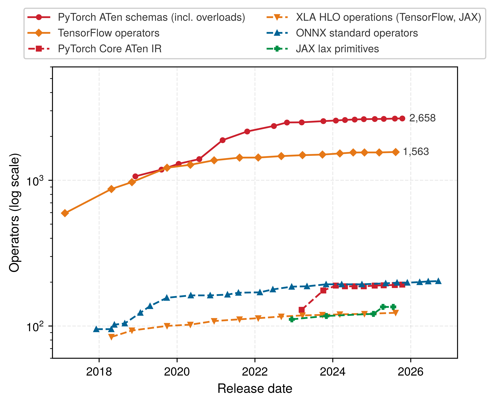
Содержание главы
Содержание
- 7 ML-фреймворки
- 7.1 Три проблемы фреймворков
- 7.2 Эволюция абстракций фреймворков
- 7.3 Исполнение: от графов к ядрам
- 7.3.1 Вычислительные графы
- 7.3.2 Барьер памяти и слияние ядер
- 7.3.3 Немедленное исполнение с динамическими графами
- 7.3.4 Накладные расходы диспетчеризации при жадном исполнении
- 7.3.5 Статические вычислительные графы
- 7.3.6 Захват графа и JIT-компиляция
- 7.3.7 Затраты на компиляцию и диспетчеризацию
- 7.3.8 Статические среды исполнения для микроконтроллеров
- 7.4 Дифференцирование: автоматическое вычисление градиентов
- 7.5 Абстракция: тензоры, устройства и операции
- 7.6 Модули: от операций к моделям
- 7.7 Анатомия шага обучения
- 7.8 Основные фреймворки: TensorFlow, PyTorch и JAX
- 7.9 Выбор фреймворка
- 7.10 Заблуждения и ловушки
- 7.11 Итоги
7 ML-фреймворки
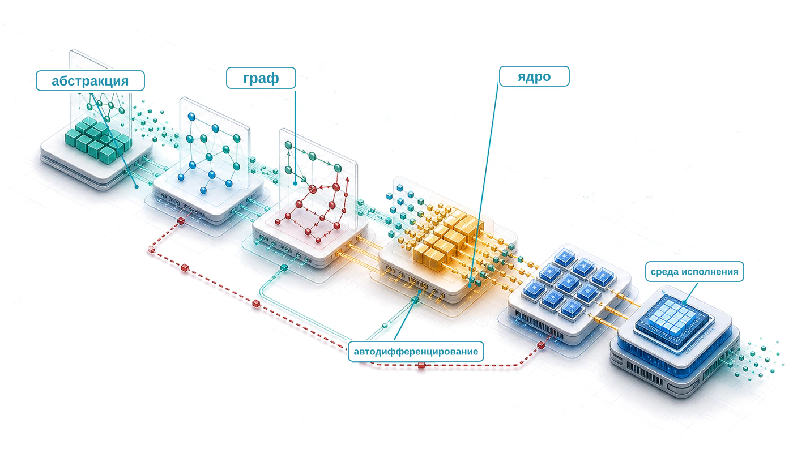
Назначение
Почему фреймворк незаметно определяет каждое последующее решение?
Уравнения модели не исполняются сами по себе. Фреймворк переводит архитектуру в работу, которую может выполнить аппаратное обеспечение, и этот перевод не нейтрален. Он решает, когда выполняются операции, какое промежуточное состояние сохраняет обучение, как распределяется память и какие целевые платформы развёртывания могут использовать полученный артефакт. Эти решения влияют не только на скорость. Они также определяют, что можно отлаживать напрямую, что компилятор способен оптимизировать и переживёт ли одна и та же модель путь из исследовательской среды в производственную среду исполнения. Одна и та же модель, выраженная через два пути исполнения, может отличаться по скорости или занимаемому объёму памяти в несколько раз — разрыв, который не закрывает никакая настройка модели, если фреймворк скрывает структуру, нужную компилятору. Следовательно, абстракции, делающие эксперименты удобными, создают долгоживущие обязательства. Как только проект обрастает контрольными точками, модулями, загрузчиками данных, форматами обслуживания и экспертизой команды вокруг одного фреймворка, его смена превращается в миграцию системы, а не в замену библиотеки — и измеряется в инженеро-месяцах, а не в днях. Фреймворк, отлично подходящий для быстрого исследования, может предоставлять слишком мало структуры для эффективного развёртывания, а ограниченный путь исполнения — жертвовать гибкостью, нужной на этапе поиска. Поскольку эти решения сходятся в одном программном слое, локальное удобство может обернуться ограничением производительности или переносимости ниже по стеку. Инженерный вопрос состоит не в том, какой фреймворк универсально лучший, а в том, какие компромиссы рабочая нагрузка, команда и целевая машина могут позволить себе зафиксировать. Поэтому понимание фреймворков — это умение рассуждать об этих системных решениях, а не заучивание преходящего синтаксиса API, который меняется с каждым релизом, тогда как лежащие в основе компромиссы сохраняются. В терминах D·A·M фреймворк опосредует совместную разработку алгоритма и машины, превращая алгоритмическое намерение и представление данных в исполняемую работу с учётом ограничений машины.
Цели обучения
- Объяснить, как фреймворки опосредуют совместную разработку алгоритма и машины через исполнение, дифференцирование и аппаратную абстракцию
- Сравнить энергичное, графовое и компилируемое «на лету» исполнение с точки зрения накладных расходов на диспетчеризацию, слияния ядер, стоимости компиляции и ограничений развёртывания
- Проанализировать, как обратнопроходное дифференцирование вычисляет все градиенты за один обратный проход и какое прямое состояние нужно сохранять или пересчитывать
- Оценить время передачи с хоста на устройство и объяснить, как раскладка тензора, тип данных и размещение на устройстве определяют, какое ядро выполняется и перекрываются ли передачи с вычислениями
- Реализовать паттерны абстракции модулей для обнаружения параметров, режимов работы, сериализации и хуков
- Вычислить FLOPs шага обучения, трафик памяти и накладные расходы на диспетчеризацию, чтобы определить, чем ограничен шаг: диспетчеризацией, трафиком памяти или арифметикой
- Выбрать фреймворк разработки и путь развёртывания на основе модели, аппаратного обеспечения, команды и требований к развёртыванию
7.1 Три проблемы фреймворков
Несколько строк на Python могут выразить один шаг декодирования языковой модели: вмонтировать самый новый токен, пропустить его через каждый блок трансформера и спроецировать результат на словарь. Ускоритель этих строк не видит. Он видит поток ядер,1 скомпилированных подпрограмм, которые он исполняет по одному запуску за раз, вместе с выделениями памяти и копированиями, а фреймворк машинного обучения — это программное обеспечение, превращающее первое во второе. Архитектуры сетей зафиксировал что делает каждая архитектура. Открытыми остались вопросы: когда выполняется каждая операция, как вычисляются её градиенты и какое ядро на каком устройстве её исполняет.
GPT-2 XL, «маяк» этой книги по ограниченности пропускной способностью памяти (одна из повторяющихся референсных рабочих нагрузок из Архетипы рабочих нагрузок), показывает, сколько стоят эти открытые вопросы. Один шаг декодирования с батчем размера один читает 3 GB весов FP16, что занимает около 0.9 ms при пропускной способности памяти 3.35 TB/s у H100 — референсного ускорителя этой книги. Исполняемый по одной операции за раз, тот же шаг порождает около 12 ядер в каждом из своих 48 блоков трансформера — всего 576 запусков. При 5 μs накладных расходов драйвера на запуск одно лишь порождение запусков занимает 2.9 ms — примерно 3× от времени чтения весов. Энергичный фреймворк на Python добавляет 10 μs диспетчеризации к каждой операции, что поднимает время хоста на выдачу шага до 8.6 ms — около 10× от времени, которое ускорителю нужно на чтение своих весов. Большую часть шага ускоритель проводит в ожидании следующей инструкции. Будет ли шаг стоить одну миллисекунду или десять — зависит от того, что фреймворк делает с этими несколькими строками Python: исполняет каждую операцию по мере вызова или захватывает последовательность, сливает её в меньше ядер и запускает её как единое целое.
Каждый фреймворк машинного обучения, независимо от API и философии дизайна, должен решить три ключевые проблемы. Первая — проблема исполнения: решение, когда и как выполняются вычисления. Фреймворк может исполнять операции немедленно по мере их написания (энергичное исполнение2) либо сначала построить вычислительный граф3 (запись операций и их зависимостей по данным, раскрывается в Глава 7.3.1), чтобы оптимизировать его перед запуском ядер на устройстве (графовое исполнение). Шаг декодирования выше — это проблема исполнения, и данный выбор задаёт компромисс между интерактивной отладкой и оптимизацией всей программы компилятором.
Когда стратегия исполнения выбрана, фреймворк должен решить проблему дифференцирования: автоматическое вычисление градиентов. Поскольку обучение на основе градиента требует производных скалярной функции потерь по миллионам или миллиардам параметров, ручное дифференцирование в таких масштабах невозможно. Фреймворки реализуют автоматическое дифференцирование, регистрируя правило производной для каждого поддерживаемого оператора и выстраивая цепочку этих правил в обратном направлении от функции потерь. Каждый шаг этой цепочки умножает градиент, приходящий от последующих операций, на локальные производные одной операции — шаг, который Глава 7.4.1.2 называет произведением «вектор–Якобиан». Попутно фреймворк должен управлять числовой точностью и накладными расходами памяти на промежуточные активации, сохраняемые для обратных проходов.
↩︎ Обратное распространение по сохранённым активациям, которое здесь механизирует обратнопроходное автоматическое дифференцирование, изложено в Вычисление градиентов и обратное распространение.
Третья проблема — аппаратная абстракция: нацеливание на разнообразное аппаратное обеспечение из единого интерфейса. Одно и то же определение модели должно быть выразимо на CPU, GPU, тензорных процессорах (TPU) и мобильных ускорителях, хотя каждый целевой вариант предлагает свои иерархии памяти, наборы инструкций и пропускную способность соединений. Для каждой операции фреймворк должен выбрать, какое ядро выполняется на каком устройстве, с какой раскладкой памяти и точностью. Внутри домена GPU экосистемы фреймворков всё активнее предоставляют языки для пользовательских ядер, такие как Triton (Tillet и др. 2019 г.), позволяющие разработчикам писать высокопроизводительные блочные ядра без ручного написания низкоуровневого CUDA (программной платформы GPU от NVIDIA (Nickolls и др. 2008 г.)) или ассемблера для устройств.
Эти три проблемы тесно связаны: модель исполнения диктует, когда записываются структуры данных для дифференцирования, а слой аппаратной абстракции определяет, какие преобразования графа можно опустить до целевой платформы, то есть перевести в представление, более близкое к аппаратным инструкциям целевой машины. В терминах железного закона ML-систем (принцип «Железный закон ML-систем») архитектура модели фиксирует число прямых операций
Фреймворк играет для модели ту же роль, что компилятор для программы на C. Соответствие буквальное: современные фреймворки включают оптимизирующие компиляторы, такие как Accelerated Linear Algebra (XLA) (Google 2025 г.) и TorchInductor (Ansel и др. 2024 г.), которые опускают захваченный граф в машинный код для целевого ускорителя. Именно эта роль компилятора отличает фреймворк от числовой библиотеки вроде NumPy.
Определение 7.1: Фреймворки машинного обучения
Фреймворки машинного обучения — это программные системы, переводящие высокоуровневые математические определения моделей в оптимизированные для аппаратного обеспечения планы исполнения, управляя вычислительным графом, автоматическим дифференцированием, диспетчеризацией ядер и выделением памяти по всей иерархии аппаратного обеспечения.
- Значимость: Фреймворки формируют каждый член железного закона, который сама модель не фиксирует: перемещённые байты
, достигнутая эффективность аппаратного обеспечения и уплаченные фиксированные накладные расходы . Например, слияние ядер с поддержкой компилятора может устранить записи промежуточных значений и последующие их чтения между совместимыми операциями. Слияние умножения матриц, добавления смещения и выпрямленного линейного блока (ReLU) меняет способ, которым та же математика достигает аппаратного обеспечения, не меняя саму модель. - Отличие: В отличие от числовой библиотеки вроде NumPy, которая обычно вычисляет каждую операцию по мере вызова, фреймворк машинного обучения может захватывать исполнение или откладывать его, чтобы проанализировать более крупный вычислительный граф и применить межоперационные оптимизации: слияние ядер, преобразования раскладки памяти и параллельное планирование. Эти оптимизации требуют видимости за пределами отдельно диспетчеризуемых операций.
- Типичная ошибка: Распространённое заблуждение — считать фреймворки взаимозаменяемыми обёртками API. Выбор фреймворка определяет, какие пути компиляции доступны. PyTorch может вернуть оптимизацию на уровне графа из энергичного кода через
torch.compile(), тогда как TensorFlow и JAX обычно полагаются на пути компиляции с поддержкой XLA, опускающие операции до целевого аппаратного обеспечения. Переход от энергичного исполнения к пути компиляции может существенно изменить пропускную способность, но прирост зависит от структуры модели, форм, поддержки операторов и аппаратного обеспечения.
В рамках железного закона фреймворк работает над тем членом, который доминирует (перемещение данных
Эта глава спускается по графу модели вниз, по одному уровню за раз (Таблица 1): шаг декодирования выше несёт уровень исполнения, а двухслойный обучающий шаг на MNIST, прослеженный в конце, собирает все уровни вместе. После краткого взгляда на то, как возникли уровни стека, раздел об исполнении доводит граф до ядер и решает, когда выполняется каждая операция. Раздел о дифференцировании строит обратный граф, который добавляет обучение, и учитывает значения, которые нужно сохранять. Раздел об абстракции достигает низа спуска — там, где тензоры занимают память устройства и ядра работают с ними. Затем модули собирают эти части обратно в модель, а анатомия одного обучающего шага прослеживает единственный шаг через все уровни. Завершается глава обзором основных фреймворков и тем, как выбирать между ними.
| Раздел | Уровень графа | Вопрос, на который отвечает | Член железного закона, затрагиваемый сильнее всего |
|---|---|---|---|
| Эволюция абстракций фреймворков | Библиотеки, автодифференцирование, компиляторы | Как возникли уровни стека | (контекст) |
| Исполнение: от графов к ядрам | Граф в ядра | Когда выполняется каждая операция и сколько запусков она стоит | Фиксированные накладные расходы |
| Дифференцирование: автоматическое вычисление градиентов | Прямой граф в обратный граф | Как вычисляются градиенты и какие значения нужно сохранять | Перемещённые байты |
| Абстракция: тензоры, устройства и операции | Тензоры в памяти устройства | Где живёт каждое значение и какое ядро работает с ним | Эффективность оборудования |
| Модули: от операций к моделям | Операции в модель | Как организованы параметры и состояние обучения | (организация) |
| Анатомия обучающего шага | Исполнение, дифференцирование и абстракция в одном шаге | Куда уходит время и байты одного шага | Все члены |
| Основные фреймворки и Выбор фреймворка | Полные системы | Какой фреймворк подходит под заданное ограничение | Все члены |
Автоматизация этой механики (запись графов операций, выделение буферов под градиенты, обход зависимостей в обратном порядке и диспетчеризация аппаратных ядер) не произошла одномоментно. Исполнение, дифференцирование и абстракция появлялись последовательно, как ответ на узкие места масштабирования в прежних численных инструментах, — сорокалетний путь от вручную оптимизированных ассемблерных подпрограмм до компилируемых сред исполнения графов.
7.2 Эволюция абстракций фреймворков
В 1979 году, чтобы написать на Fortran эффективно использующее оборудование умножение матриц, требовалось глубокое знание строк кэша, планирования регистров и векторных блоков. К концу 2010-х одна строка Python (torch.matmul(A, W)) могла диспетчеризоваться в оптимизированную реализацию, не требуя от программиста знания деталей оборудования. Четыре десятилетия абстракций сократили этот разрыв: каждый слой устранял узкое место, которое делало предыдущее поколение непрактичным в масштабе. История выстроила лестницу абстракций снизу вверх из четырёх слоёв (оптимизированные ядра, библиотеки массивов, автоматическое дифференцирование и графовые компиляторы), и каждый слой автоматизирует то, что нижележащий оставлял на усмотрение программиста. Далее в этой главе лестница проходится сверху вниз, начиная с графа, который определяет модель.
Первый слой установил переиспользуемые аппаратные примитивы. Базовые подпрограммы линейной алгебры (BLAS)4 стандартизировали низкоуровневые операции линейной алгебры (Lawson и др. 1979 г.), а LAPACK (Anderson и др. 1999 г.) построил поверх них разложения и решатели задач на собственных значениях. Стандартный интерфейс имел значение, потому что наивные вложенные циклы насыщают пропускную способность памяти задолго до того, как арифметические устройства достигнут пиковой производительности. BLAS позволил численному программному обеспечению делегировать эти операции векторным библиотекам производителей, оптимизированным под размеры кэшей, разрядности векторных блоков и регистровые файлы каждого процессора. Его расширение Level 3 добавило матрично-матричные подпрограммы, такие как умножение матриц (C = A @ B),5 которые доминируют в рабочих нагрузках ML (Dongarra и др. 1990 г.).
Второй слой — NumPy6 (Harris и др. 2020 г.) — обернул эти библиотеки в Python: интерпретатор управляет потоком управления и метаданными массивов (формой, шагами и типом данных), а скомпилированный код выполняет внутренние циклы над непрерывными буферами. Это разделение труда — высокоуровневое намерение в интерпретируемом языке и внутренние циклы в нативном коде — стало шаблоном для каждого последующего фреймворка.
Третий слой автоматизировал вычисление градиентов. Пользователи NumPy по-прежнему выводили и кодировали обратное распространение вручную — процесс, чреватый ошибками и не масштабирующийся на глубокие сети. Фреймворки глубокого обучения, такие как Theano,7 TensorFlow (Abadi и др. 2016 г.) и PyTorch (Paszke и др. 2019 г.), сделали автоматическое дифференцирование примитивом среды исполнения: записывая прямое вычисление в виде графа, они строят обратное вычисление автоматически. Эта автоматизация позволила «горькому уроку» действовать в темпе исследований. Как только новой архитектуре больше не требовался выведенный вручную обратный проход, общие методы, масштабирующиеся вместе с вычислениями, можно было пробовать так же быстро, как писались их прямые функции.
↩︎ «Горький урок» — о том, что общие методы, эксплуатирующие растущие вычисления, переживают вручную спроектированные подходы, — установлен в Горький урок.
Четвёртый слой автоматизировал построение ядер. Когда на каждую операцию приходится одно оптимизированное ядро, ускорение цепочки мелких операций по-прежнему означало написание объединённого ядра вручную. Графовые компиляторы, такие как XLA и TorchInductor, берут эту работу на себя: они захватывают область программы и генерируют ядра, слитые для целевого устройства.
На протяжении этой истории (Рисунок 1) вехи идут от подпрограмм BLAS и LAPACK через векторизацию NumPy к символическому захвату графа в Theano и TensorFlow, динамическим графам в PyTorch и функциональным преобразованиям в JAX. Каждое поколение сохраняло нижележащий слой оптимизированных производителем ядер, поднимая уровень абстракции, на котором инженеры выражают и дифференцируют модели.
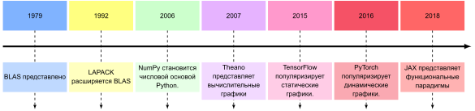
Каждое поколение скрывало детали, поглощавшие инженерные усилия в предыдущем, и вводило новые компромиссы. BLAS скрыл оптимизацию на уровне ассемблера, но зафиксировал интерфейс. NumPy скрыл управление памятью, но оставил дифференцирование ручным. Современные фреймворки скрывают вычисление градиентов, но заставляют выбирать между моделями исполнения. Каждый слой также скрывает предположения о данных, которые он передаёт дальше: каждая операция ожидает, что её входы имеют определённую форму, тип данных, устройство и — для физических величин — единицу измерения. Когда ничто не проверяет эти ожидания на границе, корректные компоненты могут сложиться в неправильную систему.
Практический случай 7.1: Интерфейс, забывший свои единицы (1999)
Контекст: марсианский климатический орбитальный аппарат NASA зависел от того, что наземное программное обеспечение, программное обеспечение аппарата, навигационные команды и интерфейсы подрядчиков согласованы в физическом смысле передаваемых значений (Mars Climate Orbiter Mishap Investigation Board 1999 г.).
Механизм: поставленное Lockheed Martin наземное ПО вычисляло импульс двигателей в английских единицах (фунт-сила-секунды), а навигационное ПО JPL потребляло эти значения, предполагая единицы СИ (ньютон-секунды), — неявное расхождение единиц в 4,45
Последствия: 23 сентября 1999 года аппарат был потерян после прохождения за Марсом (затмение). Его скорректированный перицентр 57 км вместо запланированных 226 км был признан слишком низким для выживания.
Реакция: комиссия рекомендовала проверки согласованности единиц, аудиты спецификаций передаваемых данных и более сильную сквозную верификацию наземного ПО.
Системный урок: два корректных фрагмента кода могут сложиться в неправильную систему, когда смысл обмениваемых ими значений неявен. ML-фреймворки встречают тот же отказ всякий раз, когда раскладки тензорной памяти (например, channels-first NCHW [
Фреймворк может выполнять эти проверки по мере исполнения каждой операции — когда сбойная строка и её промежуточные значения видны напрямую, — или до исполнения, когда захваченный граф может быть провалидирован и оптимизирован как целое. Когда происходят проверки и оптимизации — это проблема исполнения. Это первый выбор в проектировании фреймворка, потому что диспетчеризация во время исполнения и захват графа определяют и опыт отладки, и то, какие оптимизации смогут позже использовать автоматическое дифференцирование и отображение на оборудование.
7.3 Исполнение: от графов к ядрам
Рассмотрим двух инженеров, пишущих одну и ту же нейронную сеть. Первый отлаживается интерактивно: печатает формы тензоров после каждой операции, рассматривает промежуточные значения и проходит код по шагам с помощью pdb. Второй ждёт завершения этапа компиляции, а затем наблюдает, как модель, собранная из множества мелких операций, работает быстрее, но лишается прямого построчного взгляда на промежуточное состояние. Оба правы; они сделали разный выбор в отношении задачи исполнения (execution problem) — вопроса о том, должны ли операции выполняться немедленно, как написаны, или записываться для последующего исполнения. Она определяет рабочий процесс отладки, варианты развёртывания и пиковую утилизацию аппаратного обеспечения. Шаг декодирования GPT-2 XL, с которого открылась эта глава, — наглядный пример: при выдаче по одной операции за раз большую часть шага ускоритель ждёт хост.
7.3.1 Вычислительные графы
Если среда исполнения видит только одну операцию Python за раз и забывает её, как только ядро завершается, она не может знать, какие промежуточные тензоры понадобятся позже правилам градиента или какие соседние операции могли бы совместно использовать регистры на ускорителе. Чтобы планировать исполнение в масштабе нескольких операций, фреймворк представляет программу так же, как Архитектуры сетей представлял архитектуры моделей — в виде вычислительного графа: направленного ациклического графа (DAG), где узлы соответствуют операциям, а рёбра — зависимостям по данным. Далее в этой главе граф прослеживается вплоть до аппаратного обеспечения. Это та же структура, которую обратный проход проходит в обратном направлении, а здесь она вдобавок служит внутренним представлением вычислений во фреймворке для планирования и оптимизации.
Граф отделяет математические операции от порядка, в котором аппаратное обеспечение вычисляет их. В минимальном случае (Рисунок 2) направленные рёбра направляют входные переменные
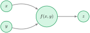
Реальные модели машинного обучения требуют гораздо более сложных структур графов. Рисунок 3 разделяет более крупный граф и исполняющую его среду на две связанные области: левый контейнер изолирует DAG нейронной сети из шести узлов с явными рёбрами потока данных, а правый контейнер вмещает компоненты среды исполнения (управление памятью и размещение устройств), взаимодействующие с ней.
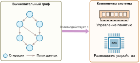
Такое представление графа — не просто визуализация; это структура данных, которая делает возможными и эффективное исполнение, и автоматическое дифференцирование. Без графа, охватывающего несколько операций, среда исполнения вынуждена запускать каждый оператор изолированно и материализовать каждый промежуточный тензор в памяти вне кристалла, прежде чем следующее ядро сможет его прочитать.
7.3.2 Барьер памяти и слияние ядер
Эта изоляция обходится дорого всякий раз, когда неоптимизированная среда исполнения вычисляет последовательность операций, ограниченных памятью (memory-bound), например
Это узкое место проистекает из «стены памяти» (memory wall) — растущего разрыва между ростом вычислений и ростом пропускной способности памяти, который количественно описывает Уравнение (3). Ускоритель выполняет арифметику значительно быстрее, чем извлекает операнды из внешней памяти. Поэтому большинство отдельных типов операций в нейронной сети (активации, нормализации и другие поэлементные операции) ограничены памятью (memory-bound) — они упираются в перемещение данных. Крупные матричные умножения, доминирующие в общей арифметике, могут быть ограничены вычислениями (compute-bound) — они упираются в пропускную способность вычислений. Границы производительности формализует границу между этими двумя режимами. Оба режима восходят к иерархии памяти, в которой размещённое на кристалле хранилище (регистры и SRAM-буферы) быстрое, но маленькое, а внешняя HBM большая, но несравненно медленнее доступная.
↩︎ Стена памяти и стоящее за ней соотношение темпов роста установлены в Физические ограничения развёртывания.
Слияние ядер (kernel fusion) (также называемое слиянием операторов) устраняет цепочки, ограниченные памятью, объединяя их в одно ядро, которое исключает промежуточный трафик HBM. Вместо трёх обходов к HBM слитое ядро загружает входы из HBM один раз, целиком выполняет нормализацию, dropout и ReLU внутри регистров и SRAM на кристалле и пишет обратно в HBM только итоговый выходной тензор, сокращая трафик памяти примерно в 3×. В общем случае для
Ядра внимания (attention)8 используют тот же принцип в большем масштабе. Полная матрица внимания содержит одну оценку для каждой пары позиций, поэтому она растёт как квадрат длины последовательности. Вместо материализации этой матрицы в HBM слитая реализация может обрабатывать её тайлами — блоками, достаточно маленькими, чтобы оставаться в памяти на кристалле рядом с вычислительными блоками, сокращая обращения к HBM до 9
↪ Ограничения на кристалле, определяющие, какие промежуточные тензоры слитое ядро может удержать на конкретном ускорителе, раскрываются в Слияние ядер на ускорителе.
Компиляторы фреймворков могут сливать только те операции, которые видны им одновременно. Когда энергичное (eager) окружение исполнения диспетчеризует операции по отдельности, каждый запуск ядра исполняется изолированно, скрывая возможности слияния между операциями и повторного использования буферов. Захват более широкой области вычислений в отложенный граф устраняет эту изоляцию: компилятор может рассмотреть целую последовательность зависимостей, установить времена жизни промежуточных тензоров и слить совместимые операции до диспетчеризации работы на ускоритель.
Вычислительный граф открывает глобальную оптимизацию, но момент его построения заставляет выбирать между четырьмя требованиями: отладкой, оптимизацией, развёртыванием и гибкостью. Рассмотрим элементарное выражение вроде y = x * 2. Немедленное вычисление умножения даёт конкретный тензор в y, так что разработчик может рассматривать промежуточные значения и ветвиться по вычисленным значениям тензоров с обычным управлением потоком Python, но среда исполнения видит только одну операцию за раз. Отложенное исполнение записывает операцию символически в граф зависимостей, который можно слить, спланировать по памяти и экспортировать для исполнения без интерпретатора хоста. Поскольку ни одна модель исполнения не удовлетворяет всем четырём требованиям сразу, современные фреймворки охватывают три стратегии: энергичное исполнение с динамическими графами, статические вычислительные графы и гибридные подходы, сочетающие компиляцию «на лету» (JIT) с энергичной разработкой.
7.3.3 Немедленное исполнение с динамическими графами
Когда форма тензора не совпадает или активация превращается в NaN посреди слоя, отложенный граф отказывает далеко от строки Python, породившей операцию, скрывая промежуточные значения, вызвавшие сбой. Энергичное исполнение (eager execution), также называемое define-by-run («определяется при исполнении»), избегает этого разрыва, вычисляя каждую операцию сразу, как только программа её вызывает, и строя граф вычислений динамически во время исполнения.
Пример 7.1: Сравнение кода немедленного и графового исполнения
PyTorch (энергичное исполнение):
import torch
x = torch.tensor([1.0, 2.0])
y = x * 2
print(f"Intermediate value: {y}") # Works immediately
z = y.sum()TensorFlow 1.x (статический граф):
import tensorflow as tf
x = tf.placeholder(tf.float32)
y = x * 2
# print(y) -> Prints Tensor("mul:0"...), not value!
z = tf.reduce_sum(y)
with tf.Session() as sess:
result = sess.run(z, feed_dict={x: [1.0, 2.0]})Системный вывод: Энергичное исполнение предоставляет промежуточные значения как обычное состояние времени исполнения, что делает отладку прямой. Статические графы подготавливают вычисления до исполнения, что открывает оптимизацию всего графа, но меняет модель отладки.
В этой модели define-by-run, когда код хоста вычисляет y = x * 2, среда исполнения ставит ядро умножения в очередь команд устройства и немедленно возвращает дескриптор тензора — ссылку на результат, который устройство может ещё не вычислить. Python переходит к следующей строке, пока устройство асинхронно разбирает свою очередь, а последующие операции, использующие y, встают в очередь за умножением. Хост ждёт только тогда, когда ему нужно фактическое число, например чтобы напечатать y или ветвиться по его значению; это ожидание называется синхронизацией.
Немедленное вычисление даёт энергичному коду гибкость обычного программирования: разработчики могут печатать промежуточные значения, использовать условные конструкции по вычисленным результатам и отлаживаться стандартными инструментами. Фреймворк записывает операции по мере их возникновения, строя динамический граф, отражающий фактически пройденный путь исполнения.
Для вычисления градиентов фреймворк записывает историю операций в так называемую ленту автограда (autograd tape),9 — переходную структуру данных, строящуюся во время исполнения. Каждая операция над тензором создаёт узел, который записывает: выполненную операцию, ссылки на входные тензоры и способ вычисления градиентов. Эти узлы образуют DAG, фиксирующий фактический путь, пройденный при прямом проходе, а не граф, заданный заранее. Список 1 показывает, как PyTorch записывает операции по мере их исполнения в своём энергичном режиме по умолчанию.
import torch
x = torch.tensor([1.0], requires_grad=True)
y = x * 2 # Executes immediately; records MulBackward node
z = y + 1 # Executes immediately; records AddBackward node
# The autograd tape exists NOW, built during executionПосле этих двух операций фреймворк построил ленту autograd с двумя узлами: один для умножения и один для сложения. Лента фиксирует, что z зависит от y, а y зависит от x. PyTorch именует каждый узел по его операции с числовым суффиксом, поэтому два узла из комментариев листинга во время исполнения выглядят как MulBackward0 и AddBackward0.
Вызов z.backward() обходит эту ленту в обратном топологическом порядке, применяя на каждом узле цепное правило:
- Вычислить
(начальный градиент) - Вызвать
AddBackward0.backward() - Вызвать
MulBackward0.backward() - Накопить градиент в
x.grad
Правила обратного прохода читают значения, сохранённые при прямом проходе, поэтому эти значения остаются в памяти, пока их не потребит обратный проход. После завершения backward() autograd обычно освобождает сохранённое состояние, а следующий прямой проход строит новый граф. Почему такой обход работает и во что обходится хранение этих значений — предмет Глава 7.4.
Пример 7.2: Операции с изменением на месте могут нарушить вычисление градиентов
Сценарий: инженер применяет in-place мутацию (
x += 1) внутри собственной функции активации PyTorch, чтобы сократить количество операций выделения памяти.
Диагноз: in-place операции перезаписывают память тензоров, содержащую активации прямого прохода, которые требуются ленте autograd для вычисления градиентов обратного прохода, что вызывает ошибку счётчика версий во время исполнения (PyTorch Contributors 2026 г.a). PyTorch поддерживает этот инвариант безопасности, ведя целочисленный счётчик версий у каждого тензора, который увеличивается при каждой in-place записи. Если версия сохранённого тензора на момент исполнения обратного прохода отличается от версии, зафиксированной при прямом проходе, autograd выбрасывает ошибку: активация, требуемая правилом дифференцирования, была изменена на месте.
Системный урок: автоматическое дифференцирование во фреймворке опирается на неизменяемость записей активаций прямого прохода. In-place запись в сохранённый тензор делает запись autograd недействительной, поэтому PyTorch останавливается с ошибкой, а не вычисляет неверный градиент.
Запись этой ленты и запуск работы устройства происходят внутри одного и того же цикла «по одной операции за раз» (Рисунок 4). Python определяет операцию, среда исполнения записывает её узел обратного прохода и ставит её работу на устройство в очередь, а управление возвращается в Python для следующего вызова, при этом устройство может исполняться асинхронно. Когда среда исполнения решает, что запустить, она видит только текущую операцию, а не целый блок будущих вызовов.
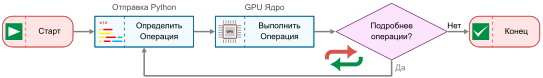
Динамическая лента autograd выражает поведение, зависящее от данных, непосредственно в языке хоста. Условия и циклы могут зависеть от значений тензоров, вычисленных в ходе исполнения, что открывает такие алгоритмы, как beam search, рекуррентные модели динамической длины или адаптивные вычислительные пути, подстраивающие своё исполнение по промежуточным активациям. Статические графы тоже умеют представлять зависящий от данных поток управления и динамические размерности через графовые операции, но жадное исполнение (eager execution) делает эти шаблоны естественными для написания и отладки на Python. Поскольку операции выдаются немедленно, разработчик может печатать тензоры, инспектировать значения и пользоваться стандартными отладчиками (pdb, точками останова) для диагностики ошибок почти так же, как в любой другой программе на Python.
Эта гибкость налагает затраты на задержку, которые напрямую проецируются на железный закон. Каждый шаг обучения динамически строит ленту autograd, добавляя к
7.3.4 Накладные расходы диспетчеризации при жадном исполнении
Этот потолок пропускной способности проявляется всякий раз, когда ядро завершается за несколько микросекунд, а хостовому интерпретатору и драйверу нужны десятки микросекунд, чтобы его выдать. Коэффициент накладных расходов диспетчеризации — хостовое программное время
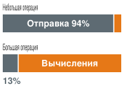
Фиксированные накладные расходы доминируют для мелких операций и растворяются за крупными.
В используемой здесь иллюстративной модели жадного исполнения каждая операция платит фиксированную стоимость порядка 15 μs за диспетчеризацию на стороне Python и запуск драйвером вместе взятые — ту же стоимость на операцию, что и шаг декодирования, открывший главу. Фактические накладные расходы зависят от фреймворка, бэкенда и аппаратуры, но их относительный вес по-прежнему определяется размером операции. Для небольшой операции, например ReLU на маленьком векторе, ядро может исполниться всего за 1 μs. Тогда диспетчеризация занимает 94 percent времени моделируемого шага, коэффициент накладных расходов диспетчеризации много больше 1, и GPU проводит большую часть времени в ожидании следующей команды. Для крупной операции, например большого матричного умножения, ядро исполняется 100 μs, диспетчеризация падает до 13 percent времени моделируемого шага, а коэффициент накладных расходов диспетчеризации опускается существенно ниже 1. Такая операция ограничена работой устройства; отличить ограничение вычислениями от ограничения памятью по-прежнему требует сравнения её вычислительной работы и трафика.
Накладные расходы диспетчеризации объясняют, почему модели со множеством мелких слоёв работают заметно медленнее, чем предсказывает их сырой счёт FLOP. Воздействие на ограничивающий член помещает этот симптом в таксономию узких мест, относя рабочую нагрузку, ограниченную диспетчеризацией, к overhead-bound, а не к «ограничен вычислениями», и показывает, какие оптимизации действительно её сдвигают. Устранить эту интерпретаторную работу на каждую операцию можно переходом от диспетчеризации ядро за ядром к исполнению на уровне графа — либо заранее определив статический вычислительный граф, либо захватывая и компилируя области just in time (Глава 7.3.6). Захваченный граф всё ещё может запускать несколько ядер, поэтому, сколько накладных расходов на запуск останется, зависит от слияния ядер и от того, перезапускает ли среда исполнения захваченную последовательность запусков как единое целое.
↩︎ Оценка эпохи MNIST, в которой эта фиксированная стоимость на операцию решает время обучения и на CPU, и на ускорителе, установлена в Итеративный процесс обучения.
7.3.5 Статические вычислительные графы
Накладные расходы жадного исполнения мотивируют противоположный дизайн: захватить всю вычислительную работу до начала её исполнения. Поскольку жадная среда исполнения видит лишь одну операцию за раз, она не может слить цепочку мелких ядер или спланировать переиспользование буферов по всему слою до запуска работы на ускорителе. Исполнение статического графа решает эту проблему видимости, сначала определяя полный вычислительный граф как символьное представление и лишь затем исполняя его отдельной фазой. Эта модель исполнения «сначала определи — потом запускай» означает, что граф существует до начала каких-либо вычислений, открывая путь к анализу, преобразованию и глобальной оптимизации заранее (ahead-of-time), чего отдельные жадные вызовы обеспечить не могут, пока компилятор их не захватит.
Статические графы реализуют чёткое разделение построения графа и его исполнения. TensorFlow 1.x, воплотивший этот подход, делает обе фазы явными в коде (Список 2). Он намеренно исполняет ту же схему x * 2 затем + 1, что показана при жадном исполнении в Список 1, удерживая арифметику неизменной так, что меняется только момент её исполнения. Символьное определение создаёт плейсхолдеры и операции без вычислений, а явное исполнение запускает реальную арифметику.
# Phase 1: Graph Construction (symbolic, no computation)
import tensorflow.compat.v1 as tf
tf.disable_v2_behavior()
# Define graph symbolically
x = tf.placeholder(tf.float32, shape=[1]) # Just a placeholder
y = x * 2 # Not executed, just recorded
z = y + 1 # Still no execution
# At this point, nothing has been computed
# Phase 2: Graph Execution (actual computation)
with tf.Session() as sess:
result = sess.run(z, feed_dict={x: [1.0]})
# Now computation happens: result = [3.0]В фазе определения программа объявляет операции и переменные и строит символьный DAG, не выделяя памяти под какие-либо тензоры. Только в фазе исполнения загружаются данные, на ускорителе материализуются конкретные буферы и запускается захваченный граф (Рисунок 5).
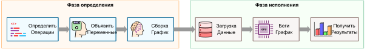
Ключевое отличие от жадного исполнения (eager execution) состоит в том, что при построении графа x, y и z — не тензоры, содержащие значения, а символические узлы графа. Операторы вроде * и + добавляют узлы преобразований в определение графа, не выполняя арифметики. Вызов print(y) делает это различие наглядным: печатается символическая метаданная тензора, а не числовые значения. И только когда хост вызывает sess.run(), среда исполнения анализирует, оптимизирует и выполняет захваченный граф на буферах устройства.
Поскольку до начала исполнения у фреймворка есть полный граф, он может выполнять опережающую оптимизацию (ahead-of-time optimization), недоступную для отдельных незахваченных жадных вызовов. Возможность слияния ядер (kernel fusion), упомянутая в Глава 7.3.2, становится здесь реализуемой. Видя в графе вместе y = x * 2 и z = y + 1, фреймворк может слить их в z = x * 2 + 1, исключив промежуточный y и вдвое сократив идеализированный трафик памяти. Когда формы и времена жизни тензоров известны, компилятор может спланировать память до исполнения и переиспользовать буферы с непересекающимися временами жизни; динамические размерности могут требовать проверки границ или выделения памяти во время исполнения. Раскладки тензоров также можно глобально преобразовывать (например, из NCHW в NHWC) для соответствия предпочтениям аппаратуры, хотя физические преобразования раскладок могут по-прежнему требовать копирований. Удаление мёртвого кода (dead code elimination, DCE)10 удаляет операции, чьи результаты не используются, а свёртка констант (constant folding) заранее вычисляет операции над константами, когда их входы известны.
Эти оптимизации напрямую проецируются на члены «железного закона»: слияние ядер может уменьшить
Поэтому статические графы могут приближаться к высокой утилизации, когда формы, операторы и раскладки совпадают с эффективными путями бэкенда. Цена этой производительности — сниженная гибкость. Стандартный управляющий код Python (if, for) не может зависеть от вычисленных значений тензоров в статических графах. TensorFlow предоставляет примитивы управления на уровне графа (tf.cond и tf.while_loop), поддерживающие условия, зависящие от данных, но они требуют особого синтаксиса, отличающегося от стандартного Python, что усложняет написание и осмысление кода. Страдает и отладка: трассировки стека указывают на код построения графа, а не на код исполнения, а сообщения об ошибках часто ссылаются на имена символических узлов, а не на фактически отказавшие операции.
7.3.6 Захват графа и JIT-компиляция
Оставаясь в жадном режиме, рабочие нагрузки из мелких операций оказываются ограничены диспетчеризацией на хосте и неслитым трафиком HBM, а переписывание исследовательской модели в статический граф лишает интерактивной отладки в Python и стандартного потока управления. JIT-компиляция устраняет этот разрыв: разработчики пишут и отлаживают обычный жадный код, а регионы программы захватываются во время исполнения для оптимизации на уровне графа. Ключевой компромисс при захвате графа — точность против общности. Трассировка, один из двух классических режимов захвата, верна единственному пути, по которому идёт наблюдаемый запуск; скриптинг, второй режим, обобщает по входам, сохраняя поток управления, применимый к любому входу. Оба подхода порождают промежуточное представление (IR)12, открывающее графовые оптимизации: слияние ядер, свёртку констант, удаление мёртвого кода и переиспользование буферов.
Компромисс между жадным исполнением и компиляцией имеет прямое следствие для «железного закона»: JIT-компиляция распределяет (амортизирует)
JIT-системы захвата графа следуют общему архитектурному паттерну во всех фреймворках. Первый запуск наблюдает тензорные операции, записывает регион графа, защищённый допущениями о формах, типах, раскладках и потоке управления, транслирует этот регион в промежуточное представление, применяет оптимизации слияния и раскладок и кэширует исполняемый код для последующих вызовов, удовлетворяющих тем же защитам (guards). Скомпилированный артефакт остаётся валидным лишь пока выполняются эти защиты; нарушенная защита вынуждает среду исполнения перекомпилировать или откатываться к жадному исполнению.
TorchScript в PyTorch, ныне устаревший в пользу путей захвата и экспорта вроде torch.export (PyTorch Contributors 2026 г.c, 2026 г.b), предоставлял оба режима захвата. Трассировка исполняла функцию с примерными входами и записывала тензорные операции, наблюдаемые на этом пути. Скриптинг вместо этого компилировал ограниченное подмножество исходного кода Python с аннотациями типов, сохраняя поддерживаемые ветви в графе ценой отказа от неподдерживаемых объектов Python, вызовов библиотек и метапрограммирования. В обоих режимах IR TorchScript использовал статические типы в форме статического одиночного присваивания (SSA), где каждая переменная присваивается ровно один раз, так что слияние, свёртка констант и удаление мёртвого кода могли выполняться без интерпретатора Python.
Главное ограничение трассировки в том, что трасса записывает операции с наблюдаемого пути, а не сохраняет произвольный поток управления Python. Поэтому ветвь, зависящая от данных, может «замереть» в той стороне, которую выбрал примерный вход (Список 3).
TracerWarning, когда значение тензора преобразуется в условие Python, поскольку полученная трасса может не обобщаться.
import torch
def conditional_forward(x):
if x.sum() > 0: # Data-dependent condition
return x * 2
else:
return x * 3
traced = torch.jit.trace(conditional_forward, torch.tensor([1.0]))
# Tracing captures ONLY the x.sum() > 0 branch
# If input later has sum <= 0, traced version
# still executes x * 2 branchВ этом примере преобразование тензорного условия в булево значение Python обычно порождает TracerWarning; тем не менее полученная трасса запускается без ошибок и молча исполняет захваченную ветвь для последующих входов, которым требуется другая ветвь. Поэтому предупреждения трассировки следует считать отказами корректности, когда присутствует зависящий от данных поток управления Python. Захват с защитами предотвращает такой тихий отказ только для проверяемых допущений. Вход, нарушающий защиту, вызывает перекомпиляцию, откат к жадному исполнению или ошибку, тогда как непроверенное допущение отказывает так же тихо, как эта трасса.
Захваченный регион всё ещё нужно транслировать в промежуточное представление компилятора, и трансляция намного проще, когда целевой словарь невелик. Жадные фреймворки, от которых стартует компилятор, невелики не бывают. Рисунок 6 подсчитывает операторы, которые каждый фреймворк определяет в последовательных релизах. Таблица нативных функций PyTorch выросла с 1,064 схем (с учётом перегрузок) в версии 1.0 в 2018 году до 2,658 к версии 2.9 в 2025 году (PyTorch Contributors 2025 г.). Реестр операторов TensorFlow вырос с 594 в версии 1.0 в 2017 году до 1,563 к версии 2.20 в 2025 году (TensorFlow Developers 2025 г.). Каждая из этих записей — то, что бэкенд должен либо реализовать напрямую, либо, до компиляции, переписать в комбинации гораздо меньшего набора примитивных операций — проход трансляции, называемый декомпозицией.
Компиляторные представления работают с намного меньшими наборами, которые выросли на десятки операторов, тогда как жадные поверхности — на тысячи. Core ATen IR — набор операторов, в который транслируются компиляторные и экспортные пути PyTorch, — содержит 192 операторов (PyTorch Contributors 2025 г.). Компилятор XLA, в который таргетируются и TensorFlow, и JAX, определяет 123 операций высокоуровневого оптимизатора (HLO) (OpenXLA Project 2025 г.). Стандарт Open Neural Network Exchange (ONNX), переносящий модели между фреймворками и средами исполнения, определяет 203 (ONNX Project 2026 г.). JAX изначально находится на стороне компилятора в этом разделении: его пользовательские операции сводятся к примерно 135 примитивам lax (JAX Developers 2025 г.) — набору размером с компиляторные ядра, поэтому программа на JAX достигает XLA почти без оставшейся декомпозиции.
Декомпозиция закрывает этот разрыв — сокращение 13–14× в объёме словаря (полная таблица операторов PyTorch против Core ATen, реестр TensorFlow против операций HLO в XLA). Новый бэкенд ускорителя, реализующий небольшое базовое множество, может исполнять модели, написанные против полной eager-поверхности, — именно поэтому покрытие операторами, а не пиковая пропускная способность, часто решает, сможет ли модель вообще работать на новом устройстве.
lax в JAX), по каждому релизу на логарифмической оси. Eager-поверхности выросли за 1 500 и 2 600 записей, тогда как каждое компиляторное множество оставалось в диапазоне примерно от 80 до 200. Значения получены из репозиториев проектов по их релизным тегам (PyTorch Contributors 2025 г.; TensorFlow Developers 2025 г.; OpenXLA Project 2025 г.; ONNX Project 2026 г.; JAX Developers 2025 г.).
Когда область захвачена и понижена, компиляция атакует накладные расходы диспетчеризации из Глава 7.3.4 напрямую, а слияние добавляет вторую экономию — в трафике памяти. Блокнот 7.1 количественно оценивает обе выгоды для блока активации из двух операций.
Инженерный расчёт 7.1: Физика программных накладных расходов
Связь с железным законом: для небольших операций слагаемое задержки
Сценарий первый: eager-режим (ловушка крошечных операций) Рассмотрим простой блок активации, y = relu(x + bias), в котором вход и выход содержат по
- Операции: две (Add, ReLU).
- Исполнение:
- Диспетчеризация и запуск ядра
Add: накладные расходы 15 μs. - Чтение/запись памяти:
байт. - Диспетчеризация и запуск ядра
ReLU: накладные расходы 15 μs. - Чтение/запись памяти:
байт.
- Диспетчеризация и запуск ядра
- Суммарные накладные расходы: 30 μs.
- Суммарный трафик памяти:
байт.
Сценарий второй: компилированный режим (слияние) Компилятор сливает это в одно ядро: FusedAddRelu. Этот сценарий сохраняет один обычный вход из Python и один запуск через драйвер, применяя ту же суммарную стоимость, что и в eager-режиме, чтобы изолировать эффект сокращения двух вызовов до одного.
- Исполнение:
- Диспетчеризация и запуск ядра
Fused: накладные расходы 15 μs. - Чтение/запись памяти:
байт (промежуточный результат остаётся на кристалле).
- Диспетчеризация и запуск ядра
- Суммарные накладные расходы: 15 μs (на 2× меньше накладных расходов на запуск).
- Суммарный трафик памяти:
байт (эффективность по пропускной способности 2×).
Системная идея: слияние экономит на обоих слагаемых сразу: половина запусков и, по правилу трафика слияния цепочек из Глава 7.3.2 при
Масштабируем эту арифметику на последовательность из 5 маленьких операций — и на шкале времени ускорителя проступают простои (Рисунок 7). При eager-исполнении каждое ядро на 1 μs ждёт 10 μs диспетчеризации из Python, из-за чего ускоритель простаивает около 91 percent последовательности, и в этот счёт входит только доля Python; стоимость запуска каждого ядра увеличила бы каждый простой ещё сильнее. Компиляция последовательности устраняет обе стоимости, которые eager-исполнение платит за каждую операцию, — простои на диспетчеризацию и трафик памяти для промежуточных результатов. Фреймворк отправляет работу одним запуском на 5 μs, что устраняет промежуточные простои диспетчеризации на хосте. Слияние операторов удерживает промежуточные активации в регистрах или кэше, поэтому вся последовательность завершается за 4 μs вместо некомпилированных 5 μs. Компилированная область, в которую входят из Python, как в блокноте выше, всё ещё платит одну диспетчеризацию Python за вызов — один раз для всей последовательности, а не для каждой операции; единую стоимость входа на рисунке не показывают.
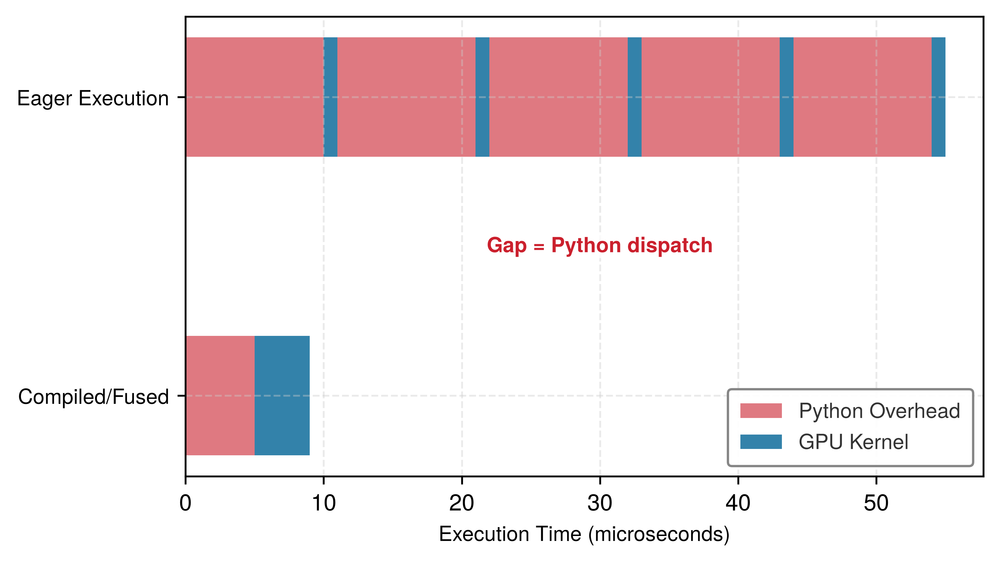
Компиляторы захвата графа, такие как torch.compile в PyTorch 2.013 (Ansel и др. 2024 г.), реализуют компилированную шкалу из Рисунок 7 над захваченными областями, не требуя от инженеров писать собственные CUDA-ядра.14 Однако компиляция не может охватить произвольный код Python: разрывы графа отмечают границу, за которой компиляция перестаёт применяться (конфигурация, требующая захвата полного графа, может вместо этого сообщить об ошибке). Управляющий поток Python, зависящий от данных, неподдерживаемые библиотечные вызовы, ввод-вывод, пользовательские объекты Python и сильно варьирующиеся формы могут укорачивать компилируемые области. При включённом откате в eager-режим каждый разрыв разделяет компилированные подграфы обычным исполнением на Python, вновь внося диспетчеризацию интерпретатора, сбрасывая амортизацию
Бэкенды, компилирующие эти захваченные области, занимают разные точки на спектре «гибкость — производительность». JIT-компилятор компилирует захваченные области во время исполнения и платит задержкой прогрева на первом проходе. Компилятор ahead-of-time (AOT) вместо этого компилирует захваченные вычисления до развёртывания, вынося компиляцию из горячего пути и позволяя автономную среду исполнения, когда целевой экспорт её поддерживает. Универсальный JIT-бэкенд, такой как TorchInductor за torch.compile или XLA, оптимизирует обычные рабочие нагрузки обучения и обслуживания с умеренной стоимостью компиляции. Специализированный ahead-of-time-компилятор инференса, такой как TensorRT от NVIDIA, может применять более глубокое слияние, понижение точности и автотюнинг, когда целевой объект развёртывания фиксирован. Ahead-of-time-среда исполнения для мобильных и встраиваемых систем, такая как ExecuTorch или TensorFlow Lite, жертвует ещё большей гибкостью ради занимаемого объёма памяти и предсказуемости. Все они подчиняются одному правилу: чем уже цель и стабильнее граф, тем больше оптимизаций компилятор может безопасно выполнить.
Компиляция сокращает список ядер; второй механизм устраняет стоимость запуска для каждого из оставшихся. CUDA Graphs записывают фиксированную последовательность запусков ядер с их аргументами и адресами памяти один раз, а затем воспроизводят всю последовательность одной отправкой с хоста (NVIDIA Corporation 2026 г.). Цена — жёсткость, ведь воспроизведение требует статических форм и фиксированных адресов буферов. Для шага декодирования GPT-2 XL, с которого открывалась глава, воспроизведение превращает 576 отдельных запусков в одну отправку, так что темп запусков хоста больше не задаёт время шага. Остаётся чтение весов около 0.9 ms плюс стоимость на стороне устройства исполнения этих ядер подряд, с чем и борется слияние.
Итоговый рабочий процесс — это системное решение. Быстрое прототипирование благоприятствует жадному (eager) исполнению, поскольку изменения архитектуры и срабатывание защит (guards) делают стоимость перекомпиляции заметной. Длительные запуски обучения и инференс в больших объёмах распределяют стоимость компиляции на множество исполнений, если у модели стабильные формы тензоров и мало разрывов графа. Отладка обычно начинается в жадном режиме, потому что ошибки напрямую соотносятся с исходным кодом и стандартные отладчики вроде pdb работают во время исполнения; компиляция возвращается после того, как поведение модели стало корректным и узкое место по производительности измеримо.
↩︎ Стоимость, которую медленные циклы экспериментов накладывают на количество кандидат-моделей, которые команда успевает проверить, установлена в Куда уходят часы: количественная оценка жизненного цикла МО.
Сопоставленные по шести измерениям (Таблица 2), три модели исполнения больше всего различаются в том, когда строится граф и какую его часть видит компилятор. Каждая строка таблицы восходит к одному выбору, сделанному в момент построения графа, который затем распространяется на управление потоком, отладку и пропускную способность на этапе исполнения.
| Аспект | Жадное исполнение + лента Autograd (режим по умолчанию в PyTorch) | Статический граф (TensorFlow 1.x) | JIT-компиляция (torch.compile) |
|---|---|---|---|
| Модель исполнения | Немедленное | Отложенное | Гибридная |
| Построение графа | Во время прямого прохода | До исполнения | Первое исполнение (с кэшированием) |
| Оптимизация | Ядра для отдельных операций | Заранее (ahead-of-time) | JIT-компиляция |
| Динамический поток управления | Поток управления Python | Поток управления в графе | Захваченные области или разрывы |
| Отладка | Лёгкая (стандартный Python) | Трудная (символьная) | Умеренная (смешанная) |
| Производительность | Базовая | Высокая (оптимизированная) | Высокая (скомпилированные области) |
То же разделение распространяется на планирование памяти, специализацию под оборудование, скорость исследовательских итераций и интеграцию с существующим кодом (Таблица 3). Там, где статический захват заранее вкладывается в планирование времён жизни буферов и генерацию кода под конкретную цель, динамическое исполнение отдаёт приоритет быстрой итерации и бесшовной композиции с обычным кодом хоста.
| Аспект | Статические графы | Динамические графы |
|---|---|---|
| Управление памятью | Точное планирование размещения, оптимизированное использование памяти | Гибкое, но потенциально менее эффективное |
| Использование оборудования | Может генерировать высоко оптимизированный код под конкретное оборудование | Может жертвовать аппаратно-специфичными оптимизациями |
| Скорость исследований | Более медленная итерация из-за требования «сначала определи, потом запускай» | Более быстрое прототипирование и эксперименты с моделями |
| Интеграция с унаследованным кодом | Больше разделения между определением и исполнением | Естественная интеграция с императивным кодом |
Эти компромиссы — не бинарный выбор. Современные фреймворки предлагают спектр вариантов исполнения, что поднимает количественный вопрос: где на этом спектре должен находиться конкретный проект.
7.3.7 Затраты на компиляцию и диспетчеризацию
Два количественных принципа делают выбор модели исполнения измеримым. Принцип континуума компиляции спрашивает, когда выигрыш от компиляции оправдывает затраты на разработку, сравнивая производственные исполнения с итерациями разработки. Закон накладных расходов диспетчеризации записывает отношение накладных расходов диспетчеризации через количество операций и стоимость одной операции, давая порог, который говорит, когда вся рабочая нагрузка ограничена накладными расходами.
Принцип континуума компиляции
Уравнение 1 упорядочивает путь исполнения от максимальной гибкости к максимальной оптимизации в четырёх позициях, и каждая подписанная стрелка называет механизм, который сдвигает проект на шаг вправо, к оборудованию:
где:
= число производственных исполнений (безразмерное количество: запросы инференса, шаги обучения) = число итераций разработки, требующих перекомпиляции (безразмерное количество) = время одного исполнения в жадном режиме (секунды) = время одного исполнения в скомпилированном режиме (секунды) = время одной компиляции или перекомпиляции (секунды; считается постоянным)
Эта модель предполагает, что скомпилированный артефакт остаётся валидным между изменениями в разработке и что начальная компиляция и каждая перекомпиляция стоят одинаково; при этих предположениях правило решения — компилировать, когда
Таблица 4 применяет это правило решения к гипотетическим значениям пропускной способности и времён компиляции для разных режимов исполнения и архитектур моделей:
| Модель | Жадное исполнение (примеров/с) | torch.compile (примеров/с) | TensorRT (примеров/с) | Настройка JIT (секунды) |
|---|---|---|---|---|
| ResNet-50 | 1,450 | 2,150 | 3,800 | 15–30 |
| BERT-Base | 380 | 520 | 890 | 30–60 |
| ViT-B/16 | 620 | 950 | 1,650 | 25–45 |
| GPT-2 (124M) | 180 | 260 | 420 | 45–90 |
От того, насколько часто скомпилированный код переиспользуется, зависит ответ на вопрос о компиляции, и три типичных случая попадают в разные точки. В исследовательском прототипировании (
Для многократного исполнения (
Это число безубыточности — случай только производственных исполнений из Уравнение 2. При единственной компиляции и отсутствии перекомпиляций в разработке выигрыш от компиляции достигает 1 ровно тогда, когда число производственных исполнений равно числу безубыточности, поэтому каждое исполнение сверх него — чистый выигрыш. Подстановка гипотетических значений ResNet-50 в Уравнение 3 даёт приблизительно 134,000 images. Тот же принцип распределения затрат применим к длительным запускам обучения с использованием измеренных для этой рабочей нагрузки пропускной способности обучения и затрат на компиляцию.
Долгоживущий производственный инференс (
Эти случаи образуют континуум возрастающего переиспользования (Рисунок 8). Полное время каждой стратегии начинается с её однократной стоимости компиляции и растёт со скоростью стоимости одного исполнения. Поэтому при малом числе исполнений выигрывает жадный режим, JIT выигрывает, как только его компиляция распределилась, а AOT выигрывает лишь при наибольших количествах, где его более высокие предварительные затраты полностью окупаются. Точки пересечения на рисунке (около
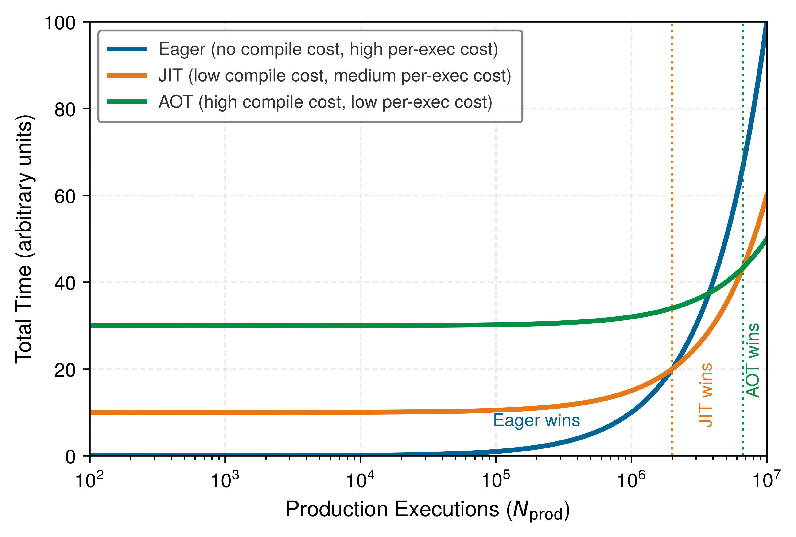
Арифметика точки безубыточности принимает экономию на каждом запуске как данность, но её размер зависит от того, какую долю времени рабочей нагрузки компилятор способен охватить, а эта доля различается между архетипами нагрузок. Следовательно, стратегия исполнения должна соответствовать операционному режиму каждого архетипа. В батчевом префилле, когда модель обрабатывает весь промпт целиком (Алгоритмическая структура), трансформеры обладают высокой арифметической интенсивностью и выигрывают от компиляции плотных матричных операций. В авторегрессионном декодировании с малым батчем, генерирующем по одному токену за раз, рабочая нагрузка напротив смещается в режим, ограничен памятью по пропускной способности, где доминируют пересылки данных. Таблица 5 сопоставляет каждый повторяющийся архетип с кандидатной стратегией исполнения на основе этих первичных физических ограничений.
↩︎ Архетипы рабочих нагрузок и доминирующий в каждом член железного закона установлены в Архетипы рабочих нагрузок.
| Архетип | Доминирующий член железного закона | Кандидатная стратегия фреймворка | Обоснование |
|---|---|---|---|
| ResNet-50 (ограничен вычислениями) | Скомпилированные плотные ядра | Регулярные плотные ядра выигрывают от выбора раскладки, понижения точности и специализации бэкенда; слияние помогает прежде всего в окружающих областях, ограниченных памятью или запуском | |
| GPT-2 (ограничен пропускной способностью) | Слияние attention + графовая компиляция | Слитый attention устраняет промежуточные пересылки активаций туда и обратно, а компиляция убирает накладные расходы на запуск ядер; потоковая передача параметров и KV-кэша остаётся ограниченной пропускной способностью | |
| DLRM (ограничен ёмкостью) | Сначала ёмкость, затем |
Специализированные ядра выборок и измеренный захват | Нерегулярные gathers ограничивают часть оптимизаций; измеряйте выигрыш от компиляции в плотных областях и окружающем диспетчеризаторе |
| DS-CNN (ограничен энергопотреблением) | Энергия и ёмкость памяти (ограничения осуществимости) | Среда исполнения для микроконтроллеров со статической ареной | Фиксированная память и небольшая нативная среда исполнения должны уместиться в целевую платформу прежде, чем можно будет оптимизировать задержку |
Опорный пример 7.1: Стратегия фреймворка по архетипам
Четыре повторяющихся архетипа из Таблица 5 подчиняются одному правилу. Экономия от диспетчеризации и слияния наибольшая в областях, ограниченных накладными расходами и памятью, тогда как плотные ядра, ограничены вычислениями, выигрывают главным образом от раскладки, точности и специализации бэкенда — и обычно в меньшей степени.
Системный инсайт: В иллюстративном сценарии нагрузки, ограничен вычислениями, такие как строка ResNet-50 в Таблица 4, выигрывают главным образом от выбора раскладки и понижения точности в плотных ядрах, а слияние помогает им в основном в окружающих поэлементных областях и областях нормализации. Нагрузкам, ограниченным пропускной способностью, например генерации GPT-2 с малым батчем, требуется различать трафик промежуточных активаций и потоковую передачу параметров. Слияние ядер attention устраняет пересылки туда-обратно для переходных тензоров активаций и убирает задержку диспетчеризации, но пропускная способность памяти по-прежнему ограничивает потоковую передачу весов модели и KV-кэшей, если только формирование батчей не повышает арифметическую интенсивность. Нагрузки, ограниченные ёмкостью, например DLRM, могут выиграть меньше, поскольку нерегулярные embedding-выборки оставляют компилятору ограниченный простор.
Закон накладных расходов на диспетчеризацию
Если континуум компиляции спрашивает, наберётся ли достаточно запусков, чтобы окупить подготовку к компиляции, то закон накладных расходов на диспетчеризацию спрашивает, не простаивает ли отдельный запуск на хосте. Пусть
Когда Overhead Ratio
Применение Уравнение 4 означает сравнение программных накладных расходов
Инженерный расчёт 7.2: Накладные расходы на диспетчеризацию в двух масштабах
Задача: Определить порог, при котором накладные расходы диспетчеризации хостового интерпретатора Python ограничивают сквозное время исполнения относительно аппаратного времени ускорителя.
Сценарий один: небольшой многослойный перцептрон (ограничен накладными расходами)
- Вычисления: 6 ops в небольших матричных/поэлементных операциях.
- Аппаратное время:
2.6 μs (в основном задержка памяти). - Программные накладные расходы:
6 ops 15 μs/op = 90 μs. - Отношение: 90 μs/2.6 μs ≈ 34.6.
- Итог для малой модели: Система тратит 97 percent времени на диспетчеризацию на хосте и запуск ядер. Устранение всех смоделированных накладных расходов на диспетчеризацию дало бы ускорение с верхней границей 35.6×.
Сценарий два: слой GPT-3 (ограничен устройством)
- Вычисления: Огромные матричные умножения.
- Допущения: Оба времени ниже — иллюстративные круглые значения для одного слоя масштаба GPT-3 при большом батче, они не выведены для конкретного ускорителя. Вывод от них не зависит, потому что при 15 μs/op из этой главы отношение достигло бы 1, только если бы слой выпустил тысячи отдельно диспетчеризуемых ядер.
- Аппаратное время:
100 ms = 100000 μs. - Программные накладные расходы:
, 12 «жадных» ядер одного блока трансформера при 15 μs/op. Число ядер взято из количества GPT-2 XL в начале главы — честная прокси-оценка, поскольку GPT-3 строит каждый блок из тех же операций attention и feed-forward, лишь шире. - Отношение: 180 μs/100000 μs ≈ 0.0018.
- Итог для большой модели: Смоделированные накладные расходы Python пренебрежимо малы. Компиляция может по-прежнему улучшить слияние, раскладку или специализацию бэкенда; вклад устранения диспетчеризации незначителен.
Системный инсайт: Накладные расходы на диспетчеризацию зависят от режима. Компиляция может снизить хостовые накладные расходы для нагрузок из мелких операций, сливая операции в меньшее число запусков, тогда как большие модели выигрывают главным образом от слитых ядер и сокращения пересылок данных.
7.3.8 Статические среды исполнения для микроконтроллеров
Континуум компиляции заканчивается на дальнем крае, где ограничивающая стоимость на микроконтроллере — не отдельная диспетчеризация, а сама среда исполнения, чей занимаемый объём памяти и задержка превышают возможности устройства. Пока облачные фреймворки, такие как PyTorch и TensorFlow 2.x, отдают приоритет гибкости через «жадное» исполнение (eager), системы TinyML15, работающие на микроконтроллерах (MCU) с килобайтами памяти, не могут позволить себе накладные расходы интерпретатора Python или полностью динамической среды исполнения. Микро-среда исполнения может по-прежнему проходить модель оператор за оператором, однако она находится на специализированном конце континуума, потому что список операторов, слинкованные в бинарник ядра и план памяти фиксированы ещё до отгрузки устройства, и во время исполнения решать почти нечего.
Опорный пример 7.2: Пример-маяк: KWS на TinyML
Сценарий: Развёртывание маяка распознавания ключевых слов (KWS) — DS-CNN, ограниченной энергопотреблением рабочей нагрузки этой книги, — на микроконтроллере Nordic nRF52840 (Cortex-M4F) с 256 KB RAM и 1 MB Flash. Это меньшая целевая платформа, чем ESP32-S3 из сценария с умным дверным звонком (Архетипы рабочих нагрузок), выбранная, чтобы показать среду исполнения в самых стеснённых условиях.
Ограничение: Полная среда PyTorch и Python превышает бюджет памяти устройства на порядки.
Решение фреймворка: Микро-фреймворки, такие как TensorFlow Lite Micro (TFLM) (David и др. 2021 г.), решают это с помощью крошечной интерпретаторно-ориентированной среды исполнения с жёсткой дисциплиной памяти:
- Фиксированная тензорная арена: Приложение предоставляет непрерывную тензорную арену, и фреймворк планирует и переиспользует буферы из этой арены, не полагаясь на динамическое выделение во время инференса.
- Выбор ядер: Слинковать или зарегистрировать в среде исполнения нужно только конкретные ядра, используемые моделью (например, Conv2D, DepthwiseConv).
- Компактное интерпретаторное исполнение: MCU исполняет небольшой интерпретатор на C/C++ над плоским представлением модели, причём модель и арена связываются при инициализации, а не собираются динамически во время исполнения.
Ограничивающее ограничение: Энергетический бюджет делает распознавание ключевых слов нагрузкой, ограниченной энергопотреблением, но первый тест, который должен пройти фреймворк, — это ёмкость памяти, а не пропускная способность или накладные расходы на диспетчеризацию; именно поэтому Таблица 5 рассматривает её как порог осуществимости. Первоочередная задача фреймворка — уместить промежуточные активации модели («рабочий набор») в крошечную SRAM микроконтроллера.
Эти микро-среды исполнения жертвуют динамической гибкостью ради сокращения занимаемого объёма памяти и предсказуемости памяти. С компактными моделями, маломощным железом и циклами включения/выключения такая дисциплина позволяет вести инференс масштаба милливатт с перемещением данных преимущественно внутри чипа. Во всём спектре — от динамического «жадного» исполнения до статической графовой компиляции и специализированных микро-сред — разработчики должны сопоставлять стратегию исполнения с ограничивающим ограничением целевой платформы.
Контрольная точка 7.1: Модели исполнения
Выбор режима исполнения определяет и скорость разработки, и производительность модели.
Отлаживаемость vs. скорость
Современный компромисс
Задача исполнения определяет, когда выполняются вычисления и какие оптимизации возможны. Обучение нейронных сетей, однако, требует возможности, которую не обеспечит никакое хитрое планирование: способности автоматически вычислять градиенты.
7.4 Дифференцирование: автоматическое вычисление градиентов
Фреймворк, который эффективно исполняет графы, но не умеет вычислять градиенты16, способен выполнять инференс, но не способен обучаться. Обучение требует производной скалярной функции потерь
Системная инженерия дифференцирования развивает алгоритм обратного распространения ошибки. Она решает, как фреймворки представляют графы вычислений, управляют памятью для промежуточных значений и эффективно организуют обратный проход на ускорителях. Фреймворк механизирует правило дифференцирования сложной функции как крупномасштабный системный учёт: отслеживание зависимостей операторов, подготовку буферов активаций и диспетчеризацию обратных ядер. Функция в Список 4 сводит эту ключевую идею к трём элементарным операциям.
↪ Алгоритмы оптимизации, которые потребляют эти градиенты, рассматриваются в Оптимизаторы и их память.
def f(x):
a = x * x # Square
b = sin(x) # Sine
c = a * b # Product
return cФреймворки раскладывают эту функцию на элементарные операции, каждая из которых имеет известную локальную производную, а затем комбинируют эти локальные производные по правилу дифференцирования сложной функции, вычисляя градиенты через поддерживаемые композиции. Системная задача — выполнить это преобразование в условиях физических ограничений оборудования: фреймворк должен представить граф вычислений, сделать доступными необходимые прямые значения и спланировать обратные ядра, не исчерпав HBM ускорителя. Промышленные среды исполнения решают эти задачи с помощью структурированной записи графа, кэширующих аллокаторов и обратного обхода.
7.4.1 Прямой и обратный режим
Вычислять градиент скалярной функции потерь по миллионам весов модели по одному весу за проход потребовало бы миллионов отдельных проходов через сеть, тогда как обратный обход от единственной скалярной функции потерь восстанавливает градиенты всех весов за один обратный проход. Автоматическое дифференцирование работает в двух направлениях обхода: прямой режим, стоимость которого растёт с числом входов, и обратный режим, стоимость которого растёт с числом выходов. Поскольку задачи глубокого обучения сводят большой набор параметров к единственной скалярной функции потерь, эта асимметрия определяет и занимаемый объём памяти, и график исполнения лежащего в основе фреймворка.
Прямой режим
Автоматическое дифференцирование в прямом режиме вычисляет производные по направлениям попутно с самим прямым вычислением. Для каждой промежуточной переменной
Чтобы увидеть механизм конкретно, рассмотрим вычисление одновременно значения и производной
def f(x): # Computing both value and derivative
# Step 1: x -> x²
a = x * x # Value: x²
da = 2 * x # Derivative: 2x
# Step 2: x -> sin(x)
b = sin(x) # Value: sin(x)
db = cos(x) # Derivative: cos(x)
# Step 3: Combine using product rule
result = a * b # Value: x² * sin(x)
dresult = a * db + b * da # Derivative: x²*cos(x) + sin(x)*2x
return result, dresultПрямой режим механизирует это парное отслеживание через дуальные числа — значения вида
x, dx = 2.0, 1.0 # seed: track the derivative with respect to x
a = x * x # value: 4.0
da = 2 * x # derivative: 4.0
b = sin(x) # value: 0.9093
db = cos(x) # derivative: -0.4161
c = a * b # value: 3.637
dc = a * db + b * da # derivative: 1.973Единственный прямой проход с затравленным касательным вектором
Обратный режим
Промежуточный слой, отображающий входной вектор
Пока прямой режим вычисляет произведения Якобиана на вектор (
Чтобы увидеть, как VJP обходится без полной матрицы, рассмотрим простую поэлементную операцию вроде
Обратный режим работает с той же функцией из трёх операций
Алгоритм 1 Автоматическое дифференцирование в обратном режиме
Требуется: ориентированный ациклический граф со скалярным выходом
Гарантируется: сопряжённые переменные
1:для
2:вычислить
3:конец цикла
4:
5:для
6:для каждого родительского узла
7:
8:конец цикла
9:освободить сохранённые значения после исполнения всех правил, которым они нужны
10:конец цикла
11:
12:вернуть сопряжённые переменные для указанных узлов
Алгоритмическая структура algorithm 1 раскрывает свою системную стоимость. Прямой проход записывает зависимости операторов и буферизует промежуточные значения, требуемые обратным правилам дифференцирования, до тех пор, пока обратный обход их не потребляет. Обратный режим обменивает хранение активаций и учёт графа на единственный обратный проход. Этот проход выполняет одно правило дифференцирования на каждую записанную операцию, и каждое правило стоит примерно столько же, сколько дифференцируемая им операция, поэтому весь обход стоит в небольшое постоянное число раз дороже прямого прохода, независимо от числа параметров (Baur и Strassen 1983 г.; Griewank и Walther 2008 г.).
Для конкретной функции из Список 4, вычисленной при
Этот единственный обратный обход вычисляет
Исполнение этого обхода на оборудовании обнажает физическое ограничение: вычисление локальных производных во время обратного прохода требует рабочей точки, установленной при прямом исполнении. Поэтому фреймворк должен определять, какие прямые тензоры сохранять в памяти устройства, когда их выделять и когда освобождать. Записанный граф отвечает на вопрос «когда освобождать»: каждый сохранённый тензор можно освободить, как только выполнено последнее обратное правило, которое его читает.
Двухслойная сеть делает эти требования конкретными (Список 7). Явная трассировка обоих проходов показывает, какие прямые активации должны дожить до обратного обхода.
def simple_network(x, w1, w2):
hidden = x * w1 # First layer
activated = max(0, hidden) # ReLU activation
output = activated * w2 # Second layer
return output
# --- Forward pass stores intermediates ---
x, w1, w2 = 1.0, 2.0, 3.0
hidden = x * w1
activated = max(0, hidden)
output = activated * w2
# --- Backward pass consumes them ---
d_output = 1.0 # Seed gradient
d_w2 = activated # = 2.0
d_activated = w2 # = 3.0
d_hidden = d_activated * (1 if hidden > 0 else 0) # ReLU gate: 3.0
d_w1 = x * d_hidden # = 3.0
d_x = w1 * d_hidden # = 6.0Из этого примера вытекают три требования к реализации. Во-первых, фреймворк должен отслеживать зависимости между операциями, чтобы определить правильный порядок обратного обхода. Во-вторых, информация, необходимая каждому обратному правилу, должна быть доступна — либо сохранена на прямом проходе, либо восстановлена заново. Правило дифференцирования сложной функции вычисляет локальные производные в прямой рабочей точке. Например, вычисление
7.4.2 Память активаций
Удержание прямых значений превращает ёмкость памяти устройства, а не чистую пропускную способность операций с плавающей точкой, в границу осуществимости обучения. Модель с 175B параметрами в FP16 уже требует 350 GB только на веса, что превышает физическую память любого одиночного ускорителя ещё до сохранения первого прямого активацонного значения, а обратное автоматическое дифференцирование усугубляет это давление, удерживая зависящие от операций активации для правил вычисления производных в обратном режиме. Сохранённые активации столь же тяжким грузом ложатся и на модели, чьи веса свободно помещаются в память: в ResNet-50 с батчем 64 (рассмотренном в Глава 7.4.3.2) сохранённые активации превышают веса FP32 примерно на два порядка, не считая самих весов, градиентов и состояний оптимизатора.
Этот занимаемый объём памяти сохранённых активаций накапливается от слоя к слою, поскольку каждый прямой слой добавляет тензоры, которые должны сохраняться до тех пор, пока обратный проход не размотается до этого слоя (Список 8). Для батча из
Сохранённый занимаемый объём достигает пика в начале обратного прохода, когда ещё живы все сохранённые тензоры, и спадает по мере того, как обратные правила потребляют эти тензоры. Пик суммарной памяти обучения может наступать позже, когда становятся живыми градиенты и временные рабочие области. Линейный рост также позволяет фреймворку снизить сохраняемый пик, разбивая большой батч на меньшие микро-батчи (накопление градиента).18
def deep_network(x, w1, w2, w3):
# Forward pass - must store intermediates
hidden1 = x * w1
activated1 = max(0, hidden1) # Store for backward
hidden2 = activated1 * w2
activated2 = max(0, hidden2) # Store for backward
output = activated2 * w3
return outputСохранённый пик — это ограничение ёмкости, а не разрыв в пропускной способности памяти из «стены памяти», и помимо уменьшения батча за один проход фреймворки снимают его двумя архитектурными стратегиями. Первая — контрольные точки активаций (или контрольные точки градиента), техника обратного режима (Griewank и Walther 2000 г.), которую фреймворки глубокого обучения переняли, чтобы обучать глубокие сети в памяти, растущей сублинейно (Chen и др. 2016 г.). Вместо буферизации каждого промежуточного значения активаций среда исполнения сохраняет только тензоры на границах выбранных сегментов и пересчитывает отброшенные промежуточные значения по требованию во время обратного прохода. В Список 9 обратный проход заново выполняет каждый прямой сегмент, чтобы регенерировать его активации, а не загружать их из глобальной памяти.
↪ Расписания контрольных точек активаций и стоимость их пересчёта разбираются в Оптимальная стратегия размещения контрольных точек.
# Standard backward: every forward activation stays resident
h1 = layer1(x) # kept for backward
h2 = layer2(h1) # kept for backward
out = layer3(h2) # kept for backward
# Checkpointed: keep only the boundary h1 and drop h2. The
# backward pass re-runs the wrapped segment to regenerate
# h2 on demand instead of holding it in memory.
h1 = layer1(x) # boundary: kept
out = checkpoint(
lambda a: layer3(layer2(a)), h1
) # h2 recomputed in backwardВторая стратегия — слияние ядер, к которому мотивирует «стена памяти», рассмотренная в Глава 7.3.2, здесь применённое к телу слоя. Вместо выполнения умножения матриц, добавления смещения и функций активации в виде отдельных ядер, сериализующих промежуточные тензоры в глобальную память ускорителя (HBM), компиляторы сливает совместимые операторы в одно ядро, передающее промежуточные значения через регистры или разделяемую память на кристалле. Выгода слияния для ёмкости уже, чем его выгода для трафика. Временные величины, передаваемые только между слитыми операторами, никогда не выделяются в HBM, поэтому ничего не добавляют к пиковой памяти, тогда как любое значение, которое читает правило обратного прохода, всё же должно сохраняться.19
Сам обратный проход опирается на специализированные ядра, оптимизированные под аппаратное обеспечение. Вместо синтеза обратных проходов из наивных элементарных операций фреймворки вызывают настроенные обратные ядра (например, из cuDNN — библиотеки примитивов нейронных сетей NVIDIA), оптимизирующие шаги доступа к памяти и использование регистров на аппаратуре ускорителя (Chetlur и др. 2014 г.). Контрольные точки и слияние ядер — это то, что позволяет обучать крупные архитектуры в пределах физической памяти ускорителя без ошибок нехватки памяти; специализированные обратные ядра ускоряют обратный проход, не уменьшая того, что он обязан хранить.
7.4.3 Внутреннее устройство autograd
Контрольные точки, слияние и специализированные ядра решают физические узкие места автоматического дифференцирования, но промышленные фреймворки прячут эти механизмы под обучающим циклом из четырёх вызовов. Эти вызовы очищают градиенты, выполняют прямой проход, вызывают backward для функции потерь и делают шаг оптимизатора. За этими вызовами среда исполнения строит и обходит динамический граф вычислений, выделяет и освобождает промежуточные буферы, планирует обратные ядра на потоках устройства и применяет политику численной точности.
Запись обратного графа
Если прямая операция отбрасывает свои входы и не оставляет записи о том, какая функция породила её выход, вызов loss.backward() не имеет пути назад к весам модели и не имеет сохранённых активаций для подстановки в правило цепочки. Чтобы сделать обратный обход возможным без предварительной компиляции графа, система autograd динамически строит во время прямого прохода направленный ациклический граф из объектов Node (или Function). Каждый узел хранит правило обратного дифференцирования оператора и держит ссылки на тензоры, необходимые для вычисления его произведений вектор–Якобиан. Поскольку рёбра направлены от выходов к входам, движок может обходить граф в обратном топологическом порядке, как только получит начальный градиент от скалярной функции потерь. Память, которую удерживают живой эти ссылки узлов, рассматривается в Глава 7.4.3.2.
Когда запись градиентов включена и у операции есть входы, требующие градиентов, её выход несёт grad_fn, ссылающийся на обратную Function. Каждая Function связывается с предшествующими узлами через свой список next_functions, образуя цепочку от скалярной функции потерь назад к листовым тензорам параметров. Список 10 исследует эту цепочку указателей для простого составного вычисления:
grad_fn с обратными функциями, образуя обратную цепочку от выхода к листовым параметрам. Один обратный обход вычисляет градиент скалярной функции потерь; его работа растёт с графом.
import torch
x = torch.tensor([2.0], requires_grad=True)
y = x * 3
z = y.pow(2)
# Traverse the reverse-linked graph
print(z.grad_fn) # PowBackward0
print(z.grad_fn.next_functions) # -> MulBackward0
print(
z.grad_fn.next_functions[0][0].next_functions
) # -> AccumulateGrad (leaf)Инспекция обнажает путь обхода: PowBackward0 (из z = y.pow(2)) связывается с MulBackward0 (из y = x * 3), который завершается на AccumulateGrad листового тензора параметра x. Листовые тензоры — это стоки графа, где накопленные градиенты записываются прямо в буфер .grad, не распространяясь дальше. Формат кортежа (Function, index) отслеживает конкретный индекс выхода для операций с несколькими выходами.
Этот обратно связанный граф накладывает ограничение на время жизни: топология и прямая информация, требуемая каждым обратным правилом, должны оставаться доступными до момента выполнения этого правила. Метаданные графа на хосте (указатели и дескрипторы узлов) отделены от буферов тензоров устройства, на которые они ссылаются. Удержание этих буферов может поглощать гигабайты ёмкости ускорителя по мере роста глубины модели и размера батча; пересчёт или выгрузка изменяют то, где и как требуемые значения становятся доступными.
Промышленное обучение также нуждается в управлении распространением градиентов сверх стандартного обратного прохода. Выборочное вычисление градиентов замораживает слои при трансферном обучении через requires_grad=False или .detach(). Инспекция и модификация градиентов поддерживает отсечение, отладку или логирование промежуточных адъюнтентов через хуки среды исполнения. Пользовательские правила дифференцирования покрывают нестандартные операции, такие как специализированные ядра CUDA или новые функции активации. В PyTorch эти потребности отображаются на механизмы среды исполнения из Таблица 6. Вызов .detach() служит выборочным вычислениям, градиентные хуки — инспекции, а пользовательский autograd.Function — пользовательским правилам. Ещё два механизма охватывают обратные проходы. Флаг retain_graph=True переиспользует один граф, а накопление градиента, техника микро-батчей из Глава 7.4.2, переиспользует один буфер градиента, суммируя в него последовательные проходы. Каждый механизм несёт собственную опасность для памяти или корректности.
| Механизм | Что управляет | Стоимость или опасность |
|---|---|---|
retain_graph=True |
Сохраняет состояние графа доступным для ещё одного обратного обхода | Удерживает память, которая иначе была бы освобождена; объём зависит от графа и сохранённых значений |
| Накопление градиента | Последовательные обратные проходы суммируются в .grad, пока zero_grad() их не сбросит, позволяя большие эффективные батчи |
Забытый сброс незаметно перемешивает градиенты между шагами оптимизации |
Пользовательский autograd.Function |
Определяемые пользователем прямое и обратное правила для операций вне встроенной библиотеки | Заставляет реализатора решать, что сохранять и как дифференцировать |
| Градиентные хуки | Инспектирование или модификация градиентов посреди обхода (отсечение, логирование, отладка) | Выполняет произвольный Python для каждого зарегистрированного тензора при каждом обратном проходе |
.detach() |
Разрезает поток градиента на выбранной границе (замороженные слои, выходы инференса) | Устаревший атрибут .data обходит autograd и незаметно портит градиенты; клонируйте перед мутацией на месте |
Пользовательские функции autograd переносят два решения от движка к программисту: что сохранять и как дифференцировать. Реализация явно определяет, какие прямые тензоры сохранить в ctx.save_for_backward(), и вычисляет соответствующие произведения вектор–Якобиан в backward(). Список 11 применяет этот интерфейс к пользовательской операции «умножить-сложить».
ctx.save_for_backward().
import torch
class MultiplyAdd(torch.autograd.Function):
@staticmethod
def forward(ctx, x, y, z):
# Save tensors needed for backward
ctx.save_for_backward(x, y)
return x * y + z
@staticmethod
def backward(ctx, grad_output):
# Retrieve saved tensors
x, y = ctx.saved_tensors
# Compute gradients using chain rule
grad_x = grad_output * y # dL/dx = dL/dout * dout/dx
grad_y = grad_output * x # dL/dy = dL/dout * dout/dy
grad_z = grad_output # dL/dz = dL/dout * 1
return grad_x, grad_y, grad_z
# Usage
x = torch.tensor([2.0], requires_grad=True)
y = torch.tensor([3.0], requires_grad=True)
z = torch.tensor([1.0], requires_grad=True)
output = MultiplyAdd.apply(x, y, z)
output.backward()
print(
x.grad, y.grad, z.grad
) # tensor([3.]), tensor([2.]), tensor([1.])Сохранённые тензоры и компромисс память–вычисления
Каждый вызов save_for_backward в обратном графе удерживает тензор устройства живым от прямого прохода до завершения его обратного потребителя. Поскольку разные операции требуют разной прямой информации (градиент веса умножения матриц требует полного входного тензора активаций, тогда как поэлементному ReLU нужен лишь знак пред-активации), итоговый профиль памяти зависит от обратного правила каждого оператора и многократно превосходит веса модели даже на скромных архитектурах.
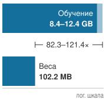
Суммарная память обучения многократно превышает одно лишь хранение весов FP32.
Рассмотрим иллюстративный сценарий обучения ResNet-50 с 25.6M параметрами (~102.2 MB весов FP32), размером батча 64 и изображениями
Следовательно, одно лишь число параметров не говорит инженеру, поместится ли обучение. Полная память обучения подчиняется четырёхкомпонентной формуле (
Фреймворки предоставляют три элемента управления на уровне графа для управления этим компромиссом. Активационный чекпоинтинг (activation checkpointing), чей механизм показал Список 9, меняет то, что граф сохраняет. В терминах «железного закона» чекпоинтинг увеличивает количество арифметических операций (
Отсоединение тензоров (tensor detachment), второй элемент управления, задаёт границу градиента: вызов .detach() делает так, что последующие операции рассматривают этот тензор как независимый от его предшествующих вычислений, и градиент через него не течёт. Отсоединение меняет то, что сохраняется с этого момента, а не то, что уже было сохранено. Операции после разреза не записывают ничего, что указывало бы назад через него, поэтому восходящий граф и его сохранённые активации могут быть освобождены, как только на них больше ничего не ссылается; но само отсоединение их не освобождает. Отсоединённый тензор также разделяет хранилище с оригиналом, поэтому запись на месте (in-place) в него меняет и оригинал — именно поэтому колонка опасностей в Таблица 6 советует клонировать перед мутацией на месте.
Предотвратить сохранение с самого начала позволяет третий элемент управления. Внутри области torch.no_grad() autograd не записывает операции и не сохраняет активации. В обучении с переносом знаний (transfer learning), где предобученный экстрактор признаков заморожен, а обучается новая «голова», запуск экстрактора внутри torch.no_grad() означает, что стоимость хранения активаций платит только «голова», а выход экстрактора входит в неё как константа. Последние два элемента управления делят работу: .detach() разрезает градиентный путь в одном тензоре, torch.no_grad() прекращает запись для целой области, и ни один из них не освобождает состояние, на которое что-то ещё ссылается.
Записанный граф определяет, какие обратные ядра должно исполнить устройство (член
↪ Решение о том, когда этих одноузловых рычагов перестаёт хватать и обучение должно масштабироваться за пределы одной машины, развивается в Когда масштабироваться: физический потолок.
Поддержка обучения в смешанной точности
Смешанная точность (Micikevicius и др. 2018 г.) улучшает сразу два члена «железного закона». Tensor Cores — специализированные блоки матричного умножения графических процессоров NVIDIA — выполняют 16-битные матричные умножения быстрее, чем блоки FP32, повышая
API автоматической смешанной точности доставляют оба выигрыша через политику диспетчеризации, а не через изменение кода модели. Внутри области autocast диспетчер перед выбором ядра сверяется с per-операторным списком точности. Вычислительно интенсивные операции, такие как свёртки и линейные проекции, выполняются в FP16 или BF16, тогда как численно чувствительные операции — softmax, редукции и вычисление потерь — выполняются в FP32.
Наряду с autocast второй компонент фреймворка, GradScaler, компенсирует узкий диапазон экспоненты FP16 (5 бит, при котором нормальные значения ограничены снизу величиной autocast со скалером отключённым. Таким образом, фреймворк поставляет механизмы диспетчеризации и масштабирования. Выбор числового формата и способ адаптации масштаба потерь во время обучения — это решения политики, которые развивает Обучение в смешанной точности. Сам механизм масштабирования показан в Масштабирование функции потерь. Список 12 демонстрирует оба компонента фреймворка, работающие вместе в пути FP16.
import torch
from torch.amp import autocast, GradScaler
model = MyModel().cuda()
optimizer = torch.optim.Adam(model.parameters())
scaler = GradScaler("cuda")
for inputs, targets in dataloader:
inputs, targets = inputs.cuda(), targets.cuda()
optimizer.zero_grad()
# Framework automatically selects precision per operation
with autocast(device_type="cuda", dtype=torch.float16):
outputs = model(inputs)
loss = criterion(outputs, targets)
# GradScaler handles gradient scaling for numerical stability
scaler.scale(loss).backward()
scaler.step(optimizer)
scaler.update()Точность операций и хранение весов — независимые решения. Под autocast параметры остаются в FP32 для обновления оптимизатором и на лету приводятся к 16 битам для подходящих операций; почему обучение сохраняет эту полнофоточную копию — часть политики смешанной точности, которую развивает Обучение в смешанной точности.
Помимо весов FP32, оптимизатор хранит буферы моментов FP32, которые накладываются поверх градиентов и сохранённых активаций. Подсчёт на каждый параметр и разрыв, который он открывает между файлом весов модели и её занимаемым объёмом памяти при обучении, разобраны в Разобранный пример: память обучения и инференса, а Сокращение памяти оптимизатора развивает, как планировать и сокращать память оптимизатора.
Времена жизни тензоров и кэширующий аллокатор
Чекпоинтинг, слияние (Глава 7.4.2) и смешанная точность решают, какие тензоры существуют во время шага обучения и сколько байтов занимает каждый. Среде исполнения всё ещё нужно решить, когда память каждого тензора освобождается и как получается свежая память устройства. Где живут тензоры и как они перемещаются между хостом и устройством — предмет Глава 7.5.2; вопрос здесь уже: когда значение, сохранённое для обратного прохода, может быть освобождено. В схеме сохранённых активаций из Список 8 прямые слои добавляют сохранённые тензоры, которые остаются живыми, пока обратный проход их не израсходует, и современные среды исполнения освобождают каждый из них, как только его обратные потребители и другие ссылки больше в нём не нуждаются.
Само по себе выделение памяти тоже медленно. Вызов выделения и освобождения памяти устройства (cudaMalloc и cudaFree) влечёт значительные накладные расходы драйвера, а cudaFree может блокировать хост до завершения всей ранее поставленной в очередь работы устройства, опустошая очереди команд ускорителя (Paszke и др. 2019 г.). Чтобы устранить эту задержку, современные фреймворки перехватывают выделения с помощью кэширующих аллокаторов, которые поддерживают пулы заранее зарезервированных блоков памяти устройства между итерациями обучения. Субаллокация из этих пулов амортизирует затраты на выделение памяти устройства и избегает синхронизаций, которые эти вызовы могут форсировать, хотя переменные времена жизни тензоров всё ещё могут порождать фрагментацию памяти.
Снимки в Рисунок 9 отличают время жизни тензора от резервации аллокатора. Они предполагают фиксированный пул без дополнительного роста сегментов, компакции или ремаппинга виртуальных адресов, поэтому геометрия свободных блоков определяет, помещается ли запрос.
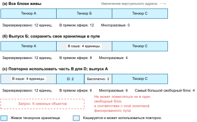
Запрос не выполняется, хотя суммарно свободной памяти достаточно, потому что ни один свободный блок не достаточно велик, чтобы его вместить.
Системный взгляд 7.1: Кэширующий аллокатор и утилизация
Кэширующие аллокаторы уменьшают накладные расходы на выделение и улучшают повторное использование блоков, но не могут исключить показанный выше отказ. Поэтому ошибка нехватки памяти (out-of-memory) может отражать живые выделения, зарезервированные аллокатором блоки, фрагментацию или другой процесс, и различить их требует собственная статистика памяти аллокатора.
7.4.4 Дифференцирование на ленте и на основе преобразований
Фреймворки записывают вычисления для дифференцирования одним из двух способов. Система на ленте (tape-based) записывает каждую операцию по мере выполнения прямого прохода, тогда как система на основе преобразований (transform-based) превращает захваченную функцию в её производную до того, как что-либо исполнено. Этот выбор проявляется в учёте на каждый шаг и планировании памяти. Фреймворк, строящий динамический трассировщик во время исполнения, платит за учёт каждой операции при каждом прямом проходе, и его кэширующий аллокатор должен учитывать паттерны выделения, которые могут меняться при исполнении. Фреймворк, напротив, захватывающий стабильное вычисление, может заранее планировать буферы и переиспользовать хранилище между графами прямого и обратного проходов, поскольку способен рассуждать о временах жизни до исполнения. Выигрыш зависит от охвата захвата, времён жизни тензоров, форм и поддержки бэкендов.
Модели исполнения из Глава 7.3 диктуют эти разработки. PyTorch (Paszke и др. 2019 г.) строит свою ленту во время исполнения прямого прохода, что даёт неограниченный поток управления Python и прямую отладку, но удерживает метаданные ленты и сохранённые тензоры до завершения обратного прохода. Ранний TensorFlow (Abadi и др. 2016 г.) дифференцировал символически во время построения графа, порождая фиксированный обратный граф, пригодный для полного dead-code-устранения и повторного использования памяти до исполнения. TensorFlow 2.x по умолчанию исполняется в жадном режиме (eager) и компилирует графы дифференцирования через tf.function, когда требуется пропускная способность (TensorFlow Developers 2024 г.). JAX20 (Frostig и др. 2018 г.) рассматривает дифференцирование как преобразование, превращающее одну функцию в её производную, что сочетается с векторизацией (jax.vmap()) и компиляцией (jax.jit()) ценой требования чистых функций.
Эти различия в реализации определяют, сколько отладочной видимости, оптимизации компилятором и переносимости развёртывания команда может ожидать от каждого фреймворка. Каждый дизайн также разрешает напряжение, общее для всех них. Правилам обратного прохода нужна информация прямого прохода, тогда как память устройства ограничивает, сколько её можно удержать, поэтому каждый фреймворк должен выбрать, какие активации сохранять, какие операции сливать и сколько пересчёта принять. Эти решения определяют, какие модели могут обучаться на данном ускорителе.
Контрольная точка 7.2: Системная стоимость градиентов
Обучение по своей природе дороже инференса из-за автоматического дифференцирования.
Вычислительная реальность
Механика оптимизации
Проблемы исполнения и дифференцирования вместе определяют логический цикл обучения: модель исполнения определяет, когда операции выполняются, а автоматическое дифференцирование строит обратный проход, вычисляющий градиенты параметров. Оба уровня, однако, останавливаются на границе, где значения должны занять физическую память, а операции должны отобразиться на аппаратно-специфичные ядра на очень разных машинах. Пересечение этой границы — третья проблема фреймворков.
7.5 Абстракция: тензоры, устройства и операции
Модель, обученная на графических процессорах дата-центров — таких как NVIDIA H100 с десятками гигабайт высокоскоростной памяти, — часто приходится развёртывать на ARM-процессоре мобильного телефона, нейронном движке Apple, TPU от Google или ARM-микроконтроллере с 256 КБ SRAM, где один и тот же вызов torch.matmul должен dispatch’иться в cuBLAS на одном устройстве и в вручную оптимизированное ARM NEON-ядро на другом. Проблема абстракции требует, чтобы фреймворки скрывали это разнообразие аппаратного обеспечения за унифицированным программным интерфейсом, не жертвуя специализированными наборами инструкций, раскладками памяти и вычислительными конвейерами каждой целевой платформы. GPU предоставляют обильный ориентированный на пропускную способность параллелизм, но имеют иные семантики памяти и исполнения, чем CPU. TPU отдают предпочтение регулярным тензорным программам и формам, видимым компилятору. У микроконтроллера есть килобайты там, где у сервера — гигабайты. Следовательно, фреймворки должны балансировать между единой эргономикой для разработчика и целевой настройкой производительности.
Задача распадается на два взаимодействующих измерения. Первое — представление данных: как фреймворки кодируют тензоры, параметры и вычислительное состояние в формах, работающих на разном оборудовании. Второе — отображение исполнения: как высокоуровневые операции переводятся в аппаратно-специфичные реализации. Эти измерения не независимы. То, как представлены данные (раскладка памяти, точность, размещение на устройствах), напрямую определяет то, какие стратегии исполнения возможны. Тензор, хранящийся в построчном (row-major) формате на GPU, требует иных ядер, чем тензор в постолбцовом (column-major) формате на CPU. Модель, квантизованная в INT8, открывает совершенно иные пути исполнения, чем FP32.
Решение проблемы абстракции требует тензорных представлений, кодирующих и математическую семантику, и аппаратные ограничения; промежуточных представлений, позволяющих аппаратно-специфичную компиляцию; и сред исполнения, управляющих перемещением данных по иерархии памяти. Когда программист пишет model(input), фреймворк должен разрешить четыре решения в быстрой последовательности — в том порядке, в каком их развивает этот раздел: представление данных (форма тензора, раскладка памяти, числовая точность), размещение и перемещение устройств (иерархия пропускной способности, соединяющая память хоста, память ускорителя и другие ускорители), доставка входных данных (конвейеры данных, которые не дают ускорителю простаивать) и исполнение ядер (dispatch, планирование и управление ресурсами). Организация тысяч тензоров обратно в одну модель рассматривается в Глава 7.6.
7.5.1 Тензоры
В рабочей нагрузке ResNet-50 из Глава 7.4.3.2 один проход вперёд затрагивает 25.6M параметров, создаёт промежуточные активации на каждом слое и согласовывает память между адресными пространствами CPU и GPU. Вычислительные графы задают логический поток этих операций, тогда как структуры данных определяют, как они обращаются к данным и манипулируют ими в физической памяти. Эта физическая раскладка может изменить пропускную способность на порядок — в зависимости от того, лежат ли буферы непрерывно в кэше, закреплены в памяти хоста для прямого доступа к памяти (DMA) (Глава 7.5.2.1) или разбросаны по страницам.
Что несёт тензор
Ядро не может запуститься, пока не знает форму, тип элементов, раскладку и устройство получаемых данных, а эти данные варьируются от одномерных последовательностей до 5D-видео. Поэтому каждый фреймворк описывает данные одним унифицированным дескриптором — тензором. Тензор — это n-мерный массив, соединяющий сырой указатель на данные с небольшим метаданными-заголовком, отслеживающим форму, шаг (stride), тип элементов, целевое устройство и состояние дифференцирования, что позволяет операторам dispatch’ить нужное ядро без копирования лежащего в основе буфера.
Каждое вычисление в нейронной сети работает с этой единственной структурой,21 которая формализует границу между математической семантикой массивов и аппаратным хранением.
Определение 7.2: Тензор
Тензоры — это
- Значимость: Непрерывный FP32-тензор формы
занимает = 4,194,304 байт (около 4.2 MB). Ненепрерывное представление (view) может быть принято напрямую стридовым ядром или потребовать материализации, когда операция требует поддерживаемой непрерывной раскладки. - Отличие: Массивы NumPy также несут метаданные формы, dtype и шага. Тензоры фреймворков дополнительно интегрируют размещение на устройствах, автоматическое дифференцирование и dispatch на ускорители.
- Типичная ошибка: Тензорные операции могут вернуть новую аллокацию, представление (view), разделяющее существующее хранилище, или обновление на месте — в зависимости от операции и варианта API. Учёт памяти должен различать эти случаи.
Поскольку веса, градиенты, моменты оптимизатора и сохранённые активации — всё это тензоры, они используют один и тот же аллокатор устройств и различаются лишь формой, dtype, устройством и временем жизни. Эта униформа позволяет одному кэширующему аллокатору и одному механизму размещения обслуживать все роли. Именно поэтому число параметров занижает оценку памяти: каждый весовой тензор приносит с собой несколько сопутствующих тензоров, как показал учёт обучения против инференса в Разобранный пример: память обучения и инференса.
Ранг, раскладка и тип данных
Физическая память компьютера — это одномерный массив линейных байтовых адресов, тогда как входы модели — двумерные матрицы, трёхмерные RGB-изображения или четырёхмерные батчи изображений. Тензоры bridging’уют это несоответствие, соединяя линейное хранилище с координатными осями, число которых равно рангу тензора. Рисунок 10 прослеживает это расширение ранга слева направо: от скалярной ячейки ранга 0 и столбцового вектора ранга 1 (
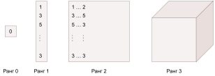
В приложениях компьютерного зрения сырые пиксельные массивы напрямую отображаются на многомерные тензорные раскладки. Для пиксельного патча
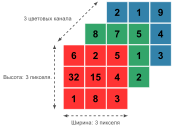
При масштабировании патча изображения [64, 3, 224, 224] для 64 RGB-изображений), dtype (литералы фреймворков, такие как float32, float16 или int8) и тег устройства (cpu или cuda:0). В момент dispatch операция, такая как матричное умножение, проверяет совместимость формы и устройства по этому заголовку и использует dtype для маршрутизации к соответствующему аппаратному ядру — будь то стандартный FP32 GEMM или путь Tensor Core FP16.
Раскладка памяти определяет, как оси тензора отображаются на линейную память. Шаблоны шагов (stride patterns) задают это отображение между многомерными тензорными индексами и линейными адресами памяти. Поэтому шаги фиксируют шаблон доступа к памяти каждой тензорной операции и, вместе с ним, значительную часть производительности операции. Рисунок 12 противопоставляет два способа отображения логической матрицы
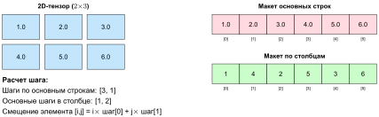
Выбор шагов становится выбором производительности. Построчная раскладка (используемая NumPy, PyTorch) хранит элементы строка за строкой, делая построчные операции более дружественными к кэшу. Постолбцовая раскладка (используемая некоторыми библиотеками BLAS) хранит элементы столбец за столбцом, оптимизируя постолбцовые шаблоны доступа. Значения шагов кодируют эту информацию о раскладке: в построчной раскладке тензора
Эти детали раскладки памяти имеют прямые последствия для производительности, но ни один порядок не является универсально лучшим. Эффективный доступ зависит от того, какое измерение обходит операция, какие раскладки поддерживает ядро, от векторизации и целевой иерархии памяти. Несовпадающая раскладка может потребовать стридового доступа или конвертации, тогда как ядро, спроектированное под эту раскладку, обращается к ней эффективно.
Транспонирование показывает, как возникает такое несоответствие. Метод .transpose() в PyTorch создаёт представление (view), меняя местами метаданные формы и шага при общем лежащем в основе хранилище. На тензоре [3, 1] транспонирование создаёт представление [1, 3], не перемещая ни одного байта. Однако обход этого транспонированного представления по строкам посещает элементы не в последовательном порядке памяти, поэтому последующий reshape, ожидающий единый шаг по всем развёртываемым элементам, не может переиспользовать буфер как представление. Вызов .contiguous() выделяет новый буфер и копирует элементы в последовательном порядке, когда существующие шаги уже не соответствуют запрошенной раскладке.
Dtype — это тензорный рычаг, обменивающий числовой диапазон на перемещение данных. Стандартным выбором в машинном обучении была точность FP32, доступная в фреймворках через dtype-литералы, такие как float32, и предлагающая баланс точности и эффективности. Современные фреймворки расширяют это специализированными числовыми типами: целыми числами для индексации и поиска эмбеддингов, числами с плавающей точкой пониженной точности, такими как FP16, для эффективного по памяти обучения и развёртывания, и узкими целыми числами, такими как INT8, для инференса с высокой пропускной способностью на специализированном оборудовании.
Выбор числового типа влияет и на поведение модели, и на вычислительную эффективность. Обучение нейронных сетей обычно требует точности FP32 для накоплений, чтобы поддерживать стабильные вычисления градиентов. Задачи инференса часто могут использовать пониженную точность (dtype-литералы фреймворков, такие как int8 или даже int4, соответствующие INT8 и INT4), что снижает занимаемый объём памяти и увеличивает скорость обработки. Политика autocast из Глава 7.4.3.3 сочетает эти преимущества на уровне отдельных операций, выполняя большинство вычислений в 16-битной точности, но сохраняя накопления и численно чувствительные операции в FP32. Когда операции смешивают тензоры разных типов, явные правила приведения типов должны сохранять числовую корректность, не скрывая трафик памяти и потерю точности, вносимые каждой конвертацией.
Тензоры решают проблему представления данных, кодируя форму, расположение и точность в единую абстракцию. Однако идеально сформированный тензор на не том устройстве — или тензор, которому нужно пересечь разрыв пропускной способности между PCIe и HBM, чтобы попасть на GPU, — способен свести на нет все оптимизации расположения данных. Следующая проблема — размещение: где хранятся данные и как они перемещаются.
7.5.2 Устройства и память
На H100 хост-канал PCIe Gen5 x16 обеспечивает 64 GB/s между CPU и GPU, тогда как расположенная на кристалле HBM3 даёт 3.35 TB/s внутри самого GPU — этот разрыв пропускной способности в 52.3× означает, что копирование тензора, повторяемое в горячем пути на каждом шаге, способно перечеркнуть ускорение от GPU. Где физически хранятся тензорные данные и как они перемещаются между памятью хоста и ускорителя, определяет, будут ли вычисления идти со скоростью HBM или упрутся в хост-интерконнект.
Фреймворки как интерфейс операционной системы
Если высокоуровневый API сосредоточен на математике, то бэкенд фреймворка играет ту же роль, что операционная система для отдельной машины: он планирует вычисления и перемещает данные, опираясь на примитивы среды исполнения CUDA для запуска ядер и управления памятью устройства.
↩︎ Одноузловой стек, в котором операционная система перемещает данные между памятью хоста и памятью ускорителя, рассматривается в Внутри одной машины: одноузловой стек.
Со стороны перемещения данных фреймворк координируется с этой средой исполнения, реализуя DMA поверх шины PCIe. Разрыв пропускной способности между хостом (CPU) и устройством (GPU) — первое узкое место, с которым сталкивается конвейер загрузки данных, и Пропускная способность против задержки моделирует такую передачу, разделяя два ограничения,
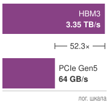
На H100 размещённая на устройстве HBM3 обгоняет хост-канал PCIe в 52.3× раз.
Поскольку операции между устройствами пересекают этот разрыв в 52.3×, фреймворк отслеживает, где находится каждый тензор, и требует, чтобы операции объединяли только тензоры на одном устройстве. Когда данные нужно переместить, фреймворк должен решить, блокировать ли выполнение или перекрывать передачу другой работой. Эти решения, невидимые для большинства пользователей, способны сместить цикл обучения от режима, ограниченного передачами, к заметно более высокой утилизации аппаратуры.
Управлением устройствами и памятью руководят три принципа: уважать иерархию пропускной способности, перекрывать неизбежные передачи вычислениями и синхронизироваться только там, где этого требует корректность. Иерархия пропускной способности — прежде всего, потому что стоимость перемещения данных между устройствами меняется на порядки в зависимости от интерконнекта.22 Для тензора float32 размера
| Интерконнект | Пропускная способность | Время передачи | Путь |
|---|---|---|---|
| PCIe Gen5 x16 | 64 GB/s | 62.5 μs | Хост — устройство |
| NVLink 4.0 | 450 GB/s на направление (900 GB/s двунаправленно) | 8.9 μs | GPU — GPU |
| HBM3 | 3,350 GB/s | 1.2 μs | Внутри устройства |
Эти числа напрямую связаны с железным законом ML-систем. Каждая передача между устройствами добавляет вклад в
Дисциплина размещения на устройствах защищает иерархию пропускной способности от случайного трафика через PCIe. Каждый тензор несёт атрибут устройства, а фреймворки соблюдают строгое инвариантное правило: операции могут объединять только тензоры на одном устройстве — при смешивании тензоров с cuda:0 и cuda:1 возбуждается RuntimeError, так что междудевайсные передачи остаются явными. Вызов .to() на тензоре возвращает исходный тензор, если его тип данных и устройство уже совпадают с запрошенными (если только copy=True не форсирует копию), и в противном случае возвращает преобразованную копию.
Дисциплина производительности, вытекающая из этого разрыва пропускной способности: распределять тензоры сразу на целевом устройстве, а не на хосте; переиспользовать память GPU между итерациями, а не выделять её заново; держать входы, метки и параметры модели на одном устройстве, чтобы не возникало неявных передач. При 64 GB/s нарушение любого из этих принципов вставляет передачи через PCIe в критический путь итерации обучения, которая иначе идёт на 3.35 TB/s внутри устройства.
Когда передач избежать нельзя, следующая оптимизация — скрыть их задержку, выполняя их одновременно с вычислениями. GPU содержат отдельные аппаратные блоки для вычислений (стриминговые мультипроцессоры) и для передачи данных (копирующие движки), и фреймворк открывает к ним доступ через CUDA-поток — очередь исполнения, операции которой идут по порядку внутри потока, но параллельно с другими потоками. Когда копирование и вычисления разделяют один поток, они исполняются последовательно. Помещая передачу следующего батча в один поток, пока текущий батч считает другой, можно приблизить интервал между батчами в установившемся режиме к
Перекрытие оплачивает более длинную стадию, а не сумму.
Флаг non_blocking=True запрашивает копирование, асинхронное по отношению к хосту, но для настоящего перекрытия нужна ещё и закреплённая память. Поскольку копии из страничной памяти проходят синхронную промежуточную стадию через закреплённый буфер, они блокируют хост; тензоры же, размещённые в закреплённой памяти хоста, минуют эту стадию, и их передачи могут перекрываться с вычислениями ускорителя. В Список 13 два потока независимы; полный конвейер должен ещё и передавать каждый переданный батч его потребителю только после завершения копирования, используя описываемые далее механизмы синхронизации.
compute_stream = torch.cuda.Stream()
transfer_stream = torch.cuda.Stream()
# Transfer next batch while computing
# current batch
with torch.cuda.stream(transfer_stream):
next_batch = next_batch_cpu.to("cuda", non_blocking=True)
with torch.cuda.stream(compute_stream):
output = model(current_batch)
loss = criterion(output, labels)
# Pinned host memory can enable transfer overlap
x_pinned = torch.randn(1000, 1000).pin_memory()
x_gpu = x_pinned.to("cuda", non_blocking=True) # Asynchronous
# A pageable source may require staging and
# should not be assumed to overlap
y_regular = torch.randn(1000, 1000)
y_gpu = y_regular.to("cuda", non_blocking=True)Параллельное исполнение вводит ограничения порядка: когда выход одного потока становится входом другого, система должна заставить потребителя ждать производителя, не сериализуя независимую работу. Существуют два механизма синхронизации, и их последствия для производительности резко различаются. Полная синхронизация устройства (torch.cuda.synchronize()) блокирует все потоки и CPU до завершения всех поставленных в очередь операций, создавая точку глобальной сериализации, которая устраняет перекрытие. CUDA-события предлагают альтернативу: мелкозернистую синхронизацию, блокирующую только зависимый поток, позволяя остальным потокам и CPU продолжать исполнение (см. Список 14).
# Create streams and event
stream1 = torch.cuda.Stream()
stream2 = torch.cuda.Stream()
event = torch.cuda.Event()
# Stream 1: producer
with torch.cuda.stream(stream1):
result1 = expensive_computation(data1)
event.record() # Mark completion point
# Stream 2: consumer (waits only for stream1's event)
with torch.cuda.stream(stream2):
event.wait() # Block stream2 until event is recorded
result2 = dependent_computation(result1) # Safe to use result1Полная синхронизация после каждой операции превращает параллельный конвейер в последовательный, обесценивая аппаратный параллелизм, который открывают потоки; синхронизация на основе событий навязывает только те зависимости, которых требует корректность. Из этого различия вытекает типичная операционная ловушка: отладочный код, оставленный с torch.cuda.synchronize() в горячем пути, превращает перекрытый конвейер в последовательный. Профилировщик временной шкалы покажет возникшие промежутки между ядрами, тогда как профилировщики ядер и аппаратные счётчики, объясняющие, почему отдельное ядро работает хуже, относятся к методологии профилирования из Выявление узких мест.
Размещение на нескольких ускорителях
Тот же механизм размещения распространяется на один-восемь ускорителей одной машины, где фреймворк может распределить один шаг обучения по нескольким устройствам. В простейшей конфигурации каждое устройство хранит копию модели и обрабатывает свой срез батча, а после обратного прохода копии объединяют свои градиенты через коллективную операцию под названием AllReduce. Фреймворки именуют участвующие устройства через группу устройств, например ProcessGroup в PyTorch. NVLink даёт 900 GB/s двунаправленной пропускной способности на каждый H100 внутри одного узла (Таблица 7), а устройства, связанные только через PCIe, платят более медленным путём за каждый обмен. Как делить обучение по устройствам и сколько стоят обмены, разбирается в Масштабирование систем обучения; впрочем, на одной машине даже корректно размещённые ускорители простаивают, если конвейер данных хоста не подаёт их достаточно быстро.
↪ Коллективная операция AllReduce и стоимость её коммуникации разбираются в Параллелизм по данным.
7.5.3 Загрузка данных
Потоки и события скрывают передачи за вычислениями, но планирование не поможет, если входные данные изначально поступают слишком медленно. Конвейер данных должен поддерживать скорость потребления ускорителя. Ускоритель, обрабатывающий 1,000 изображений в секунду при разрешении 224 на 224, требует около 150.5 MB/s установившейся пропускной способности по сырым uint8-изображениям. Любой недостаток оставляет ускоритель без работы и снижает член эффективной утилизации в железном законе. Вклад фреймворка в решение этой задачи питания — абстракция, отделяющая то, что такое образец, от того, как образцы попадают на устройство. Dataset определяет доступ к отдельным образцам, а DataLoader (Paszke и др. 2019 г.) превращает это определение в конвейер, построенный из параллельных рабочих процессов, предзагрузки и промежуточной закреплённой памяти.
↩︎ Задача «прокормления», при которой поставка данных должна поспевать за потреблением ускорителя, рассматривается в Проблема питания данных.
Сначала идут рабочие процессы. При num_workers > 0 DataLoader порождает CPU-процессы, которые независимо загружают и подготавливают сэмплы, распределяет индексы сэмплов между ними через общую очередь и собирает готовые сэмплы в батчи в основном процессе. Несколько воркеров перекрывают ожидание ввода-вывода декодированием и аугментацией, когда один процесс слишком медленен, чтобы кормить ускоритель; когда конвейер уже удовлетворяет спрос, лишние воркеры добавляют накладные расходы, а не пропускную способность. Каждый воркер также работает в собственном процессе со своим представлением Dataset, поэтому большее число воркеров может увеличить использование памяти хоста, а изменения в памяти, сделанные одним воркером, не доходят до остальных.
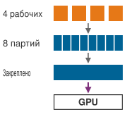
Четыре воркера заполняют восемь предвыбранных батчей, которые через закреплённую память (pinned memory) уходят на GPU.
Предвыборка (prefetching) задаёт глубину конвейера. Параметр prefetch_factor управляет тем, сколько батчей каждый воркер готовит заранее, так что четыре воркера с prefetch_factor=2 держат в полёте до восьми батчей ценой памяти хоста, пропорциональной объёму стоящих в очереди данных. Предвыборка повышает вероятность того, что работа над входными данными перекроется с вычислениями ускорителя, но не может предотвратить простои, когда хранилище, декодирование или конкуренция за ресурсы делают производство медленнее потребления.
Закреплённая память (pinned memory) завершает путь к устройству. Опция pin_memory=True помещает батчи в зафиксированную от подкачки память хоста из Глава 7.5.2, так что их копирования с хоста на устройство минуют промежуточную стадию через страничную память и могут перекрываться с работой устройства. Для батча из 64 FP32-изображений размером
Конфигурация DataLoader из Список 15 полезна только тогда, когда каждый параметр привязан к узкому месту: num_workers задаёт параллелизм загрузки, prefetch_factor — глубину конвейера, а pin_memory включает DMA-передачи.
import random
import numpy as np
import torch
from torch.utils.data import DataLoader
def seed_worker(worker_id):
worker_seed = torch.initial_seed() % 2**32
np.random.seed(worker_seed)
random.seed(worker_seed)
loader = DataLoader(
dataset,
batch_size=64,
shuffle=True,
num_workers=4, # Parallel worker processes (mechanism 1)
prefetch_factor=2, # Batches prepared ahead per worker (mechanism 2)
pin_memory=True, # Page-locked memory for DMA (mechanism 3)
worker_init_fn=seed_worker, # Reproducible augmentation per worker
)
# Pipeline effect: while GPU processes batch N,
# 4 workers load batches N+1..N+8 into pinned memory,
# ready for DMA transfer when the GPU finishes.↪ Подбор числа воркеров и глубины предвыборки по измеренной пропускной способности и памяти рассматривается в Практические соображения.
Интерфейс Dataset также определяет, как можно планировать сэмплы. Датасет в стиле map-style даёт случайный доступ к сэмплам по индексу, поэтому сэмплер может их перемешивать, тогда как датасет в стиле iterable-style выдаёт сэмплы по порядку из потока. Функция collate_fn по умолчанию затем складывает сэмплы одинаковой формы в батч, поэтому для данных переменной длины, таких как текст, нужна собственная сборка (collation) с дополнением (padding) или иной организацией.
Когда входные данные поставляются со скоростью, с которой ускоритель их потребляет, оставшаяся проблема абстракции — это исполнение: перевод каждой операции в работу, выполняющуюся на целевом аппаратном обеспечении.
7.5.4 Базовые операции
Прежде чем y = torch.matmul(x, w) сможет выполниться, фреймворк должен выбрать ядро, соответствующее устройству, типу данных, раскладке stride и размерам тайлов x и w; неподходящий выбор либо падает во время исполнения, либо оставляет Tensor Cores бездействующими, пока универсальный цикл ползёт по памяти. Мост от этого единственного вызова Python к тысячам параллельных потоков ускорителя проходит через три согласованных функциональных уровня, которые следующие подразделы рассматривают снизу вверх. Аппаратные операции (управление вычислительными ядрами, абстракция памяти и управление исполнением) отображают рабочую нагрузку непосредственно на потоки устройства и физический кремний. Базовые числовые операции (GEMM, BLAS и поэлементные ядра) исполняют алгебраические подпрограммы поверх них. Системные операции (планирование, управление памятью и оптимизация ресурсов) организуют исполнение графа поверх обоих уровней. Рисунок 13 изображает те же три уровня в обратном порядке, слева направо от системного уровня вниз к аппаратному.
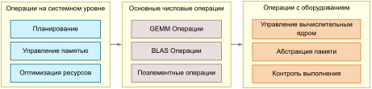
Операции аппаратной абстракции
Слой аппаратной абстракции изолирует код фреймворка от деталей конкретной платформы. Он решает три конкретные задачи: выбор подходящего вычислительного ядра, перемещение данных через иерархию памяти и координацию исполнения между вычислительными блоками.
Менеджер ядер диспетчеризует каждую поддерживаемую операцию в реализацию для текущего бэкенда. Для умножения матриц это может быть CPU-бэкенд BLAS, такой как Intel oneMKL или OpenBLAS (Intel Corporation 2026 г.; OpenBLAS Project 2026 г.), cuBLAS на GPU NVIDIA (NVIDIA 2024 г.) или специфичные для ускорителя тензорные инструкции. Выбор зависит от размерностей, dtype, раскладки, бэкенда и эвристик библиотек. GEMM
Слой абстракции памяти перемещает тензоры между страничной или закреплённой памятью хоста, памятью устройства и унифицированной памятью, а также преобразует раскладки данных в соответствии с предпочтениями аппаратуры. Поскольку физическая память — это одномерный массив байтов из Глава 7.5.1.2, форматы раскладки определяют, как 4D-размерности изображения отображаются в линейные адреса: channels-first NCHW размещает все пространственные пиксели одного канала непрерывно, прежде чем хранить следующий канал, тогда как channels-last NHWC группирует все значения каналов для одной пространственной координаты подряд. Тензорные блоки ускорителей часто предпочитают NHWC, потому что загрузка всех каналов для пикселя совпадает с одной непрерывной транзакцией памяти в 128 байт. Поэтому фреймворк может исполнять ядра в NHWC ради пиковой утилизации аппаратуры, сохраняя NCHW для пользовательских API.
Контроллер исполнения координирует работу между несколькими вычислительными блоками и пространствами памяти. На современном GPU среды исполнения графов или явное использование потоков (streams) могут перекрывать независимые ядра, когда анализ зависимостей доказывает их готовность, а ядра оставляют достаточно неиспользованных ресурсов для параллельной работы. Жадное исполнение в потоке по умолчанию (default stream) вместо этого часто сериализует такую работу. Среда исполнения графов или поток по умолчанию сохраняют порядок зависимостей, когда несколько исполнительных блоков обращаются к одному тензору, предотвращая гонки при параллельных операциях, тогда как явные потоки оставляют этот порядок программе через события или ожидания потоков. Контроллер вставляет барьеры синхронизации там, где того требуют зависимости данных, отслеживает завершение событий для запуска зависимых операций и направляет аппаратные ошибки в путь обработки ошибок фреймворка.
Базовые числовые операции
Когда аппаратная абстракция управляет деталями платформы, фреймворки строят поверх неё слой математических операций. GEMM доминирует в вычислениях машинного обучения. Операция
↪ Разбиение на тайлы на ускорителе, где хранилище на кристалле и вычислительный массив фиксируют размер тайла, а размерность на один элемент за границей тайла может вдвое снизить утилизацию, рассматривается в Тайлирование.
Помимо GEMM, фреймворки реализуют операции BLAS (AXPY для сложения векторов, GEMV для матрично-векторных произведений) и поэлементные операции (функции активации, нормализация). Поэлементные операции дёшевы по отдельности, но дороги в совокупности, поскольку каждая из них читает и записывает свой полный тензор; они являются целями слияния из Глава 7.3.2.
Каждое из этих семейств числовых операций требует отдельных реализаций ядер для каждого поддерживаемого формата точности. Хранение весов и активаций в FP32 использует 4 bytes на значение, тогда как квантизация до INT8 сокращает это до 1 byte, снижая трафик памяти в 4× и давая прирост пропускной способности в 2–4
Системные операции
Аппаратная абстракция и числовые операции предоставляют строительные блоки; системные операции оркестрируют их. Планировщик упорядочивает операции по зависимостям графа и перекрывает независимую работу через потоки и события из Глава 7.5.2. Менеджер памяти повторно использует освобождённые блоки через кэширующий аллокатор из Глава 7.4.3.4 и, когда модель превышает память устройства, исполняет политику контрольных точек активаций из Глава 7.4.2. Оптимизатор ресурсов связывает эти решения с описанным выше выбором ядер. Его отказы — это те, что предсказывают упомянутые механизмы: плохой план оставляет ресурсы бездействующими, а фрагментация или избыточное живое состояние могут вызвать ошибку нехватки памяти даже тогда, когда суммарная ёмкость устройства кажется достаточной.
Контрольная точка 7.3: Аппаратная абстракция
Проблема абстракции — это мост между переносимым кодом и эффективным исполнением.
Тензоры, потоки и диспетчеризация ядер завершают спуск к аппаратуре, но они работают на уровне отдельных буферов и операций. Разработке моделей нужно обратное направление: объединение тысяч низкоуровневых операций вместе с параметрами, которые отслеживает автоматическое дифференцирование, в повторно используемые, вкладываемые друг в друга строительные блоки, называемые модулями.
7.6 Модули: от операций к моделям
Согласование тех же 25.6M параметров ResNet-50 на пятидесяти слоях требует регистрации весов у оптимизаторов, перемещения буферов между устройствами, переключения режимов обучения и оценки и сериализации контрольных точек — сохранённых копий состояния обучения, с которых можно возобновить выполнение. Управление этим состоянием тензор за тензором утонуло бы в ошибкоопасной бухгалтерии. Фреймворки решают эту задачу с помощью иерархической композиции, упаковывая слои в модули, которые составляются в полные модели.
Каждый крупный фреймворк реализует это через абстракцию модуля, которая упаковывает тензоры параметров, прямое вычисление и хуки жизненного цикла в единый интерфейс. nn.Module в PyTorch23 даёт показательный пример, поскольку его шаблоны проектирования повторяются во всех фреймворках. Keras использует похожие абстракции слоёв (Chollet 2018 г.), Flax в JAX применяет аналогичные модульные структуры, а функциональный API TensorFlow разделяет те же концептуальные параллели. Три устойчивых принципа проектирования повторяются независимо от синтаксиса или парадигмы программирования: автоматическое обнаружение параметров, поведение, зависящее от режима, и иерархическая композиция с сериализацией.
7.6.1 Автоматическое обнаружение параметров
Передача каждого тензора весов и смещений ResNet-50 оптимизатору вручную сломалась бы при добавлении или переименовании слоя. Фреймворки устраняют эту ручную связку благодаря автоматическому обнаружению параметров: система обходит дерево модулей, собирая каждый тензор параметров, чтобы оптимизатор мог обновить их одним вызовом.
По своей сути это задача обхода дерева. Module.__setattr__ в PyTorch регистрирует назначенный nn.Parameter или дочерний nn.Module во внутренних отображениях модуля. Вызов .parameters() рекурсивно обходит зарегистрированные подмодули и выдаёт зарегистрированные параметры. Другие фреймворки предоставляют аналогичные деревья или коллекции параметров, хотя их механизмы различаются.
Автоматическое обнаружение параметров даёт оптимизатору полный набор параметров или группы параметров, что позволяет использовать группированные или слитые ядра многотензорного обновления, когда это поддерживают фреймворк и бэкенд. Непосредственная выгода — корректность и композиционность: только что подключённые подмодули автоматически участвуют в переносе между устройствами, сериализации и построении оптимизатора без отдельного ручного реестра. В Список 16 присваивание атрибута запускает регистрацию, а .parameters() возвращает все обнаруженные тензоры.
Обнаружение также разделяет параметры и буферы. Зарегистрированные параметры появляются в .parameters() независимо от того, обучаемы они или заморожены; requires_grad отдельно управляет тем, накапливает ли autograd для них градиент. Зарегистрированные буферы перемещаются вместе с модулем и могут появляться в его словаре состояния, но исключены из .parameters() и обычного обнаружения оптимизатором. Типичный пример буфера — бегущие статистики пакетной нормализации. Перенос устройства несёт оба вида состояния, потому что вызов nn.Module.to() перемещает каждый зарегистрированный параметр и буфер на месте и возвращает сам модуль, тогда как .to() тензора возвращает преобразованную копию.
import torch
import torch.nn as nn
class CustomLayer(nn.Module):
def __init__(self, input_size, output_size):
super().__init__()
self.weight = nn.Parameter(
torch.randn(output_size, input_size)
)
self.bias = nn.Parameter(torch.randn(output_size))
self.register_buffer("running_mean", torch.zeros(output_size))
def forward(self, x):
return torch.matmul(x, self.weight.t()) + self.bias
layer = CustomLayer(10, 20)
# Framework discovers both parameters automatically:
for name, param in layer.named_parameters():
print(f"{name}: shape {param.shape}")Остальные крупные фреймворки проводят ту же границу между обучаемыми параметрами и необучаемым состоянием через другие средства доступа (Таблица 8). Независимо от синтаксиса каждый API разделяет тензоры, которые должен обновлять оптимизатор, и постоянные буферы, которые лишь «едут» вместе с контрольными точками и переносами между устройствами.
| Фреймворк | Доступ к параметрам | Необучаемое состояние |
|---|---|---|
| PyTorch | model.parameters() |
register_buffer() |
| Keras | layer.trainable_weights |
layer.non_trainable_weights |
| JAX/Flax | variables["params"] after variables = model.init(key, x) |
Separate variable collections (for example, batch_stats) |
| TensorFlow | module.trainable_variables |
module.non_trainable_variables |
7.6.2 Поведение, зависящее от режима
То же дерево модулей, которое различает обучаемые параметры и буферы бегущих статистик, управляет и слоями, чьё прямое вычисление меняется между обучением и инференсом. Во время обучения слои dropout случайно обнуляют элементы с вероятностью
Фреймворки решают это с помощью флага состояния, который распространяется по иерархии модулей. Один вызов .eval() на корневом модуле рекурсивно устанавливает self.training = False у каждого потомка, и каждый слой запрашивает этот флаг, выбирая своё поведение. Это экземпляр более широкого системного принципа: один и тот же граф вычислений должен давать разное поведение исполнения в зависимости от контекста. С компиляторами та же ситуация, когда один и тот же исходный код должен давать отладочные сборки (с проверкой границ и таблицами символов) и релизные сборки (с агрессивной оптимизацией). Шаблон распространения флага обеспечивает корректность, централизуя решение о режиме в корне вместо послойной координации.
Режим оценки и запись градиентов — отдельные элементы управления. Вызов .eval() меняет поведение слоёв, зависящее от режима, но не отключает запись в autograd. Поэтому инференс, не нуждающийся в градиентах, выполняется также внутри области torch.no_grad() из Глава 7.4.3.2.
Замораживание параметров — по-параметровый аналог этой области. Установка requires_grad=False у параметров подмодуля не даёт autograd накапливать градиенты по этим параметрам и убирает их хранилище градиентов, хотя градиенты могут по-прежнему проходить через операции слоя, чтобы достичь обучаемых входов или более ранних параметров. Поскольку и распространение режима, и замораживание поддерева работают с вложенными модулями, они опираются на то, как фреймворк составляет слои в иерархию и сериализует состояние этой иерархии.
7.6.3 Иерархическая композиция и сериализация
Сложные модели составляются из переиспользуемых подмодулей, образуя древовидную структуру. ResNet реализуется не как монолитный блок операций, а как иерархия: корневой модуль содержит последовательность остаточных блоков, каждый блок содержит свёрточные слои и слои нормализации, а каждый слой содержит тензоры параметров. Иерархическая композиция должна поддерживать две операции, показанные в Список 17: рекурсивный сбор параметров для обучения и сериализацию состояния для контрольных точек и развёртывания.
import torch
import torch.nn as nn
class ResidualBlock(nn.Module):
def __init__(self, channels):
super().__init__()
self.conv1 = nn.Conv2d(channels, channels, 3, padding=1)
self.bn1 = nn.BatchNorm2d(channels)
self.conv2 = nn.Conv2d(channels, channels, 3, padding=1)
self.bn2 = nn.BatchNorm2d(channels)
def forward(self, x):
residual = x
x = torch.relu(self.bn1(self.conv1(x)))
x = self.bn2(self.conv2(x))
return torch.relu(x + residual)
class ResNet(nn.Module):
def __init__(self, num_blocks, channels=64):
super().__init__()
self.conv_in = nn.Conv2d(3, channels, 7, padding=3)
self.blocks = nn.ModuleList(
[ResidualBlock(channels) for _ in range(num_blocks)]
)
self.fc = nn.Linear(channels, 10)
def forward(self, x):
x = self.conv_in(x)
for block in self.blocks:
x = block(x)
x = x.mean(dim=[2, 3]) # Global average pooling
return self.fc(x)
model = ResNet(num_blocks=4)
total = sum(p.numel() for p in model.parameters())
print(f"Total parameters: {total}")
# state_dict() flattens the tree: 'blocks.0.conv1.weight', etc.
print(list(model.state_dict().keys())[:4])Иерархическая композиция также даёт фреймворку естественные единицы для размещения. Параметры каждого подмодуля можно загружать независимо, поэтому когда модель слишком велика для одного GPU, фреймворк может назначить разные поддеревья иерархии модулей разным устройствам, а структура дерева служит границами разбиения.
Метод state_dict() создаёт упорядоченное отображение, чьи точечные ключи (например, blocks.0.conv1.weight) кодируют положение в иерархии модулей. Контрольная точка для 7 billion параметров FP16 содержит примерно 14 GB полезной нагрузки весов до метаданных и дополнительного состояния, но способ сериализации этих байтов определяется форматом файла и путём хранения. Для возобновления обучения нужно больше, чем состояние модели: оптимизаторы предоставляют свои буферы моментов и счётчики шагов через собственный state_dict(), и контрольная точка обучения сохраняет оба, чтобы выполнение продолжилось с тем же состоянием оптимизатора. load_state_dict() копирует совпадающие значения параметров и буферов в уже построенный модуль и сообщает о пропущенных или неожиданных ключах в соответствии с настройкой строгости; он не восстанавливает иерархию модулей. Межфреймворковый обмен требует, помимо весов, совместимого представления графа и операторов.
Иерархическая структура также открывает обход на уровне модулей для систематических операций. Методы вроде .named_modules() обходит всё дерево, поддерживая массовые преобразования, например замену всех слоёв BatchNorm на GroupNorm или применение инициализации Xavier к каждому слою Linear. Эти операции обхода опираются на ту же структуру дерева, что и обнаружение параметров, так что одно проектное решение окупается в нескольких несвязанных применениях.
Ни один из этих трёх принципов не специфичен для PyTorch. Слои Keras, модули Flax и функциональные подходы решают те же задачи управления параметрами, отслеживания состояния и композиции и различаются тем, как расставляют приоритеты между конкурирующими решениями, а не тем, какие задачи решают. Два практических шаблона показывают, как принципы становятся системными средствами управления: выборочное замораживание параметров сокращает лишнюю градиентную работу при переносимом обучении (Список 18), а хуки модулей дают ненавязчивую инспекцию (Список 19).
requires_grad=False on a pretrained backbone keeps it fixed while a newly attached head trains, and the optimizer receives only the trainable parameters.
import torch
import torch.nn as nn
from torchvision.models import ResNet18_Weights, resnet18
# Freeze all parameters in a pretrained
# model
pretrained_model = resnet18(weights=ResNet18_Weights.DEFAULT)
for param in pretrained_model.parameters():
param.requires_grad = False
# Replace final layer with trainable parameters
pretrained_model.fc = nn.Linear(512, 10) # New layer is trainable
# Only fc.parameters() will receive
# gradients during training
optimizer = torch.optim.Adam(
filter(lambda p: p.requires_grad, pretrained_model.parameters()),
lr=0.001,
)Хуки модулей — инспекционный аналог замораживания параметров. Они перехватывают промежуточные вычисления без изменения кода модели, позволяя диагностировать поток градиентов и отслеживать активации (Список 19).
import torch
import torch.nn as nn
model = nn.Sequential(nn.Linear(10, 20), nn.ReLU(), nn.Linear(20, 5))
# Forward hook to inspect activations
def forward_hook(module, input, output):
print(
f"Layer: {module.__class__.__name__}, "
f"Output shape: {output.shape}, "
f"mean={output.mean():.3f}, "
f"std={output.std():.3f}"
)
# Backward hook to inspect gradients
def backward_hook(module, grad_input, grad_output):
print(f"Gradient norm: {grad_output[0].norm():.3f}")
# Register hooks on specific layer
handle_fwd = model[0].register_forward_hook(forward_hook)
handle_bwd = model[0].register_full_backward_hook(backward_hook)
# Execute forward and backward pass
x = torch.randn(32, 10)
y = model(x)
loss = y.sum()
loss.backward()
# Remove hooks when done
handle_fwd.remove()
handle_bwd.remove()Обнаружение параметров, замораживание и хуки — вот как абстракция модуля превращает тысячи тензоров, каждый со своей формой, типом данных, устройством и временем жизни, в один объект, который может обновить оптимизатор, сохранить сериализатор и исследовать профилировщик. Рассмотрев по отдельности исполнение, дифференцирование и абстракцию, остаётся последний шаг — увидеть их совместную работу: один шаг обучения задействует сразу каждый механизм этой главы.
7.7 Анатомия шага обучения
В каждой итерации цикла обучения миллионы операций с плавающей запятой, динамических выделений памяти и запусков аппаратных ядер должны выполниться в пределах одного шага, длительность которого составляет от микросекунд до секунд. Исполнение, дифференцирование и аппаратная абстракция действуют одновременно во время обучения модели. Даже минимальный двухслойный многослойный перцептрон, записанный восемью исполняемыми операторами в Список 20, задействует все три уровня. Для столь малой сети на диспетчеризацию с хоста уходит большая часть шага. Прослеживание каждого оператора через стек среды исполнения связывает количественные принципы, развитые в Глава 7.3.7, с физическим исполнением.
Сеть представляет собой двухслойную версию классификатора цифр MNIST из Нейронные вычисления, с 784 входами, 128 скрытыми нейронами и 10 выходами, обучаемая на батче размера 32. Пример предполагает наличие обучаемых CUDA-тензоров W1 и W2 с формами (784, 128) и (128, 10), соответствующих векторов смещения b1 и b2, а также уже построенного над этими параметрами оптимизатора. В листинге показана одна итерация после этой подготовки.
# Single training step for a 2-layer MLP
x = torch.randn(32, 784, device="cuda") # Input batch
y = torch.randint(0, 10, (32,), device="cuda") # Labels
# Forward pass
optimizer.zero_grad()
h = torch.relu(x @ W1 + b1) # Hidden layer
logits = h @ W2 + b2 # Output layer
loss = F.cross_entropy(logits, y)
# Backward pass
loss.backward()
# Parameter update
optimizer.step()7.7.1 Прямой проход
Во время прямого прохода исполнение h = torch.relu(x @ W1 + b1) запускает следующую последовательность жадного (eager) исполнения:
- Диспетчеризация из Python: интерпретатор Python вызывает
torch.matmul, который проходит через C++-диспетчер PyTorch для выбора CUDA-бэкенда, неся свою долю накладных расходов на диспетчеризацию из Python в расчёте на операцию (около 10 μs в модели этой главы) до передачи работы на устройство. - Выбор ядра: cuBLAS выбирает GEMM-ядро, сконфигурированное для размерностей 32
784 128, — ядро, которое разбивает матричное произведение на блоки, умещающиеся в памяти на кристалле ускорителя. - Запуск ядра: хостовый поток ставит дескриптор запуска в очередь команд GPU, расходуя задержку запуска драйвера, тогда как асинхронное исполнение позволяет хосту продолжать работу, не блокируясь в ожидании завершения.
- Исполнение на GPU: потоковые мультипроцессоры прогоняют
W1из HBM24 через кэш L2 в регистры и FP32-арифметические блоки (Tensor Cores включаются только при включённом формат-е матриц пониженной точности — TF32 или 16-битном типе данных), вычисляют матричное произведение и записывают выходные активации обратно в HBM. - Запись в autograd: параллельно на хосте движок autograd PyTorch создаёт узел
MmBackwardна динамической ленте, сохраняя ссылки на тензоры устройства, необходимые для запрошенных градиентов. Здесь для градиента веса требуетсяx; градиент по входу не запрашивается.
Последующие сложение смещения (+ b1) и функция активации (torch.relu) проходят тот же жадный путь: каждая операция диспетчеризует отдельное ядро, выполняет обмены с HBM и добавляет узел на ленту. К моменту, когда прямой проход доходит до функции потерь, граф autograd содержит полную цепочку обратных функций и сохранённых указателей на активации, готовых к обратному обходу.
7.7.2 Обратный проход
Вызов loss.backward() исполняет обратное автоматическое дифференцирование в четыре этапа:
- Обход ленты: движок autograd обходит записанный вычислительный граф в обратном топологическом порядке, начиная со скалярного узла потерь.
- Вычисление градиентов: движок исполняет обратное ядро, зарегистрированное для каждого узла. При обратном обходе узел
CrossEntropyBackwardвычисляет, используя комбинированную производную softmax-кросс-энтропии. Узел MmBackwardдлявычисляет и , где — батч скрытых активаций ( h). УзелReluBackwardвычисляет маску активации, обнуляя градиенты там, где прямые активации удовлетворяют. Узел MmBackwardдлявычисляет , где — предактивация. Поскольку входной батч ( x) не устанавливаетrequires_grad=True, обход завершается, не вычисляя. - Запись градиентов: вычисленные градиенты параметров добавляются на месте в поля
.gradтензор-листьев (, , , ). - Освобождение сохранённого состояния: по мере завершения каждого обратного узла фреймворк освобождает сохранённые ссылки на тензоры, которые больше не нужны. Память становится пригодной для повторного использования только когда никакая другая живая ссылка её не удерживает; в этом листинге переменные Python, такие как
h, могут удерживать тензоры живыми после обратного прохода. Кэширующий аллокатор может переиспользовать освобождённые области для последующих операций, не возвращая их устройству немедленно.
После того как обратный проход заполнил буферы .grad параметров, optimizer.step() считывает эти градиенты, обновляет параметры и продвигает состояние оптимизатора. Обратный проход сам по себе вычисляет градиенты, не применяя обновление, а состояние оптимизатора, которое читает обновление, — часть памяти обучения, а не обратного прохода.
7.7.3 Трафик памяти
Зная, какие прямые и обратные ядра выполняются, можно подсчитать арифметическую работу и трафик памяти шага, чтобы определить, чем он ограничен: вычислениями, пропускной способностью HBM или диспетчеризацией на хосте. Чтобы изолировать основные прямые и обратные операторы из Глава 7.7.1 и Глава 7.7.2, подсчёт исключает генерацию входа, сложения смещений и редукции, обновления оптимизатора и учёт аллокатора. В этих границах каждое матричное умножение читает два операнда и записывает один результат, а ядра потерь и активаций следуют упрощённым эквивалентным моделям операций, описанным далее.
Модель трафика предполагает значения FP32, занимающие 4 bytes каждое. Для x @ W1 учитывается одно чтение входной матрицы с формой (32, 784), одно чтение матрицы весов с формой (784, 128) и одна запись результата с формой (32, 128). Перемножив размерности каждой формы, просуммировав три счётчика элементов и умножив на ширину элемента, получаем 0.52 MB из таблицы. Второе матричное умножение использует то же правило операндов со своими формами.
ReLU вместо этого читает и записывает каждый элемент своего тензора (32, 128) один раз, поэтому её смоделированный трафик равен удвоенному числу элементов этого тензора, умноженному на 4 bytes, что даёт 32.8 KB. Эти счётчики описывают смоделированную границу «оператор — буферы». Они предполагают полное переиспользование операндов внутри каждого матричного умножения и исключают дополнительные копирования раскладок, рабочие области и повторные загрузки тайлов; кэшированные операнды также могут сократить фактические чтения из HBM. Сохранение ссылки для обратного прохода само по себе не копирует тензор. Физическое преобразование раскладки, когда оно требуется, добавляет свой трафик чтения и записи к этим счётчикам.
Продукты обратного прохода подчиняются тому же правилу «чтение/чтение/запись». Градиент весов h.T @ dlogits перемножает (128, 32) на (32, 10); градиент скрытого слоя dlogits @ W2.T — (32, 10) на (10, 128); а x.T @ dz1 — (784, 32) на (32, 128). Первые два требуют столько же арифметики, сколько второй GEMM прямого прохода, а третий соответствует первому GEMM прямого прохода. Произведение (32, 128) на (128, 784) не требуется, поскольку исходный вход не нуждается в градиенте. Итого объём плотных матричных вычислений составляет 2.013× от плотной работы прямого прохода. Здесь применяется исключение для градиентов по входу, выведенное в Процесс вычисления производных, к этой двухслойной сети.
Прямая модель кросс-энтропии назначает по одной эквивалентной операции на экспоненту, накопление и нормализацию для каждого логита, а также учитывает чтение логитов и запись сохранённых скорингов. Для нелинейной части обратного прохода модель ReLU читает сохранённую активацию и градиент сверху и записывает замаскированный градиент. Упрощённая объединённая модель кросс-энтропии читает сохранённые вероятности и целочисленные метки, затем вычитает целевое значение, масштабирует по среднему по батчу и записывает градиент логитов. Реальные реализации функции потерь могут распределять эти операции по разным ядрам. Полученные оценки, собранные в Таблица 9, делают сравнение арифметической интенсивности воспроизводимым, не подменяя собой измеренный профиль трафика памяти.
| Компонент | Моделируемая работа | Трафик памяти | Арифметическая интенсивность |
|---|---|---|---|
| MatMul (x @ W1) | 0.52 MB | 12.4 FLOP/byte | |
| ReLU | 32.8 KB | 0.125 FLOP/byte | |
| MatMul (h @ W2) | 22.8 KB | 3.6 FLOP/byte | |
| Кросс-энтропия (упрощённая) | ~0.96 KFLOP | 2.6 KB | 0.375 FLOP/byte |
Backward dW2 |
81.9 KFLOP | 22.8 KB | 3.6 FLOP/byte |
Backward dh |
81.9 KFLOP | 22.8 KB | 3.6 FLOP/byte |
Backward dW1 |
6.42 MFLOP | 0.52 MB | 12.4 FLOP/byte |
| Нелинейный backward (упрощённый) | 4.7 KFLOP | 52.0 KB | 0.091 FLOP/byte |
Столбец арифметической интенсивности помогает предсказать режим каждого слоя при сравнении с отношением вычислений к пропускной способности целевой машины. Матричные умножения переиспользуют операнды гораздо активнее, чем поэлементные операции, но их форма всё равно определяет, достигают ли они «крыши» вычислений. Напротив, оценки для ReLU и кросс-энтропии прямого прохода выполняют пренебрежимо мало вычислений на переданный байт (0.125 FLOP/byte и 0.375 FLOP/byte), что делает их чувствительными к пропускной способности памяти и, при малых размерах, к задержке запуска. В несшитом жадном (eager) исполнении каждая поэлементная операция влечёт отдельную отправку ядра и записывает промежуточные тензоры в буферы глобальной памяти между ядрами; фактический трафик HBM зависит от кэширования.
Аналитическая модель даёт ~13.1 MFLOP арифметической работы и ~1.2 MB трафика памяти для операций, включённых в таблицу. Деление этих величин на пиковые показатели оборудования H100 определяет идеализированные нижние границы:
13.1 MFLOP/67 TFLOP/s FP32 ≈ 0.2 μs 1.2 MB/3.35 TB/s ≈ 0.4 μs - В предположении «одно ядро на моделируемый оператор» 4 выбранных операторов прямого прохода и 5 операторов обратного прохода требуют 9 запусков драйвера. Python отправляет каждую из 4 операций прямого прохода по отдельности, тогда как
backward()один раз входит в C++-движок autograd и запускает все 5 ядер обратного прохода, не возвращаясь между ними в интерпретатор Python; итого получается 5 входов в Python. Иллюстративная стоимость на хосте, следовательно, равна 510 μs плюс 9 5 μs, то есть 95 μs.
Эта модель отправки исключает накладные расходы на обход графа autograd, выделение памяти и операции, не включённые в таблицу, а также шаг оптимизатора, который вовсе не мал. Обновление Adam в FP32 читает каждый параметр, его градиент и два момента, которые Adam хранит для каждого параметра (скользящие средние градиента и его квадрата), и записывает три из них — 28 bytes на параметр, поэтому 101,770 параметров этой сети перемещают около 2.85 MB, что больше всего смоделированного трафика прямого и обратного проходов. Учёт его запусков и пропущенных вызовов Python лишь повышает стоимость на хосте относительно этой нижней границы.
Здесь затраты на хосте суммируются без перекрытия, и для установления фактического числа запусков — особенно для ядер функции потерь — по-прежнему требуется профилирование. Тем не менее в этой модели
Когда доминирует отправка, три механизма атакуют накладные расходы на запуск с разных сторон. Слияние ядер через torch.compile объединяет последовательные операции, ограниченные памятью, в одно ядро, что исключает промежуточные обращения к HBM и схлопывает границы запусков. Масштабирование размера батча линейно наращивает арифметическую нагрузку при постоянных накладных расходах на отправку, распределяя фиксированную задержку запуска на больший объём вычислений. Захват графа устраняет повторяющуюся работу Python в захваченных областях и позволяет воспроизведению CUDA Graph отправлять захваченную последовательность запусков с меньшими накладными расходами на хосте, не требуя превращать весь шаг в одно слитое ядро.
7.7.4 Отправка на оборудование
Анализ таймингов в Глава 7.7.3 следовал размещению device="cuda" в скрипте на H100, но те же восемь строк Python могут быть нацелены на CPU, TPU или Apple Silicon изменением размещения устройства на поддерживаемый бэкенд (Таблица 10). Каждый бэкенд отображает общую семантику тензоров на специфичные для кремния примитивы, поэтому единственный вызов loss.backward() маршрутизируется в разные конвейеры исполнения в зависимости от того, где живут его тензоры. Поскольку различия в порядке суммирования чисел с плавающей точкой, деревьях редукции и недетерминированных атомарных операциях вносят числовые расхождения между бэкендами, эквивалентность должна проверяться по явным числовым допускам, а не на побитовое совпадение.
| Оборудование | Библиотека бэкенда | Механизм исполнения |
|---|---|---|
| CUDA GPU | cuBLAS (NVIDIA 2024 г.; Choquette и др. 2021 г.) | Ядра GEMM и CUDA-потоки для асинхронного исполнения |
| CPU | Intel oneMKL или OpenBLAS (Intel Corporation 2026 г.; OpenBLAS Project 2026 г.) | Параллелизм на уровне потоков вокруг оптимизированных ядер |
| TPU | XLA (Google 2025 г.) | Компиляция в специфичные для TPU операции HLO |
| Apple Silicon | Metal Performance Shaders | Бэкенд MPS |
Решения по реализации — размещение устройства, размер батча, режим компиляции — каскадно проходят через слои исполнения, дифференцирования и абстракции одновременно. Отношение к фреймворку как к непрозрачному математическому интерпретатору, а не планировщику, учитывающему особенности оборудования, скрывает эти взаимодействия, пока они не проявятся в виде простаивающего ускорителя или ошибки нехватки памяти.
Системный взгляд 7.2: Три проблемы в действии
В терминах Д·А·М (Design·Architecture·Machine) один шаг обучения показывает, как фреймворк балансирует алгоритм и машину:
- Исполнение: жадный (eager) режим сохраняет императивную построчную отладку ценой задержки на запуск и отправку каждого ядра.
- Дифференцирование: автоматическое дифференцирование в обратном режиме удерживает промежуточные активации прямого прохода в HBM, чтобы вычислять точные произведения вектор-якобиан в обратном топологическом порядке.
- Абстракция: унифицированные тензорные API отвязывают код модели от разнородного кремния, отправляя идентичные операции в cuBLAS, oneMKL или скомпилированные XLA программы HLO.
Разрешение трения между этими измерениями требует согласования гранулярности операторов с «крышами» оборудования: слияния операций, устраняющего обращения к памяти, масштабирования батчей для распределения задержки запуска и структурирования тензоров для насыщения конвейеров исполнения ускорителя.
Затраты шага сводятся к нескольким правилам подсчёта, выведенным ранее в главе и собранным в её резюме. Эти правила позволяют оценить шаг обучения или инференса на бумаге до профилирования: подсчитав отправленные операции и сравнив их накладные расходы со временем устройства, подсчитав, сколько проходов по памяти делает несшитая поэлементная цепочка, проверив, будет ли скомпилированный артефакт выполняться достаточно часто, чтобы окупить компиляцию, оценив активации, которые backward должен сохранить, и засекая каждую копию с хоста на устройство.
Применительно к двухслойному MLP правило отправки даёт вынесенный выше вердикт «ограничен накладными расходами». Правило трафика поэлементных операций объясняет, почему слияние ядер смещения и ReLU устраняет лишний проход туда-обратно. Правило сохранённых активаций ограничивает то, что могло бы сэкономить контрольные точки активаций. Каждый из этих видов затрат существует независимо от того, какой фреймворк выполняет шаг; фреймворки различаются тем, какие из них они делают лёгкими для обнаружения и сокращения. TensorFlow, PyTorch и JAX отвечают на три проблемы фреймворка по-разному.
7.8 Основные фреймворки: TensorFlow, PyTorch и JAX
Команда, которая быстро прототипирует, но не может развернуть полученную модель, или надёжно развёртывает модели, но не может отлаживать сбои обучения, столкнулась с проектным компромиссом в дизайне фреймворка, а не с отсутствием нужного вызова API. Каждый крупный фреймворк решает все три базовые проблемы, но выделяет в них свой путь. TensorFlow связывает разработку в eager-режиме с захватом графа и обширной экосистемой развёртывания. PyTorch начинает с исполнения в eager-режиме и добавляет пути захвата, компиляции и экспорта. JAX организует дифференцирование, векторизацию и компиляцию как компонуемые преобразования функций. Это архитектурные акценты, а не взаимоисключающие возможности, и их ценность зависит от рабочей нагрузки и цели развёртывания.
7.8.1 TensorFlow
Архитектура TensorFlow охватывает разработку в eager-режиме и оптимизацию на основе графов на аппаратуре от облачных TPU до микроконтроллеров. TensorFlow 2 по умолчанию исполняется в eager-режиме. Функции, чувствительные к производительности, можно захватывать с помощью tf.function, а форматы развёртывания направляют захваченные вычисления в среды исполнения для серверов, мобильных устройств и браузеров. Этот двойной путь сохраняет возможности производственных графов, унаследованные от TensorFlow 1.x, не требуя, чтобы каждая программа на TensorFlow 2 строила полный граф до запуска.
Внутри захваченной tf.function TensorFlow может применять оптимизации графа, такие как свёртывание констант, слияние ядер (kernel fusion) и планирование размещения данных. Формат сериализации SavedModel — это граница, отделяющая обучение от развёртывания (Рисунок 14). Рабочие процессы обучения слева, включая предобработку tf.data, API моделирования Keras и стратегии распределения по CPU, GPU и TPU, сериализуются в один артефакт SavedModel. Через этот центральный интерфейс определения графов проходят по поддерживаемым путям обслуживания или целевого преобразования в среды исполнения развёртывания справа (TensorFlow Serving, TensorFlow Lite, TensorFlow.js и нативные языковые привязки) без сохранения зависимостей от среды исполнения Python.
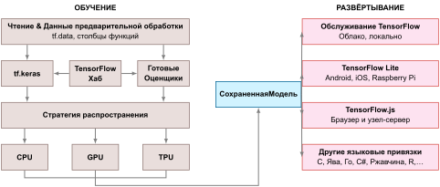
Ответ TensorFlow на проблему исполнения поэтому двусторонний: eager-режим по умолчанию для разработки, а tf.function — путь преобразования в граф для кода, чувствительного к производительности (TensorFlow Developers 2024 г.). Его сильная сторона — скомпилированный путь от захваченного графа ко многим средам исполнения развёртывания.
7.8.2 PyTorch
Если дизайн TensorFlow центрирует путь от захваченного графа к среде исполнения развёртывания, то PyTorch центрирует опыт разработчика. PyTorch с самого начала был построен на динамических графах (define-by-run). Вместо построения графа до исполнения PyTorch строит вычислительный граф по мере выполнения кода, потому что исследователям нужна немедленная обратная связь при экспериментах с новыми архитектурами, а цикл «сначала определи — потом запусти» его замедляет. Циклы Python, условные конструкции и отладчики работают непосредственно внутри прямого прохода модели, без специального синтаксиса и без отдельного шага компиляции, что важнее всего, пока архитектуры и цели обучения ещё меняются.
Ответ PyTorch на проблему дифференцирования — autograd на основе ленты (Глава 7.4.3.1): гибкий и отлаживаемый, но труднее поддающийся глобальной оптимизации, поскольку лента перестраивается на каждой итерации. Его ответ на проблему абстракции скорее прагматичен, чем всеобъемлющ: сильная поддержка GPU через cuBLAS и cuDNN, а также пути развёртывания, включающие torch.export, ориентированный на периферийные устройства ExecuTorch, ONNX и специализированные среды исполнения.
Цена этой гибкости — более фрагментированный путь развёртывания. Поскольку граф динамический, фреймворк не может легко выполнять глобальные оптимизации до исполнения. Модель, безупречно работающая в разработке, может упереться в стену производительности в продакшене, когда накладные расходы диспетчеризации доминируют на малых операциях. Чтобы преодолеть этот разрыв между исследованиями и продакшеном, PyTorch добавил пути захвата графа и компиляции (torch.compile и рабочие процессы экспорта), которые захватывают динамическую модель и превращают её в оптимизированное представление для развёртывания. Эта эволюция показывает, как фреймворк с eager-исполнением может двигаться к продакшен-концу континуума компиляции, сохраняя интерактивный опыт, ради которого и создавался этот дизайн.
7.8.3 JAX
Исполнение в eager-режиме в PyTorch и компиляция графов в TensorFlow — две точки на спектре, но обе разделяют императивное программное наследие, где вычисление идёт как последовательность операций с состоянием. JAX предлагает другой подход, обращённый к пользователю, построенный на принципах функционального программирования и компонуемых преобразованиях программ, а не на лентах уровня объектов или написанных пользователем API графов (Bradbury и др. 2018 г.). Разработанный в Google, JAX особенно полезен для задач, требующих пользовательского дифференцирования, продвинутых исследований оптимизации и крупномасштабного распределённого обучения.
Там, где PyTorch и TensorFlow отслеживают состояние через объекты и предоставляют autograd через динамические ленты или пути захвата графа, JAX предлагает пользователям писать чистые функции на Python и рассматривает дифференцирование, векторизацию и компиляцию как компонуемые преобразования программ (Список 21). Функция jax.grad возвращает новую функцию, вычисляющую градиенты, которую затем можно снова преобразовать, если интерфейсы совместимы: vmap(grad(f)) вычисляет градиенты по отдельным примерам, а jit(vmap(grad(f))) компилирует это батчевое вычисление. Порядок преобразований семантически значим, а не произволен.
grad, затем vmap, затем jit даёт градиенты по отдельным примерам, скомпилированные через XLA.
import jax
import jax.numpy as jnp
def loss_fn(params, x, y):
pred = jnp.dot(x, params["w"]) + params["b"]
return jnp.mean((pred - y) ** 2)
# Transform: compute gradients
grad_fn = jax.grad(loss_fn)
# Transform: vectorize over batch dimension
batched_grad = jax.vmap(grad_fn, in_axes=(None, 0, 0))
# Transform: compile to XLA
fast_batched_grad = jax.jit(batched_grad)
# Compose all three: fast, batched gradient computationЭтот функциональный подход требует чистых функций (без побочных эффектов) и неизменяемых данных (массивы нельзя изменять на месте). Эти ограничения строже, чем модель изменяемых объектов PyTorch, и именно они делают преобразования безопасными. Поскольку выходы функции зависят только от входов, компилятор может переупорядочивать, сливать и распараллеливать операции, не меняя результатов, а одно преобразование можно применить к выходу другого.
Каждое преобразование делает одну работу. jax.grad возвращает функцию градиента; jax.vmap может векторизовать совместимую функцию по отображаемым осям; а jax.jit может трассировать и компилировать стабильную преобразованную функцию для конкретной сигнатуры аргументов. В отличие от итеративного цикла Python, который выполняет отдельные операции последовательно с повторными накладными расходами диспетчеризации, jax.vmap проталкивает размерность батча непосредственно в нижележащие примитивы, позволяя совместимым матрично-векторным операциям по отдельным образцам превращаться в батчевые матрично-матричные умножения (GEMM). Скомпилированная программа может содержать несколько ядер и библиотечных вызовов. Тот же стиль преобразований распространяется и на устройства: jax.shard_map (наследник более старого jax.pmap) отображает функцию на группе ускорителей. Эти преобразования компонуются согласно своим типам и семантике, и разные порядки могут вычислять разные величины.
То же минималистичное ядро делегирует абстракции нейронных сетей сопутствующим библиотекам (Flax и Equinox), а оптимизацию — Optax. Это разделение отражает функциональную философию: ядро предоставляет преобразования, а библиотеки строят привычные абстракции поверх него. Компромисс в том, что готовность к продакшену зависит как от модели преобразований, так и от зрелости окружающих библиотек, путей экспорта и эксплуатационных инструментов для целевой среды.
Функциональные ограничения окупаются там, где само вычисление градиента является предметом изучения. Пользовательское дифференцирование, включая градиенты высших порядков и пользовательские правила векторно-якобиевых (VJP) и якобиево-векторных (JVP) произведений, компонуется чисто, потому что чистые функции делают правила дифференцирования предсказуемыми, что служит исследованиям оптимизации и научным вычислениям с AD. Рабочие нагрузки на ускорителях с интенсивной компиляцией получают рост утилизации от XLA, когда программа соответствует функциональному стилю. Взамен JAX требует больших начальных вложений, чем PyTorch: явное управление состоянием, кривую обучения функциональной парадигмы и скомпилированный код, который труднее отлаживать, чем исполнение в eager-режиме. Он подходит командам, чьи требования совпадают с этими сильными сторонами, а не служит выбором по умолчанию.
7.8.4 Сравнение проектных компромиссов
Сравнивать TensorFlow, PyTorch и JAX вопросом «какой фреймворк быстрее в абстракции» — ставить вопрос неверно, поскольку чистая скорость меняется в зависимости от формы модели, размера батча, аппаратного бэкенда и конфигурации компилятора. Устойчивое различие между тремя дизайнами («сначала граф» против «сначала eager», «состояние» против «функциональность») состоит в том, что каждый из них позволяет системе видеть и оптимизировать. Поэтому Таблица 11 возвращает TensorFlow, PyTorch и JAX к трём проблемам фреймворков: видимость исполнения, модель дифференцирования и путь аппаратной абстракции.
| Аспект | TensorFlow | PyTorch | JAX |
|---|---|---|---|
| Тип графа | Статические корни, динамический фронтенд в 2.x | Динамический | Функциональные преобразования |
| Модель программирования | Императивный фронтенд, путь захвата графа | Императивная | Функциональная |
| Базовая структура данных | Тензор с состоянием под управлением фреймворка | Тензор с состоянием под управлением фреймворка | Неизменяемый массив |
| Режим исполнения | Eager по умолчанию, граф для оптимизации | Eager по умолчанию | Трассировка и компиляция точно в срок |
| Автоматическое дифференцирование | Обратный режим по захваченным вычислениям | Обратный режим по eager-ленте | Прямые и обратные преобразования |
| Аппаратная абстракция | Широкий набор сред исполнения развёртывания и пути XLA | Нативный путь GPU плюс среды экспорта/компиляции | Компиляция ускорителей, центрированная на XLA |
| Риск оптимизации | Захват графа и покрытие операторами | Разрывы графа после eager-разработки | Чистота, стабильность форм и трассировка |
Поэтому сравнение подсказывает инженеру, какое ограничение профилировать первым. В PyTorch первый вопрос — доминирует ли eager-диспетчеризация или разрывы графа. В TensorFlow — покрывает ли захваченный граф операторы и цель развёртывания, а в JAX — позволяют ли формы и чистота, чтобы XLA скомпилировала действительно исполняемую программу. Сравнение на уровне фреймворков или лидерборд могут сориентировать в решении, но не заменят профилирование конкретной рабочей нагрузки на целевом оборудовании.
Та же простая сеть показывает, как каждая философия дизайна формирует код. Список 22 реализует одну нейронную сеть — единственный линейный слой, отображающий десять входов в один выход, — во всех трёх фреймворках.
# PyTorch - Dynamic, Pythonic
import torch.nn as nn
class SimpleNet(nn.Module):
def __init__(self):
super().__init__()
self.fc = nn.Linear(10, 1)
def forward(self, x):
return self.fc(x)
# TensorFlow/Keras - High-level API
import tensorflow as tf
model = tf.keras.Sequential(
[tf.keras.layers.Dense(1, input_shape=(10,))]
)
# JAX - Functional approach
import jax.numpy as jnp
from jax import random
def simple_net(params, x):
return jnp.dot(x, params["w"]) + params["b"]
key = random.PRNGKey(0)
key_w, key_b = random.split(key)
params = {
"w": random.normal(key_w, (10, 1)),
"b": random.normal(key_b, (1,)),
}Эти три реализации решают одну и ту же математическую задачу, но каждая из них показывает, где её фреймворк хранит состояние и когда возникает её граф вычислений. PyTorch связывает состояние и вычисления через наследование классов (nn.Module) и выполняет вычисления жадно (eagerly), строя граф по мере выполнения кода на Python. Поэтому штатные отладчики и управляющие конструкции работают естественным образом — ценой того, что оптимизатор не видит граф целиком, пока не вызван проход захвата графа. TensorFlow и Keras в TensorFlow 2 по умолчанию тоже выполняются жадно, при этом структурные модели могут быть захвачены с помощью tf.function и экспортированы в поддерживаемые среды исполнения для развёртывания, когда покрытие операторов и целевая конвертация это позволяют. Напротив, JAX рассматривает модель как чистую функцию25 над неизменяемыми массивами без внутреннего состояния объектов. Он превращает grad, vmap (автоматическую векторизацию) и jit (JIT-компиляцию26) в компонуемые преобразования функций без состояния — ценой явной передачи параметров.
Ни одна из архитектур не служит всем целям одновременно, а десятистрочная программа делает компромиссы видимыми прямо в исходном коде, а не скрытыми во внутренностях компилятора: где живёт состояние, когда существует граф и что компилятору разрешено видеть. Каждый дизайн обменивает то, что видит компилятор, на скорость итераций разработчика. Захват графа и компиляция с опережением времени исполнения (ahead-of-time) могут снизить накладные расходы во время исполнения и перемещение промежуточных данных. Жадное выполнение сокращает цикл человеческих итераций — вне жёсткого уравнения времени исполнения — ценой видимости для компилятора, пока не использован путь захвата графа. Функциональная чистота даёт XLA больше свободы для преобразования стабильной оттрассированной программы. Каждая философия также формирует синтаксис кода, рабочие процессы команды, практики отладки и конвейеры развёртывания, поэтому затраты на мигацию растут вместе со специфичными для проекта интеграциями и допущениями.
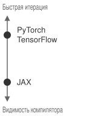
Жадные значения по умолчанию благоприятствуют итерациям; оттрассированные функции JAX — компилятору.
7.9 Выбор фреймворка
Различия в том, где живёт состояние и что видит компилятор, превращаются в конкретные обязательства, как только команда фиксирует один фреймворк для проекта, который должен работать на конкретном устройстве. Выбор фреймворка определяет, в каком фреймворке команда будет разрабатывать, учитывая модель, которую нужно выразить, команду, которая должна её сопровождать, и целевые устройства, на которых модель в итоге должна работать. Фреймворк разработки и среда исполнения для развёртывания не обязаны совпадать: модель можно разработать в PyTorch или TensorFlow и экспортировать в компактную среду исполнения для устройства. Выбор этой среды инференса — это решение об обслуживании моделей, рассматриваемое в Выбор среды исполнения инференса. Фреймворк разработки всё же должен до неё добраться, поэтому целевое устройство развёртывания действует как фильтр на множество жизнеспособных фреймворков.
Предположим, команда развёртывает модель компьютерного зрения фиксированной формы на встроенном Linux-устройстве только с CPU, с целевой задержкой инференса 20 ms p99 (99-й процентиль, Задержка и хвостовая задержка) под заданной нагрузкой и бюджетом памяти 256 MB на модель и среду исполнения. Предположим, что испытания на целевом устройстве с теми же входами, размером батча, точностью и числовыми допусками выявили два жизнеспособных пути. Разработка в PyTorch с ONNX Runtime даёт задержку 18 ms p99 и пиковое потребление памяти 140 MB, а разработка в TensorFlow с TensorFlow Lite — задержку 15 ms p99 и пиковое потребление памяти 90 MB. Путь, зависящий от среды исполнения только для GPU, не проходит аппаратный фильтр, даже если его задержка в других условиях ниже. Это гипотетические измерения проекта, а не общие рейтинги производительности. Выбор теперь должен отличать осуществимый путь от стоящего миграции.
Во встроенном проекте целевое устройство развёртывания уже зафиксировано, но остаются два выбора: какую среду разработки команда способна сопровождать и какой совместимый путь экспорта укладывается в бюджет. Жадная разработка и компилируемое развёртывание могут сосуществовать на любом из путей, поэтому команде не приходится жертвовать своим процессом отладки ради компактной среды инференса.
Системный взгляд 7.3: Ограничения при выборе фреймворка
Вместо поиска «лучшего» фреймворка эффективный выбор сначала исключает кандидатов, которые не могут удовлетворить жёстким ограничениям: целевое устройство развёртывания, требуемые операции и путь компиляции. И только затем мягкие предпочтения — конвейер команды, стоимость миграции, скорость разработки, экосистема и производительность сверх целевой — ранжируют оставшихся.
7.9.1 Критерии выбора фреймворка
Два гипотетических измерения устанавливают осуществимость по задержке и памяти только для испытанной модели и входов. Обоснованный выбор также проверяет семантику операторов, программные зависимости и покрытие аппаратного обеспечения для каждого пути-кандидата: PyTorch, экспортируемый через ONNX в ONNX Runtime, и TensorFlow, конвертируемый в TensorFlow Lite. Таблица 12 показывает, что исследуют эти фильтры, на примере TensorFlow, чьи три варианта покрывают все три уровня развёртывания — от полного TensorFlow через TensorFlow Lite до TensorFlow Lite Micro. Оба кандидата проекта нацелены на средний, мобильно-встроенный уровень, поэтому каждый подраздел ниже применяет свой фильтр непосредственно к двум кандидатам. Делегаты (delegates) из таблицы — это подключаемые модули TensorFlow Lite, передающие поддерживаемые операторы ускорителю, например NPU.
| TensorFlow | TensorFlow Lite | TensorFlow Lite for Microcontrollers | |
|---|---|---|---|
| Обучение | Да | Ограничено | Нет |
| Инференс | Да | Да | Да |
| Покрытие операторов | Широкое | Сфокусировано на инференсе | Подмножество, выбранное моделью |
| Штатные средства пониженной точности | Да | Да | Да |
| Требует ОС | Да | Да | Нет |
| Доступ к модели | Файловая система или сервис | Платформенно-специфичное хранилище с маппингом | Платформенно-специфичное скомпилированное или смаппированное хранилище |
| Поддержка ускорителей | Да | Делегаты | Оптимизированные ядра и интеграции |
| Базовый размер бинарника | Зависит от сборки и пакета | Зависит от сборки и делегатов | Зависит от модели и выбранных операторов |
| Базовый занимаемый объём памяти | Зависит от модели, среды исполнения и аллокатора | Зависит от модели, делегатов и аллокатора | Фиксированная арена плюс состояние среды исполнения |
| Оптимизированные архитектуры | x86, TPUs, GPUs | Arm Cortex-A, x86 | Arm Cortex-M, DSPs, MCUs |
Требования модели
Для модели компьютерного зрения фиксированной формы первый фильтр — успешная конвертация каждой требуемой операции с приемлемыми числовыми результатами. На пути PyTorch каждому оператору экспортируемого графа нужны оператор ONNX и ядро CPU в ONNX Runtime; на пути TensorFlow каждый оператор должен конвертироваться в поддерживаемый TensorFlow Lite. Поддержка обучения нужна во фреймворке разработки, но не в развёртываемой среде исполнения. TensorFlow, TensorFlow Lite и TensorFlow Lite Micro предоставляют разные возможности по операторам и обучению. Отсутствующий оператор инференса, напротив, может сделать путь развёртывания непригодным, даже если остальной граф подходит, — поэтому покрытие операторов является различающей строкой среди возможностей в Таблица 12.
Системный взгляд 7.4: Динамические и статические вычислительные графы
Различие статических и динамических графов (рассмотренное в Глава 7.3) имеет прямые следствия для анализа требований модели. Статические графы требуют, чтобы управляющие конструкции и динамическое поведение были представлены в формах, понятных среде исполнения графа, что позволяет выполнять оптимизацию с опережением времени исполнения для развёртывания. Жадное выполнение следует обычному управляющему потоку Python напрямую, тогда как пути захвата графа, такие как
torch.compile и tf.function, восстанавливают возможности оптимизации, когда могут представить исполненную программу.
Программные зависимости
Встроенный Linux предоставляет сервисы операционной системы, поэтому зависимость от ОС не исключает ни одного из кандидатов в этом проекте. Голое железо (bare-metal) микроконтроллера налагало бы другой фильтр, который описывает столбец TensorFlow Lite for Microcontrollers в Таблица 12. TensorFlow Lite Micro компонует выбранный набор операторов в небольшое приложение на C/C++ и может читать модель FlatBuffer, скомпилированную во flash, что устраняет необходимость в POSIX-файловой системе или выделении памяти из кучи во время инференса — экономия, важная на голом железе, но не дающая Linux-устройству причины выбирать его. Строки платформы в Таблица 12 отделяют это требование от доступа к модели и интеграции с ускорителями; наличие среды исполнения на одном уровне не означает её наличия на другом.
Проекту только с CPU нужна поддерживаемая реализация CPU для каждого требуемого оператора и в ONNX Runtime, и в TensorFlow Lite; он не может рассчитывать на мобильный делегат NPU или серверный бэкенд GPU.
Аппаратные ограничения
Среда исполнения, поддерживающая операционную систему, всё же должна уместиться рядом с моделью, рабочими буферами и приложением. Аппаратные строки в Таблица 12 отделяют поддерживаемые семейства процессоров от занимаемого объёма памяти, который зависит от фактической сборки. Проект должен сравнивать пиковое потребление памяти для развёртываемой конфигурации, а не размер файла весов или пустого пакета среды исполнения.
Предоставленные испытания уже включают пиковое потребление памяти на модель и среду исполнения, так что оба кандидата проходят фильтр ёмкости проекта. Этот вывод нужно пересматривать при изменении входных форм, выбранных операторов, делегатов или версий среды исполнения. На целевой платформе с фиксированной ареной аналогичная проверка — умещаются ли запланированные тензорные и рабочие буферы вместе с остальным приложением.
Факторы оценки готовности к производству
Выполнение требований модели, программных зависимостей и аппаратных ограничений устанавливает техническую осуществимость; производственная жизнеспособность зависит также от того, что поддерживает инструментарий фреймворка разработки. Если развёртывание использует пониженную точность, фреймворк должен поддерживать выбранный путь. Варианты — квантизация после обучения (PTQ), которая конвертирует уже обученную модель с использованием небольшого репрезентативного калибровочного набора данных для задания диапазонов значений, или обучение с учётом квантизации (QAT), которое имитирует арифметику низкой точности во время обучения, чтобы восстановить точность перед развёртыванием. Не менее важна стабильность инструментария: остаются ли сохранённые модели загружаемыми при обновлениях фреймворка и среды исполнения, и предоставляет ли фреймворк хуки профилирования, необходимые для подтверждения того, что развёртываемая модель по-прежнему укладывается в целевую задержку.
↪ Пост-тренировочная квантизация, её калибровка и обучение с учётом квантизации рассматриваются в Методы квантизации.
7.9.2 Поддержка разработки и оценка долгосрочной жизнеспособности
Когда оба пути проходят технические фильтры, оставшееся решение касается способности команды их поддерживать. В проекте уже есть модели PyTorch и конвейер экспорта в ONNX. Внедрение ещё одного стека разработки добавило бы валидацию конвертации, новые практики отладки и ещё один набор зависимостей среды исполнения, даже если оба кандидата укладываются в ограничения развёртывания.
Собственные операторы на C++ или CUDA, специализированная сериализация и пропуски компилятора вендора повышают стоимость последующей миграции. Сохранение пути отхода означает изоляцию привязанного к фреймворку кода загрузки данных и операторов, а также проверку целевого формата экспорта на протяжении всей разработки. Эти обязательства должны учитываться в решении о выборе, поскольку кратчайшее время инференса не отражает работу, необходимую для поддержания модели в развёртываемом состоянии.
Поскольку оба оставшихся пути удовлетворяют заявленным ограничениям среды исполнения, команда выбирает PyTorch с ONNX Runtime — стек, который она уже поддерживает. Измеренный путь удовлетворяет требованиям развёртывания без внедрения второго стека разработки. Более быстрый путь TensorFlow Lite остаётся жизнеспособным, но его неиспользованное преимущество по задержке и памяти само по себе не оправдывает миграцию. Решение зависит от сохранения этого запаса по мере изменения модели. Прежде чем зафиксировать выбор, команда должна проверить покрытие экспорта и числовые допуски на репрезентативных входных данных и повторить проверку задержки при ожидаемой конкуренции за ресурсы; последующее изменение оператора или более жёсткая цель по задержке могут сделать выбор недействительным. Выбор следует ограничениям проекта и затратам на сопровождение; другая команда или другой режим развёртывания могут предпочесть второй жизнеспособный путь.
Рассмотренный выбор определили ограничения, которые не фиксирует ни одна таблица бенчмарков: покрытие экспорта, числовые допуски, существующий конвейер команды и стоимость второго стека. Инженеры, рассуждающие на основе заголовков бенчмарков или привычек универсального программирования, попадают в предсказуемые ловушки.
7.10 Заблуждения и ловушки
Выбор фреймворка связан с тонкими компромиссами, где интуиция из классической программной инженерии подводит. Стена памяти, ограничения слияния ядер и разнообразие целевых платформ развёртывания порождают ловушки, которые растрачивают инженерные усилия и приводят к тому, что производственные системы не укладываются в цели по задержке.
Заблуждение: Все фреймворки обеспечивают одинаковую производительность для одной и той же архитектуры модели.
Инженеры полагают, что модель работает одинаково в любом фреймворке, поскольку математика одна и та же. Это опровергает шаг декодирования GPT-2 XL, с которого началась глава. Тот же шаг тратит около 8.6 ms на хосте, когда энергичный (eager) фреймворк выпускает свои 576 ядер по одному, — против чтения весов около 0.9 ms, когда запуски захвачены и воспроизводятся. В гипотетическом сценарии ResNet-50 из Таблица 4 компиляция повышает пропускную способность на 48.3 percent, а специализированный движок инференса — в 2.6× по сравнению с энергичным режимом. Глубина слияния, захват графа и серверные библиотеки различаются между фреймворками, поэтому организации, предполагающие эквивалентность, рискуют не уложиться в цели по задержке и столкнуться с поздней миграцией между фреймворками.
Ловушка: Выбор фреймворка по популярности, а не по требованиям проекта.
Инженеры полагают, что самый популярный фреймворк подходит для любого проекта. В действительности доминируют ограничения развёртывания. Среда исполнения для мобильных устройств, такая как ExecuTorch или TensorFlow Lite, и среда для микроконтроллеров, такая как TensorFlow Lite Micro, делают разные допущения о выделении памяти, покрытии операторов и аппаратных делегатах. Первая ориентирована на телефоны с памятью порядка гигабайт, тогда как вторая часто ориентируется на устройства с сотнями килобайт ОЗУ — обычно менее 256 KB для небольших развёртываний TinyML. Команды, прототипирующие приложения для периферии без проверки итоговой среды исполнения, рискуют столкнуться с разрастанием памяти сверх ёмкости устройства или с поздней миграцией между фреймворками после завершения разработки. Среда исполнения для развёртывания (Выбор среды исполнения инференса) поэтому входит в число первых проверок, выполняемых до выбора обучающего фреймворка.
Заблуждение: Абстракции фреймворка устраняют необходимость в системных знаниях.
Инженеры полагают, что высокоуровневые API выполняют все оптимизации автоматически. Шаг обучения из Глава 7.7 показывает обратное. Его ReLU имеет арифметическую интенсивность (число FLOPs на перемещённый байт) 0.125 FLOP/byte, примерно в 160× ниже «гребня» FP32 у H100, составляющего около 20 FLOP/байт (арифметическая интенсивность, ниже которой операция ограничена памятью), а весь шаг тратит около 95 μs на диспетчеризацию на хосте против значительно меньше микросекунды идеального времени устройства. Ни один вызов API не раскрывает ни того, ни другого факта. Инженеры должны определить ограничивающий ресурс, прежде чем выбирать оптимизации слияния, батчей, раскладки или точности.
Ловушка: Игнорирование привязки к вендору из-за специфичных для фреймворка форматов.
Инженеры полагают, что миграция между фреймворками проста, поскольку модели — «просто математика». Конвертация TensorFlow SavedModel в PyTorch может потребовать переписывания пользовательских операций, проверки числовой эквивалентности на больших наборах тестов и переобучения, когда операции не имеют точных аналогов. Формат обмена ONNX (Выбор среды исполнения инференса) улучшает переносимость, но пользовательские операторы, динамические формы и оптимизации, специфичные для бэкенда, всё равно могут требовать ручной работы. Организации, игнорирующие это при первоначальном выборе фреймворка, сталкиваются с дорогостоящими миграциями, когда меняются требования к развёртыванию или появляются лучшие фреймворки.
Ловушка: Увеличение размера батча без моделирования памяти активаций.
Инженеры полагают, что если память доступна, бо́льшие батчи всегда повышают пропускную способность. Крупные мини-батчи амортизируют фиксированные накладные расходы на диспетчеризацию, но они же масштабируют память активаций, которая должна оставаться живой, пока её не потребует обратный проход. В иллюстративном сценарии ResNet-50 из Глава 7.4.3.2 батч 64 уже занимает 8 GB–12 GB сохранённых активаций. Батч 256 занимает 32 GB–48 GB, а батч 512 — 64 GB–96 GB, что на H100 с 80 GB заставляет применять контрольные точки активаций. Перевычисление затем добавляет примерно один дополнительный прямой проход за шаг, что может стоить больше пропускной способности, чем дало увеличение батча, а материализованные оценки внимания (attention) обостряют эффект для трансформеров, поскольку они растут квадратично от длины последовательности. Команды, слепо максимизирующие размер батча, могут получить меньшую пропускную способность, чем при меньших батчах, избегающих перевычисления.
↪ То, как память активаций растёт линейно с размером батча и ограничивает батч, помещающийся в память ускорителя, рассматривается в Обработка мини-батчей.
Заблуждение: Накладные расходы на компиляцию пренебрежимо малы.
Инженеры полагают, что накладные расходы на компиляцию — это разовая стоимость, которая быстро окупается. Гипотетические значения в Таблица 4 приписывают ResNet-50 более высокую пропускную способность в скомпилированном режиме и окно компиляции от 15 s до 30 s на каждое изменение графа. При этих допущениях и с учётом значений пропускной способности инференса из таблицы эксперимент на 10,000 изображений с 10 изменениями кода завершается за 6.9 s в энергичном режиме и за 304.7 s в скомпилированном, включая накладные расходы на перекомпиляцию. Скомпилированный процесс поэтому примерно в 44.2× медленнее в этом иллюстративном сценарии быстрого прототипирования; цикл обучения добавил бы обратную работу к каждому проходу, но платил бы ту же стоимость перекомпиляции. Команды, включающие компиляцию во время быстрого прототипирования, могут тратить время на ожидание перекомпиляций, которые сводят на нет выигрыш в пропускной способности.
Ловушка: Использование одной политики исполнения для исследования и производства.
Правильный режим фреймворка зависит от цикла работы. Во время исследования энергичное исполнение и небольшие тесты сокращают обратную связь, избавляя от повторных захватов графа и перекомпиляций. При производственном обслуживании или длительном обучении компиляция может амортизировать подготовку по многим запросам или образцам. Решающие факторы — продолжительность и стабильность рабочей нагрузки: компиляция окупается, когда структура графа и формы повторяются, тогда как изменение управляющего потока или входных форм может сделать кэшированные артефакты недействительными и запустить амортизацию заново. В гипотетическом сценарии ResNet-50 одна компиляция за 30 s окупается только после примерно 134,000 images. Цикл прототипирования, перекомпилирующий каждые несколько минут, никогда не достигает этой точки, тогда как система обслуживания проходит её за считанные минуты устойчивого трафика. Одна политика для обеих фаз либо замедляет исследовательские итерации, либо оставляет производственную пропускную способность неиспользованной.
7.11 Итоги
Фреймворки машинного обучения решают три ключевые системные задачи, которые делают глубокое обучение осуществимым на современном оборудовании. Первая — исполнение: решение о том, когда и как выполняются операции. Фреймворки балансируют между компромиссом энергичного вычисления (eager evaluation) для интерактивной отладки и графовым исполнением для компиляции всей программы, при этом современные гибридные подходы, такие как torch.compile, захватывают графы динамически, не жертвуя управляющим циклом Python. Вторая — дифференцирование: автоматическое вычисление градиентов. Фреймворки реализуют обратное автоматическое дифференцирование (reverse-mode automatic differentiation), применяющее правило цепочки к композициям операций и строящее ленту autograd или обратный граф произведений «вектор–Якобиан», делая необходимые прямые значения доступными за счёт сохранения или повторного вычисления. Этот примитив делает обучение больших моделей осуществимым с помощью одного вызова loss.backward(). Третья — абстракция: работа с гетерогенным оборудованием через единый интерфейс. Фреймворки предоставляют многомерные тензорные абстракции, промежуточные представления и системы диспетчеризации в среде исполнения, связывающие высокоуровневые определения моделей с оптимизированными ядрами (kernel) на устройствах — CPU, GPU, TPU и пользовательских ускорителях.
Эти задачи связаны «железным законом» ML-систем (Железный закон МЛ-систем): стратегия исполнения влияет на задержку (latency) диспетчеризации
Правила подсчёта, выведенные на протяжении главы, умещаются на одной странице (Таблица 13). Вместе они позволяют инженеру ещё до профилирования оценить, чем ограничен шаг: накладными расходами диспетчеризации, трафиком памяти или арифметикой.
| Стоимость | Формула | Где выведена |
|---|---|---|
| Коэффициент накладных расходов диспетчеризации | Уравнение 4 | |
| Трафик цепочки поэлементных операций | Глава 7.3.2 | |
| Точка окупаемости компиляции | Уравнение 3 | |
| Сэкономленные байты активаций | Глава 7.4.2 | |
| Время передачи «хост–устройство» | Глава 7.5.2 |
Основные выводы: Слой между математикой и оборудованием
- Каждый фреймворк решает три задачи: исполнение определяет диспетчеризацию в среде исполнения, дифференцирование вычисляет градиенты, а абстракция нацелена на гетерогенное оборудование. TensorFlow, PyTorch и JAX дают разные ответы на каждой из этих осей — от захвата графа до энергичных лент и функциональных преобразований, — и эти ответы надолго определяют, что команда сможет отлаживать, компилировать и развёртывать, задолго до того, как изменится синтаксис API.
- Стена памяти определяет оптимизацию: вычислительная мощность ускорителей опередила пропускную способность памяти, из-за чего перенос данных за пределы чипа стал постоянно повторяющимся узким местом. Слияние ядер и форматы меньшей точности могут уменьшить член трафика памяти (
), тогда как выборочное повторное вычисление в первую очередь снижает пиковый объём памяти активаций ценой добавления работы. - Компиляция должна окупать свою стоимость: принцип «непрерывности компиляции» в Уравнение 2 количественно определяет, когда выигрыш в скорости исполнения окупает накладные расходы на компиляцию. Если динамические рабочие нагрузки благоприятствуют энергичному исполнению, то многократно исполняемые графы выигрывают от JIT- или AOT-компиляции, причём закон накладных расходов диспетчеризации (Уравнение 4) показывает, что мелкие операции получают непропорционально большой выигрыш, когда снижаются накладные расходы на запуск с хоста (
). - Градиенты стоят памяти наравне с арифметикой: обратное дифференцирование сохраняет прямые значения, которые читают правила обратного прохода, поэтому сохраняемые активации растут с размером батча и глубиной и часто доминируют в памяти обучения; контрольные точки активаций обменивают повторное вычисление на это хранилище.
- Место жизни тензора определяет его стоимость: копирование «хост–устройство» выполняется на малой доле пропускной способности самого устройства, поэтому размещение, закреплённая память (pinned memory) и перекрытие потоков решают, скрываются ли передачи за вычислениями, а раскладка и тип данных — какое ядро выполнится.
- Абстракции модулей автоматизируют управление состоянием: автоматическая регистрация параметров, распространяющиеся от корня флаги режимов, иерархическая сериализация и хуки позволяют обновлять, сохранять, переключать между обучением и инференсом и инспектировать один объект без ручного учёта каждого тензора.
- Шаг можно оценить до профилирования: формулы стоимости главы (коэффициент накладных расходов диспетчеризации, трафик после слияния, точка окупаемости компиляции, сохранённые активации, время передачи) показывают, что небольшой обучающий шаг MLP на ускорителе в дата-центре ограничен накладными расходами ещё до запуска какого-либо профилировщика.
- Цели развёртывания фильтруют фреймворк разработки: фреймворк жизнеспособен, только если умеет экспортировать каждый требуемый оператор в среду исполнения, подходящую целевому устройству; среди жизнеспособных путей выбор определяют компетенции команды и стоимость миграции.
Фреймворк являет собой эргономичный программный интерфейс, но его истинная роль — перевод математических графов в физические операции оборудования. Именно этот перевод определяет работу, трафик и накладные расходы в рамках «железного закона» ML-систем (принцип «Железный закон ML-систем»). Энергичное исполнение отдаёт приоритет итерациям разработчика ценой задержки диспетчеризации на хосте (
Дальнейшие шаги: От одного шага обучения к полному обучению
Фреймворки переводят архитектуры в исполняемые ядра, и именно их вычислительные графы, ленты autograd и конвейеры диспетчеризации позволяют инженерам видеть и контролировать каждый шаг обучения. В этой главе один шаг обучения был прослежен через весь этот механизм. Полное обучение повторяет этот шаг тысячи и миллионы раз. Все бюджетные решения, которые этот механизм открывает, ещё не приняты: какие активации сохранять в контрольных точках при нехватке памяти, какой размер батча допускает оборудование и в какой момент одного устройства становится недостаточно. Эти решения принимает глава Обучение модели. Она начинается с того, почему обучение стоит на порядки дороже инференса, затем распределяет память, время и стоимость для реальных прогонов обучения и показывает, как далеко можно зайти на одной машине, прежде чем масштабироваться.
использованная литература
Abadi, Martı́n, Paul Barham, Jianmin Chen, и др. 2016 г. «TensorFlow: A System for Large-Scale Machine Learning». Proceedings of the 12th USENIX Symposium on Operating Systems Design and Implementation (OSDI), 265–83. https://www.usenix.org/conference/osdi16/technical-sessions/presentation/abadi.
Anderson, Edward, Zhaojun Bai, Christian Bischof, и др. 1999 г. LAPACK Users’ Guide. 3-я изд. SIAM. https://doi.org/10.1137/1.9780898719604.
Ansel, Jason, Edward Yang, Horace He, и др. 2024 г. «PyTorch 2: Faster Machine Learning Through Dynamic Python Bytecode Transformation and Graph Compilation». Proceedings of the 29th ACM International Conference on Architectural Support for Programming Languages and Operating Systems, Volume 2, 929–47. https://doi.org/10.1145/3620665.3640366.
Baur, Walter, и Volker Strassen. 1983 г. «The Complexity of Partial Derivatives». Theoretical Computer Science 22 (3): 317–30. https://doi.org/10.1016/0304-3975(83)90110-x.
Baydin, Atilim Gunes, Barak A. Pearlmutter, Alexey Andreyevich Radul, и Jeffrey Mark Siskind. 2018 г. «Automatic Differentiation in Machine Learning: A Survey». Journal of Machine Learning Research 18 (153): 1–43. https://jmlr.org/papers/v18/17-468.html.
Bergstra, James, Olivier Breuleux, Frédéric Bastien, и др. 2010 г. «Theano: A CPU and GPU Math Compiler in Python». Proceedings of the Python in Science Conference 4: 18–24. https://doi.org/10.25080/majora-92bf1922-003.
Bradbury, James, Roy Frostig, Peter Hawkins, и др. 2018 г. JAX: composable transformations of Python+NumPy programs. http://github.com/google/jax.
Chen, Tianqi, Bing Xu, Chiyuan Zhang, и Carlos Guestrin. 2016 г. «Training Deep Nets with Sublinear Memory Cost». arXiv preprint arXiv:1604.06174. http://arxiv.org/abs/1604.06174v2.
Chetlur, Sharan, Cliff Woolley, Philippe Vandermersch, и др. 2014 г. «cuDNN: Efficient Primitives for Deep Learning». arXiv preprint arXiv:1410.0759. http://arxiv.org/abs/1410.0759v3.
Chollet, François. 2018 г. Deep Learning with Python. Manning Publications.
Choquette, Jack. 2023 г. «NVIDIA Hopper H100 GPU: Scaling Performance». IEEE Micro 43 (3): 9–17. https://doi.org/10.1109/mm.2023.3256796.
Choquette, Jack, Wishwesh Gandhi, Olivier Giroux, Nick Stam, и Ronny Krashinsky. 2021 г. «NVIDIA A100 Tensor Core GPU: Performance and Innovation». IEEE Micro 41 (2): 29–35. https://doi.org/10.1109/mm.2021.3061394.
Dao, T., D. Y. Fu, S. Ermon, A. Rudra, и C. Ré. 2022 г. «FlashAttention: Fast and Memory-Efficient Exact Attention With IO-Awareness». Advances in Neural Information Processing Systems (NeurIPS) 35: 16344–59. https://doi.org/10.52202/068431-1189.
David, Robert, Jared Duke, Advait Jain, и др. 2021 г. «TensorFlow Lite Micro: Embedded machine learning for TinyML systems». Proceedings of Machine Learning and Systems 3: 800–811.https://proceedings.mlsys.org/paper_files/paper/2021/hash/6c44dc73014d66ba49b28d483a8f8b0d-Abstract.html .
Dongarra, Jack J., Jeremy Du Croz, Sven Hammarling, и Iain S. Duff. 1990 г. «A set of level 3 basic linear algebra subprograms». ACM Transactions on Mathematical Software 16 (1): 1–17. https://doi.org/10.1145/77626.79170.
Frostig, Roy, Matthew James Johnson, и Chris Leary. 2018 г. «Compiling Machine Learning Programs via High-Level Tracing». Systems for Machine Learning. https://cs.stanford.edu/~rfrostig/pubs/jax-mlsys2018.pdf.
Google. 2025 г. XLA: Optimizing Compiler for Machine Learning. https://tensorflow.org/xla.
Griewank, Andreas, и Andrea Walther. 2000 г. «Algorithm 799: Revolve: An implementation of checkpointing for the reverse or adjoint mode of computational differentiation». ACM Transactions on Mathematical Software 26 (1): 19–45. https://doi.org/10.1145/347837.347846.
Griewank, Andreas, и Andrea Walther. 2008 г. Evaluating Derivatives: Principles and Techniques of Algorithmic Differentiation. 2-я изд. SIAM. https://doi.org/10.1137/1.9780898717761.
Harris, Charles R., K. Jarrod Millman, Stéfan J. van der Walt, и др. 2020 г. «Array Programming With NumPy». Nature 585 (7825): 357–62. https://doi.org/10.1038/s41586-020-2649-2.
Intel Corporation. 2026 г. Intel oneAPI Math Kernel Library. https://www.intel.com/content/www/us/en/developer/tools/oneapi/onemkl.html.
JAX Developers. 2025 г. JAX lax primitives. https://github.com/jax-ml/jax/tree/main/jax/_src/lax.
Lawson, Charles L., Richard J. Hanson, David R. Kincaid, и Fred T. Krogh. 1979 г. «Basic Linear Algebra Subprograms for Fortran Usage». ACM Transactions on Mathematical Software 5 (3): 308–23. https://doi.org/10.1145/355841.355847.
Mars Climate Orbiter Mishap Investigation Board. 1999 г. Mars Climate Orbiter Mishap Investigation Board Phase I Report. National Aeronautics; Space Administration. https://llis.nasa.gov/llis_lib/pdf/1009464main1_0641-mr.pdf.
Micikevicius, Paulius, Sharan Narang, Jonah Alben, и др. 2018 г. «Mixed Precision Training». International Conference on Learning Representations (ICLR). https://openreview.net/forum?id=r1gs9JgRZ.
Mila. 2026 г. Open Source Software. https://mila.quebec/en/research/open-source-software.
Nickolls, John, Ian Buck, Michael Garland, и Kevin Skadron. 2008 г. «Scalable Parallel Programming With CUDA: Is CUDA the Parallel Programming Model That Application Developers Have Been Waiting For?» Queue 6 (2): 40–53. https://doi.org/10.1145/1365490.1365500.
NVIDIA Corporation. 2022 г. NVIDIA H100 Tensor Core GPU Architecture. NVIDIA Corporation. https://resources.nvidia.com/en-us-tensor-core/gtc22-whitepaper-hopper.
NVIDIA Corporation. 2026 г. CUDA Graphs: CUDA Programming Guide. https://docs.nvidia.com/cuda/cuda-programming-guide/04-special-topics/cuda-graphs.html.
ONNX Project. 2026 г. ONNX operator schemas. https://github.com/onnx/onnx/blob/main/docs/Operators.md.
OpenXLA Project. 2025 г. XLA HLO opcode list. https://github.com/openxla/xla/blob/main/xla/hlo/ir/hlo_opcode.h.
Paszke, Adam, Sam Gross, Francisco Massa, и др. 2019 г. «PyTorch: An Imperative Style, High-Performance Deep Learning Library». Advances in Neural Information Processing Systems (NeurIPS) 32: 8024–35. https://proceedings.neurips.cc/paper/2019/hash/bdbca288fee7f92f2bfa9f7012727740-Abstract.html.
PyTorch Contributors. 2025 г. ATen native functions registry. https://github.com/pytorch/pytorch/blob/main/aten/src/ATen/native/native_functions.yaml.
PyTorch Contributors. 2026 г.a. PyTorch Autograd Mechanics. https://docs.pytorch.org/docs/stable/notes/autograd.html.
PyTorch Contributors. 2026 г.b. torch.export. https://docs.pytorch.org/docs/stable/export.html.
PyTorch Contributors. 2026 г.c. TorchScript. https://docs.pytorch.org/docs/stable/jit.html.
Team, The Theano Development, Rami Al-Rfou, Guillaume Alain, и др. 2016 г. «Theano: A Python framework for fast computation of mathematical expressions». arXiv preprint. http://arxiv.org/abs/1605.02688v1.
TensorFlow Developers. 2024 г. Better Performance with tf.function. https://www.tensorflow.org/guide/function.
TensorFlow Developers. 2025 г. TensorFlow operator registry. https://github.com/tensorflow/tensorflow/blob/master/tensorflow/core/ops/ops.pbtxt.
Tillet, Philippe, H. T. Kung, и David Cox. 2019 г. «Triton: An Intermediate Language and Compiler for Tiled Neural Network Computations». Proceedings of the 3rd ACM SIGPLAN International Workshop on Machine Learning and Programming Languages, 10–19. https://doi.org/10.1145/3315508.3329973.
Сноски
Ядро (GPU): В программировании GPU ядро — это функция, диспетчеризуемая для параллельного исполнения на тысячах потоков. Каждый запуск ядра стоит около 5
с накладных расходов на стороне CPU на сбор параметров и сигнализацию GPU, а диспетчеризация на Python в энергичном фреймворке добавляет ещё около 10 с перед запуском — именно таково разбиение в модели накладных расходов этой главы. Поэтому небольшие неслитые операции тратят больше времени на накладные расходы запуска , чем на полезную арифметику. Слияние ядер (kernel fusion), объединяющее несколько операций в одно ядро (Глава 7.3.2), сокращает число ядер и потому является прямой атакой на член накладных расходов железного закона.↩ Вернуться к тексту Энергичное исполнение: Этот режим исполняет каждую операцию немедленно, что позволяет отлаживать напрямую стандартными инструментами, но жертвует глобальным взглядом, нужным для оптимизаций на уровне графа. Не захватывая более крупную область вычислений, энергичная среда исполнения не может слить операции в её пределах или заранее спланировать её память, оставляя зависящие от рабочей нагрузки возможности оптимизации компиляторам вроде
torch.compile.↩ Вернуться к текстуВычислительный граф: Оптимизация перед исполнением — то проектное решение, которое отличает графовое исполнение от энергичного. Захват программы в виде структуры данных позволяет фреймворку слить совместимые операции в меньше GPU-ядер перед исполнением, сокращая накладные расходы на запуски и трафик промежуточных данных в памяти. Инженерная цена такой видимости в том, что исполняемая программа отличается от исходного кода, что затрудняет отладку, — компромисс, который каждый фреймворк на основе графа должен оправдывать приростом производительности.↩ Вернуться к тексту
BLAS (basic linear algebra subprograms): Спецификация API 1979 года на нижнем слое стека; она зафиксировала набор векторных операций, вызываемых из Fortran, и отделила публичные имена подпрограмм от машинно-специфичной реализации под ними. Каждый фреймворк над ним наследует то же разделение: вызвать стандартную подпрограмму линейной алгебры из любого языка и позволить оптимизированной библиотеке производителя нацелиться на процессор. На GPU NVIDIA оптимизированный путь для общего матричного умножения (GEMM) — подпрограммы Level 3, добавленной в 1990 году, — это cuBLAS (NVIDIA 2024 г.).↩ Вернуться к тексту
GEMM: Матрично-матричный примитив, стоящий за
C = A @ B. Производители оборудования вручную оптимизируют GEMM под свои чипы, поскольку плотные слои, проекции внимания и понижение свёрток полагаются на умножение матриц, что делает эту единственную подпрограмму нижней планкой производительности для многих фреймворков выше неё в стеке. Высокая арифметическая интенсивность делает GEMM операцией, наиболее способной приблизиться к пиковой пропускной способности вычислений, тогда как маленькие или невыровненные формы часто откатываются к гораздо более низкой утилизации.↩ Вернуться к текстуNumPy (numerical Python): В 2005 году Трэвис Олифант объединил две конкурировавшие библиотеки массивов Python (Numeric и Numarray) в единый пакет поверх BLAS. Его шаблон — логика в Python, циклы в скомпилированном коде — стал дизайн-шаблоном ML-фреймворков: тензоры PyTorch и массивы TensorFlow расширяют ту же абстракцию
-мерного массива на GPU.↩ Вернуться к тексту Theano: Разработанный в Монреальском институте алгоритмов обучения (MILA) под руководством Йошуа Бенджио начиная с 2007 года, Theano был ранним и влиятельным Python-фреймворком, компилировавшим символические математические выражения в оптимизированный код для CPU и GPU через вычислительные графы (Bergstra и др. 2010 г.; Team и др. 2016 г.). Он показал, что граф вычислений, определённый в Python, может быть скомпилирован для исполнения на GPU без того, чтобы исследователь писал код CUDA. Mila прекратила активную разработку Theano в 2017 году (Mila 2026 г.).↩ Вернуться к тексту
Слитое ядро внимания: Слитое ядро внимания объединяет произведение
, softmax и взвешенный по значениям выход в одно ядро. FlashAttention, представленный в Требования к памяти, — канонический именованный пример. Урок для фреймворков шире конкретного алгоритма: слияние может сдвинуть позицию операции на модели «крыши» (roofline) от исполнения, ограниченного пропускной способностью, к исполнению, ограниченному пропускной способностью вычислений, сокращая обходы внешней памяти.↩ Вернуться к тексту Лента автограда: Собственные узлы ленты малы; её занимаемый объём памяти определяется тензорами, на которые они ссылаются. Этот объём растёт с глубиной модели и длиной последовательности по мере накопления сохранённых активаций до тех пор, пока обратный проход их не освободит, — стоимость, которую количественно оценивает Глава 7.4.2.↩ Вернуться к тексту
Удаление мёртвого кода (DCE): удаляет узлы графа, чьи результаты не влияют на наблюдаемые выходы или побочные эффекты. В ML-графах мёртвый код возникает из неиспользуемых ветвей или артефактов после преобразований; анализ побочных эффектов гарантирует безопасное удаление, предотвращая исполнение мёртвых операций и снижая накладные расходы на запуск ядер.↩ Вернуться к тексту
XLA (accelerated linear algebra): XLA сливает подграфы, специализирует раскладки и транслирует высокоуровневые операции в код конкретного бэкенда, поэтому её слияние атакует и накладные расходы на запуск
, и промежуточные записи в память . Ускорение, следовательно, не является фиксированным множителем. Крупные регионы с тяжёлыми GEMM могут уже быть ограничены вычислениями, тогда как цепочки мелких поэлементных операций выигрывают больше, поскольку слияние устраняет повторные обращения к внешней памяти; выигрыш зависит от структуры графа, поддержки бэкендом и стабильности форм входов.↩ Вернуться к тексту Промежуточное представление (IR): слово «промежуточное» отражает архитектурную роль этого формата: независимый от языка слой, разделяющий фронтенд (захват в Python) и бэкенд (генерацию кода для железа) — точно так же, как LLVM IR разделяет фронтенды C/Rust/Swift и бэкенды x86/ARM. ML-фреймворки переняли этот компиляторный паттерн, потому что он снижает стоимость поддержки
фронтендов и бэкендов с до : единый механизм захвата графа (TorchDynamo в PyTorch или мост TensorFlow в XLA) может таргетировать множество аппаратных бэкендов без переписывания логики захвата.↩ Вернуться к тексту torch.compile: фронтенд захвата PyTorch анализирует байткод Python по мере исполнения каждого кадра, а не только записывает операции над тензорами. Эта точка обзора позволяет ему продолжать захват через управляющий поток Python, который можно разрешить по защищаемым значениям, и вставлять разрыв графа там, где это невозможно, — поэтому именно разрывы графа, а не ошибки трассировки являются его характерным режимом отказа.↩ Вернуться к текстуCUDA (compute unified device architecture): платформа параллельных вычислений NVIDIA, выпущенная в 2007 году, служащая базовым слоем между высокоуровневыми операциями Python и кремнием GPU; когда PyTorch исполняет
torch.matmul(A, W), вызов проходит через диспетчер фреймворка, выбирает ядро cuBLAS и запускает его на GPU. Каждый запуск добавляет долю запуска ядра 5 μs из накладных расходов на операцию поверх диспетчеризации Python фреймворка. Для мелких операций эти накладные расходы диспетчеризациимогут превышать полезное время вычислений. Слияние совместимых групп операций сокращает тогда и число запусков, и трафик промежуточной памяти; одного лишь захвата графа недостаточно для единственного ядра.↩ Вернуться к тексту TinyML: Системы, рассчитанные на MCU, не могут позволить себе интерпретатор Python. Микро-среды вместо этого используют небольшие среды на C/C++, фиксированное планирование памяти и специфичные для модели операторы. TensorFlow Lite Micro остаётся интерпретаторно-ориентированным: приложение предоставляет тензорную арену, буферы которой планируются и переиспользуются без выделения из кучи после инициализации. Предсказуемая память обязательна, поскольку превышение бюджета устройства в 256 KB может не позволить выполнить инициализацию или инференс.↩ Вернуться к тексту
Градиенты: Градиент хранит по одному значению для каждого параметра, по которому дифференцирует, поэтому каждый тензор весов обзаводится тензором градиента той же формы. Автоматическое вычисление градиентов, следовательно, удваивает состояние размером с параметры ещё до запуска любого оптимизатора — именно поэтому в статьях о памяти на обучение, таких как Разобранный пример: память обучения и инференса, градиенты фигурируют как полная копия весов.↩ Вернуться к тексту
Обратный режим AD: Единственный обратный проход обратного режима имеет конкретную стоимость по памяти, поскольку зависящие от операций значения, которые читают правила дифференцирования, должны храниться до тех пор, пока обратный обход до них не доберётся.↩ Вернуться к тексту
Накопление градиента: Фреймворк обрабатывает большой логический батч в виде меньших микро-батчей, освобождая сохранённые активации каждого микро-батча после обратного прохода и накапливая градиенты размером с параметры. Обработка 4,096 примеров в микро-батчах по 64 примеров может снизить зависящий от батча пик активаций до 64×, когда память активаций растёт линейно с размером батча; веса, градиенты, состояние оптимизатора и прочие фиксированные затраты не уменьшаются. Плата за это — больше последовательной работы перед каждым обновлением оптимизатора.↩ Вернуться к тексту
Слияние и сохраняемое состояние: Слияние устраняет прямой круговой обход промежуточного значения через HBM, но не устраняет потребность обратного прохода в этом значении. Если правило производной читает слитое промежуточное значение, например пред-активацию, знак которой образует маску ReLU, слитое ядро всё же должно записать это значение (или компактную маску) в память, либо обратный проход должен пересчитать его. Поэтому слияние и контрольные точки взаимодействуют: компилятор решает, какие промежуточные значения материализовать, исходя из того, что будет читать граф обратного прохода.↩ Вернуться к тексту
JAX: JAX предоставляет
grad,jitиvmapкак преобразования функций; их можно компоновать, когда выходы одного преобразования совпадают с тем, что следующее ожидает на входе, но порядок важен: векторизация градиентов — в общем случае не та же операция, что дифференцирование векторнозначного результата. Компиляция может порождать слитые области, вызовы библиотек и несколько ядер, а не одно универсальное ядро. Преобразованные функции должны быть чистыми; побочные эффекты Python могут происходить во время трассировки, но не представлены в скомпилированной программе, тогда как поддерживаемые колбэки выражают намеренные эффекты времени исполнения.↩ Вернуться к текстуТензор: в математике тензоры подчиняются законам преобразования координат; фреймворки машинного обучения используют этот термин шире — для многомерных массивов, несущих форму, dtype, шаги, размещение на устройствах и часто метаданные автоматического дифференцирования. Транспонирование обычно создаёт стридовое (strided) представление (view), тогда как reshape может вернуть либо view, либо копию — в зависимости от раскладки. Эти семантики хранения делают раскладку значимой для выбора ядра и перемещения данных.↩ Вернуться к тексту
NVLink: высокоскоростной интерконнект NVIDIA для связи GPU с GPU, обеспечивающий 900 GB/s двунаправленной пропускной способности (NVLink 4.0 на H100) против 128 GB/s у хост-канала PCIe Gen5 x16. Это преимущество в 7.0× раз определяет, практично ли для модели данного размера разбивать одно крупное тензорное вычисление на несколько GPU: GPU, связанные только через PCIe, могут сделать так, что член коммуникации
станет доминировать в общем времени обучения, сведя на нет пользу дополнительных вычислительных ресурсов.↩ Вернуться к тексту nn.Module: Этот шаблон повторяется во всех фреймворках, потому что организационная проблема универсальна.
nn.Moduleавтоматически регистрирует любой назначенный подмодуль или параметр в иерархическом дереве, что позволяет одному вызову.to('cuda')рекурсивно разместить миллионы параметров на GPU. Слои Keras, модули Flax в JAX иtf.Moduleв TensorFlow реализуют тот же шаблон обхода дерева. Без него управление состоянием модели потребовало бы ручной бухгалтерии, растущей линейно с глубиной архитектуры, — стоимость, которая становится непомерной для моделей с сотнями слоёв.↩ Вернуться к текстуHBM (высокопроизводительная память с высокой пропускной способностью): Обеспечивает 3.35 TB/s на H100, что делает её уровнем памяти, который наиболее непосредственно питает арифметику ускорителя; пропускная способность HBM определяет, будет ли операция ограничена памятью или ограничена вычислениями, а её объём 80 GB задаёт жёсткий потолок на весь живой объём состояния обучения. Веса, активации, градиенты, состояние оптимизатора и временные рабочие области должны умещаться во время исполнения. Когда их не хватает, фреймворку приходится прибегать к выгрузке (offloading), выборочному пересчёту или размещению по нескольким устройствам, что усложняет то, что программист воспринимает как единый вызов
loss.backward().↩ Вернуться к текстуЧистая функция: Возвращает выходы, определяемые входами, не опираясь на неучтённые побочные эффекты; преобразования JAX спроектированы для чистых функций. Обычные эффекты Python могут выполняться во время трассировки, но не представлены в скомпилированных вычислениях, а нечистый код может завершаться ошибкой или вести себя неожиданно. Печать во время исполнения или внешние эффекты требуют поддерживаемых механизмов, таких как
jax.debug.printили колбэки; случайные величины требуют явно управляемых ключей.↩ Вернуться к текстуJust-in-time (JIT) компиляция: Трассирует функцию для сигнатуры аргументов и понижает её до исполнимого кода, специфичного для бэкенда; первый вызов оплачивает трассировку и компиляцию; совместимые последующие вызовы могут переиспользовать кэшированный исполнимый код. Новые формы, типы данных, устройства или статические аргументы могут вызвать повторную компиляцию. Время компиляции и накладные расходы кэшированного вызова зависят от программы, бэкенда и аппаратного обеспечения.↩ Вернуться к тексту